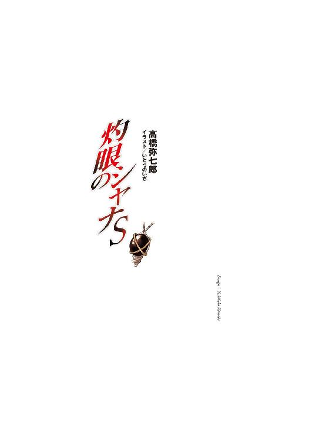
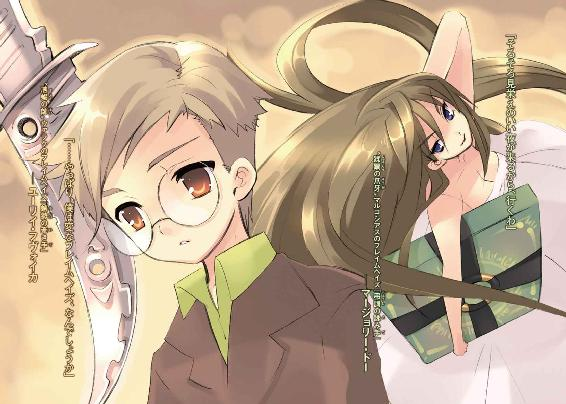
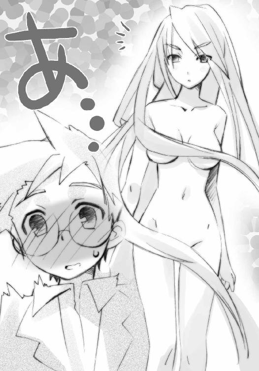
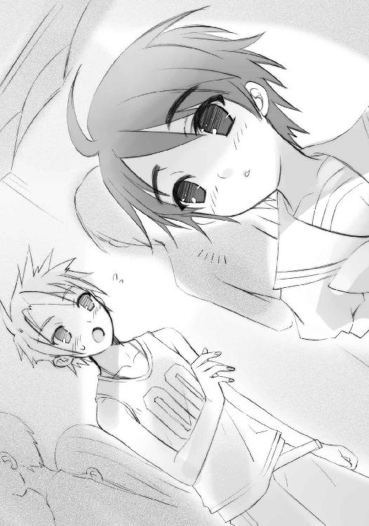

| 灼眼のシャナS | |
| 高橋弥七郎 | |
| KADOKAWA / アスキー・メディアワークス (2013) | |


本書（電子版）に掲載されているコンテンツ（ソフトウェア／プログラム／データ／情報を含む）の著作権およびその他の権利は、すべて株式会社アスキー・メディアワークスおよび正当な権利を有する第三者に帰属しています。
法律の定めがある場合または権利者の明示的な承諾がある場合を除き、これらのコンテンツを複製・転載、改変・編集、翻案・翻訳、放送・出版、公衆送信（送信可能化を含む）・再配信、販売・頒布、貸与等に使用することはできません。
夢を描きかえる自在法は、あるのだろうか。
「みんな、よく聞いて」
愚にもつかないことだが、いつもそう思う。
「明日の夜、またテトス親父の一座が来るのは、知ってるわね？」
悪夢......それを傍から見ている自分がいる。
「今度は、大道芸を披露するためじゃない。一つの計画を実行するためよ」
見る度に、飽かず鮮明な感情が溢れてくる。
「ええ、ご期待通り。宮宰に帰順した父の旧友と、渡りをつけることができたの」
沸き立つ、自分を取り巻く全てへの、怒り。
「テトス親父の仲間が、その宮宰の所に出入りしてた縁ってわけ。世間って狭いわ」
それらを砕き尽くさんとする、渇望と闘志。
「デイヴィットの糞野郎は宮宰の政敵でしょ？ 軽くつついたら案の定、乗ってくれた」
そして、なによりも深く暗い、復讐の悦び。
「私の要請が通っていれば、今夜来る一座の中に、宮宰の兵士が数人、混じってる」
あるいは、解放と自由よりも大きな、悦び。
「私たちの役目は、分かってるわね？ せいぜい最後の晩餐を楽しませてあげなさい」
痛いほどに胸躍らせる、大きすぎる、悦び。
「それと、一つだけ、忘れないで。ジェイムズもデイヴィットも......私が殺す」
悪夢の中、溢れるものは、苦悶ではなかった。
「無様な末路を、栄華の終焉を、たっぷり見せ付けてから、哂ってやる」
悪夢の中、満たされている気持ちは、悦び。
「私たちを汚し、奪った全てを抉り取ってから、哂ってやるわ」
決して果たされることのない、復讐の悦び。
「そうして、幾度も、殺す。殺して、私たちは......」
だからこその、悪夢。
１ 燃える川
全世界を揺るがした大恐慌から数年。
「──ああ、人間よ──」
その震源地となったニューヨーク、マンハッタン島が、新規まき直し政策の元、かつての繁栄を取り戻し、さらなる発展をぎ取ろうと、おっかなびっくり身じろぎを続けている。
「──私は讃えます──」
南北に長いこの島は、二つの川に挟まれていた。東を細く流れるのは、意味を名となすイースト川、西を太くたゆたうのは、この川を発見した探険家の名を取ったハドソン川。
「──物質を、力を──」
イースト川河口には、十六年もの歳月を費やして架けられた巨大な吊り橋があった。両端の接岸部に、優雅にして剛健なローマン・アーチを聳えさせる、ブルックリン橋である。
「──運動を、変化を──」
真昼の陽光を翳らす曇天の下、この中世の城門とも見える石造りアーチの上に、最先端のトレンチコートをはためかせ、また朗々たる音吐で歌い叫ぶ奇怪な姿があった。
「──ああ、人間たちよ──私は、祝福します──」
冬迫る寒風にも堪えず笑うそれは、人間ではなかった。ソフト帽を押さえる火掻き棒のような手。瀟洒なスーツの上、本来なら首のある場所に突き出た丸型メーター。体中からは、鉛色の火の粉が漏れ、舞う端から蒸気となって立ち上っていた。
「もっと、変えなさい、もっともっと、作りなさい──」
感極まったそれが、遂に見ること叶った世界第一の近代都市、橋の向こうに摩天楼群を聳えさせるマンハッタン島へと、両腕を広げ、声を張り上げる。
「人間たちよ、見せなさい、世界を塗り替えるほどの力を、私に!!」
刹那、
ゴオッ、と群青色の炎が直下のイースト川から吹き上がり、全てを舐めて通り過ぎた。
「おおっ!?」
後には、イースト川の水面に奇怪な紋章が火線で描かれ、ブルックリン橋全体を丸ごと包み込む陽炎のドームが出現している。ドームの壁面には火線と同じ群青色が揺らめき過ぎり、内部にある全て──橋上の車が人が、川行く船が水面が──静止していた。
この世の理に干渉し、在り得ない事象を思うが儘に起こす『自在法』の一つ。
内部を世界の流れから切り離し、外部から隠蔽する因果孤立空間。
「封絶!?」
驚いたそれは咄嗟に、鉛色の蒸気を足下から噴射して飛び退った。
その影も消えない足元へと、群青色に輝く炎の弾丸がドドドッ、と立て続けに突き刺さり、炸裂する。石組みのローマンアーチが粉々に爆砕され、濛々たる粉塵の中、崩落を始める。
「フレイムヘイズか!!」
ドームの高い天井へと舞い上がり、眼下の光景に目ならぬメーターを落とすそれの頭上、
「こーんにちは、〝紅世の徒〟」
「早速だがよ、死ね」
一つの姿が、二つの声を投げ落とした。身の周りを幾重にも渦巻き輝いていた奇怪な文字列が弾けるように散って、今まで遮断していた存在感を気配を、十全に誇示する。
浮かぶ本の上に立つ、美貌の女だった。
風に靡く艶やかな栗色の長髪と、抜群のスタイルを包む白く細いロングドレスの麗容。しかし、見る者に刻み付けられるのは、眼差しに満ちた殺気の脅威のみ。
対する、〝紅世の徒〟と呼ばれたそれが、
「この炎の色から察して、貴女は──」
言う間にも、女は腕を鋭く振り下ろしている。指先の軌跡をなぞるように群青色の力が迸り、力は炎に、炎は無数の矢となり、空を貫いて行く。
（評判どおり、短気で乱暴だ）
〝徒〟は呆れつつ、火掻き棒のような両手を上に差し出して、袖口から鉛色の蒸気を噴出させる。襲い来る矢を防ぐのではなく、自身を急降下させるためである。
（名乗り合いもなしに仕掛けてくるとは）
穴の空いた風船のように、コートを纏った頼りない体はヒュルヒュルと落下し、追いすがる炎の矢が触れるか触れないか、という際で、蒸気が、今度はズボンの裾から猛烈な勢いで噴き散らされる。川面は爆発したかのように蒸気で満ち、その中から、
「おお、っと、っと？」
〝徒〟は水切りの石のように、火線走るイースト川を、横に跳ね滑った。
僅か遅れた炎の矢は、蒸気の圧力に撓んだ川面に悉く没し、爆発する。
その膨れ上がる水煙の中から、
「どうやら、そちらの名乗りは受けられぬようで──ならばこちらから！」
封絶のドーム中空に浮かぶフレイムヘイズへと、堂々たる音声が届けられる。
「我が名は〝穿徹の洞〟アナベルグ!!」
返答は、
「ちっ」
という、一手二手の攻撃をかわされたことへの舌打ちだけだったが、〝徒〟・アナベルグは構わずに続ける。
「貴女方は、我らが〝紅世〟にも名高き〝蹂躙の爪牙〟マルコシアス殿、世界でも屈指の腕利き、『弔詞の詠み手』マージョリー・ドー殿、とお見受けしましたが？」
水煙の晴れてゆく中、川面に立つソフト帽にトレンチコートの怪人は、芝居がかった仕草で一礼した。帽子の鍔の下から上空を、メーターだけの顔で覗く。
「だったらどーだってんだぁ!?」
まっしぐらに突っ込んでくる本・マルコシアスが耳障りな雄叫びで、
「黙って死んでりゃいいのよ!!」
その上に立つ女・マージョリーが、戦意に燃える怒声で、それぞれ返した。返して、本を宙で急停止させ、掌を広げる。
動作の峻烈さが煌きとなって現れたかのように、攻撃の自在法・炎弾が数十もの数、放たれた。先の二手と違い、炎は直接アナベルグを狙わず、弾道を四方八方へと散らしてゆく。
「お、おお？」
メーターの首が、針を揺らしてクルリと回り、自分の周囲に着弾する群青色の輝きを、ガラスの顔面に映した。
と、その輝きが水面を跳ねた。跳ねて転がり、後に炎の軌跡を残してゆく。
ものの数秒で、水面にはアナベルグを囲んだ、高々と燃え上がる炎の壁が現れていた。包囲に落ちた〝徒〟は再びクルリと首を回し、感嘆の声を火の粉から蒸気に変えて、漏らす。
「なんとなんと、さすがは音に聞こえた自在師。これだけの自在法を、ろくな式の構成補助もなく、瞬時に──」
マージョリーには、話を聞く気など全くない。
「っは！」
気合一閃、広げていた掌を握り込んだ。
応えて炎の壁が、中央にあるアナベルグへと収束する。
ボガッ、
と空気が圧縮される鈍い響きがあり、遅れて水面が逆巻き爆ぜた。水蒸気の奥、川の真ん中に穴が空き、すぐに水が緩く大きく流れ込んでゆく。
鉄塊すらも容易く砕き潰す、全周からの爆圧である。いかに〝徒〟が身体を強化していようと一たまりもない。
「ヒャーッ、ハーッ！」
先の攻撃で崩れた橋げたが、幾重もの高波に打たれるのを見下ろして、
「これでお陀仏、チョロいもんだ！」
マルコシアスが下品に笑い、本たる身を激しく揺らした。
これを踏ん付けて鎮め、マージョリーも鼻で笑う。
「ふん、気配がやたらと大きいから、隠蔽の自在法までかけて近付いたってのに。案外大したことなかったわね」
言って、いつもの仕事『〝徒〟の討滅』に付き物の、いつもの後片付け『封絶内部の修復』を行おうと、未だ泡立つ水面に指を向け、
「とんだ雑魚だっ──」
感想を口にしかけて、ようやく気付いた。
「──っは!?」
熱と衝撃の余韻に荒れ狂う水面下に、未だ気配がある!!
「なんだ!?」
マルコシアスも叫ぶ。
気配の源泉は、大重量の出現を予感させる水面の撓みを反秒起こし、盛り上がる。
濁った紫色の光を爆発させての、出現。
（これは！）
（ヤベェ！）
二人、声をかける間も惜しんで身をかわした──はずだった本の端を、イースト川の中から伸び上がったモノの巨体が、表面の鱗が、纏った炎が、危うく掠めた。
「っ！」
「う、おっ!?」
「ゴァァァオオオオオオオオオオオ──!!」
水を巻き上げ牙を震わす豪咆とともに鎌首を持ち上げたのは、悪夢の住人のような、鉄道貨車より一回り二回り太い、巨大な海蛇。
その怪物が、見た目以上の脅威を持つ存在であることを、宙できりきり舞いするフレイムヘイズは知っていた。視界の回る中、
（しまった、トーガ──）
身を守る鎧ともなる炎の衣を纏おうとしたマージョリーに、
（下だ！）
マルコシアスが四半秒の内、声なき声で叫んだ。
距離を取ろうとした二人の直下から、
もう一本、二本、三本の、先より細い海蛇が、先に倍する速度で突き出された。
状況は分かっていた。
多数の〝徒〟が襲い掛かってきたのではない。これらの海蛇は全て、水面下で一つに繋がっている、全てが一人の〝徒〟──否、〝紅世の王〟なのである。
「くっ！」
焦るマージョリーは本ごと身をひねり、立った姿勢のまま曲芸のように、三本の刺突をかわした。その傍ら、通り過ぎた首の全てに炎弾を発射、命中させている。
が、立て続けに炸裂する群青の爆炎の向こうから、
「ガアアアアア───！」
真正面、最初に飛び出した巨大な鎌首が、まるで太い鞭か棍棒のように、マージョリーへと振り下ろされてきた。
ズ、ドンッ、と、
（や、られた！）
（く、そったれえ！）
二人して罵る間に、吹っ飛ばされていた。
体中の骨がバラバラになるような衝撃が、一瞬で痛みを通り越して痺れに変わり、意識が飛びかける。先のアナベルグのように水面を跳ねた身は、マンハッタン島の東岸、サウス・ストリート・シーポートへと、叩きつけられる。
寂れた埠頭のコンクリートが弾け、打ち捨てられたボートが幾つも砕け、嵐のように木切れが宙を舞い、渦と巻いた。
その残滓が、カラ、カラン、と乾いた音を立てる中、
「う、ぐ」
マージョリーは乱れた髪を押しやるように、グイと頬を拭う。
（く......なんて、こと......大きな気配の持ち主は、こいつの方......！）
大きな気配を持った一人がいたのではなく、大きな一人と小さな一人が同じ場所にいたのだった。気付かれないよう、遠くから自身に気配遮断の自在法をかけて近付いたため、細かな察知に数秒のタイムラグができてしまったらしい。
（なんて、ヘマを......!!）
怒りと衝撃に揺らぐ視界の中、海蛇の全体──炎弾で砕けた三本の首と巨大な鎌首──が輪郭を乱した。まるで圧縮されるかのように、それは小さく凝り、ジワジワと人の形を取ってゆく。やがて現れたのは、スーツを着崩した長身、オールバックスタイルのプラチナブロンド、彫の深い顔に、近年出回り始めた黒レンズの眼鏡をかけた男だった。
海蛇の額に乗っていたらしいアナベルグが、男の傍らに降りてきた。ソフト帽を取って、また芝居がかった、より丁重な一礼をする。
「あの『弔詞の詠み手』を一撃とは......救援に感謝いたします、〝千変〟シュドナイ殿」
「そういう、依頼だからな」
誇るでもなく、シュドナイと呼ばれた男は肩をすくめ、答えた。
（やっぱり......奴、か）
砕けた木片に埋もれる中、マージョリーは半ば閉じた目で、崩れたアーチの上に浮かび、猛烈な違和感を周囲へと撒き散らす男を捉える。
実際に交戦したことこそなかったが、噂は常々、耳にしていた。
己の体を状況に応じて自在に変形させる、圧倒的な戦闘力の持ち主。
古来より、幾人もの名のあるフレイムヘイズを屠ってきた〝紅世の王〟。
他者から護衛の依頼を受け、それを果たすことに喜びを見出すという変わり者。
〝千変〟シュドナイ。
考えるまでもない。彼が今ここにいるということは、〝穿徹の洞〟アナベルグの依頼で護衛を務めているのである。万全の状態で戦っても勝敗の見極め付かない難敵たる〝王〟が。
マージョリーは、事前に気配の大きさを感じていながら、迂闊に仕掛けた自分の間抜けさを呪った。
（今、正面から仕掛けられたら、やばい......！）
（ちっ、半世紀ぶりに教皇子午線越えて早々、〝徒〟を仕留め損なって逃げの算段かよ、なんとも幸先のいいこったぜ）
（無様の上に殺されるよりはマシでしょ）
（そりゃ、そーだ）
声なき声を交わす二人をシュドナイは遠くに見て、顎で指す。
「とどめを刺すか？」
ところがアナベルグは、
「いえ、放っておきましょう」
軽く答え、ずれた帽子を被りなおした。
シュドナイは、決着にややの執着を示す。
「いいのか？ あの女、野放しにしておくと厄介だぞ」
「お知り合いですか？」
「いや、直接やり合うのは初めてだが......この数百年の間に、多くの盟友らが討ち滅ぼされている」
「それはそれは」
アナベルグは、彼が所属するという古く大きな組織のことを思い、しかし、
「とはいえ正直、私は彼女の身命に興味など持てないのですよ」
言って蒸気の溜息を吐いた。
「フレイムヘイズは、力を得る代償に、己が全てを〝王〟に捧げてしまった人間、世界に向けて広がるはずだったものを捨ててしまった抜け殻ですから......それに」
さらに、金属パイプの首をギイ、と傾げる。
「すぐに片付けられる相手でもないのでしょう？」
「まあ、な」
シュドナイは、遥か遠方へと打ち飛ばした敵にサングラスを向ける。
痛撃を与えることには成功したが、油断は禁物だった。それですんなりと、とどめまで刺させてくれるような女なら、そもそもフレイムヘイズ屈指の殺し屋と同胞たちに恐れられてはいないだろう。数百年の戦歴は、決して運や力だけでは拾えない、討ち手としての、強さの所以たる何かの賜物なのである。
一方のアナベルグも、依頼者としての都合で言う。
「もし手こずったりして、その中で私に危害が及んでは本末転倒。なにより、無駄に時間を費やすわけにもいきません。せっかくフレイムヘイズたちが欧州に駆り出されている隙を見計らって、この美しきマンハッタンにやってきたのですから」
「......分かった、依頼主に従おう」
シュドナイも、示された揺るぎようのない理屈に納得の頷きを返した。
「どうも」
今度は軽く、ひょいと帽子を上げてアナベルグは礼を言い、宙で体ごと向き直る。
「では、お二方！」
マージョリーを遠く映すメーターの顔が、針をいっぱいに振って興奮を示す。ショーの司会者のように、両手がいっぱいに広げられる。
「どうぞ、広き世界にても数々起こしたる我が悦楽、『文明の加速』を、ご覧あれ！ 加速させる我が行いを、人間たちへの礼賛を、ご覧あれ!!」
音吐朗々の声が、その奇怪な姿が、身から零れ落ちる火の粉の変じた鉛色の蒸気に埋もれ、ぼやけてゆく。
「ほどなく、ほどなく......」
木霊が失せる頃には、二人の姿は封絶の内から消えていた。
この去る様を、好き放題に見せられ聞かされた二人は、木片の中で倒れたまま、
「......」
「......」
負けた悔しさへの歯軋りではなく、生き延びたことへの安堵を漏らした。
「......ひゅう、天の賜物、棚から幸運、ってか」
「......バカマルコ」
ボン、とマージョリーは力なく本を叩いた。
それを契機として、彼女の力が火の粉の形を取って、巨大な封絶内に舞い上がる。
群青に輝く力の粒は、崩れ落ちたブルックリン橋、砕けた橋げた、バラバラになったボートへと吸い込まれ、まるで時を戻すように、戦いの痕跡を修復してゆく。
一分あるなしの間に、全ては元通りに直っていた。
「......あとは、これか」
マージョリーは、木片も失せ、埠頭に転がるままとなった自身の惨状を見て、言う。
「このドレス、結構気に入ってたんだけど」
純白だったロングドレスの各所は、引っ掛けてズタズタに破られ、焦がされて穴が開き、川の水と粉塵と泥に汚れて、最低限の面積しか隠せないボロ雑巾と成り果てていた。
封絶内の修復は、断絶した外部に、内部を整合させるという形で行われる。この、自在法の持つ特性・現象から、どんな大きなものであっても、焼かれ砕かれた人間が何百といても、修復は完全確実に行われる。
ただし、内部で戦うフレイムヘイズ、あるいは〝徒〟という『断絶の中にあっても動ける存在』は、自身に付随する物体含め、この埒外に置かれる。自身に付随する云々とは、服や装飾品のことである。封絶内の全ては修復が可能で、体力や負傷も時間さえあれば回復するが、フレイムヘイズ自身の纏う物品だけは戦闘の名残を留め、ボロボロのままだった。
マルコシアスが下品に笑いかける。
「キーッヒヒヒ！ しゃーあんめえ、負けの烙印、生の代償にしちゃ安いもんよ！」
「たしかに、ね」
相棒の活を受けて、マージョリーはきしむ体を思い切って立ち上がらせた。ついでに、素早く全身に手をやって、負傷の度合いを確かめる。あるのは僅かな気だるさと鈍痛、目に見える傷も擦過傷や打撲程度。重症というほどのことはなさそうだった。
「それじゃ......っしょ、と」
拍子をつけて、〝グリモア〟──彼女にフレイムヘイズとしての異能の力を与える〝紅世の王〟、〝蹂躙の爪牙〟マルコシアスの意思を表出させる本型の神器──を、すぐ脇にある、直ったばかりのボートの中へと放り込んだ。
すぐさま抗議の声があがる。
「おい、もう少し丁寧に扱ってくれや、我が放埓なる投擲者、マージョリー・ドー？」
「着替えに速やかな退去を求めるのは、レディの権利よ」
「あーあー、そうかい」
「スーツを頂戴。マルセイユで買ったやつ。下着は白ね」
「あーいあいよ、我が過酷なる命令者、マージョリー・ドー」
不平とともに〝グリモア〟のページがバラリと開き、群青の輝き一閃、服を吐き出した。
マージョリーは、ヒラヒラと舞い降りるこれらを笑って受け取り、
「ん──」
周囲をぐるり見渡した。敵たる〝徒〟に対するものではなく、着替える女性の、気分としての警戒である。もちろん封絶は、未だ世界を静止させている。〝徒〟の去った後は、完全なる閑寂の世界だった。
「──ん、よし」
誰にともなく言うと、受け取った服を傍らに置く。そうして、美麗の女傑は半ば破るようにボロボロのドレスを脱ぎ、焦げた靴を放り捨てた。さらに軽く手を振って、薄手の下着も燃やし尽くすと、ボートの中の相棒に声をかける。
「マルコシアス、お願い」
「あいあいよー」
ボン、と突然その体が群青の炎に包まれた。
これは『清めの炎』という、体を消毒、洗浄する自在法である。
フレイムヘイズらは戦いの後、傷の治癒を早めるために、これを使うことが必然を伴った習慣となっている（この簡便爽快な自在法のあるためか、討ち手らは古来から総じて清潔を尊び、身の周りを衛生的に保つ傾向にある）。
強力なフレイムヘイズは治癒も早い。擦過傷は、この炎に包まれる間に治っていた。
「さて、と」
そうして、群青の消えた後に現れたのは、まさに絶世たる──白き裸身。彫像絵画の美では決して在り得ない、生命の躍動感としなやかさに満ち満ちた、豪壮絢爛なる起伏だった。

それを、
「っ大丈夫ですか!?」
「......」
封絶の中に居るはずのない、突然飛び出してきた少年の目に、眼鏡に、余すところなく、晒した。
「あ、れ？」
「......──ッ」
絹を裂いて砕いて擂り潰すような悲鳴とともに、また封絶内に爆発が起こった。
悪夢の中では、全てが上手く行く。
これ以上ないほどに、上手く行く。
（やめて）
テトス親父は、父の旧友からの書状を携え、予定に倍する兵士たちを引き連れてきた。書状には、同僚の娘たちの身の安全、然るべき身請け先を探す旨、保証されていた。
（もう、やめて）
芸人と馬丁に扮した兵士たちは、玄関や庭、裏口だけでなく、調べ上げた隠し扉や抜け道にも密かに配置された。女たちを囚える檻だった屋敷は、主と客にとって必殺の死地と化した。
（見たく、ない）
ジェイムズの色金狂いは、私によってデイヴィットの糞野郎を落とすことで、その近隣の筋から、『館』の新たな上客を獲得できる、宮廷に繋がりができる、と浮かれていた。
（もう、見たくない）
常は用心深いデイヴィットの糞野郎も、遂に私に受け入れてもらえる日が来た、という期待と確信から、緩みきっていた。屈強の護衛たちにも、その緩みが伝染するほどに。
（お願い）
娘たちは、この護衛たち、『館』の用心棒や男どもを、いつも以上に歓待した。私と糞野郎の愛の成就を祝う、という名目を怪しむ者は、どこにもいなかった。
（お願い、だから）
腰に感じる腕、頬に感じる頬に、思わず催す吐き気と悪寒を、しかしドレスの中のナイフを握りしめることで、必死に抑え込んだ。これを存分に振るう時を思い描いて、耐えた。
（見せないで）
今ここにある全てを、壊して、殺して、奪って、嘲笑ってやる──そう、誓った。
私の合図で始まる、私の手で変える、私の意思が世界を拓く──そう、思った。
（ここから先を、見せないで──）
背中を焼くような焦燥感と、胸に甘く満ちる快美感だけを、抱いていた。
そして、時は来た。
２ 人外の扉
人ならぬ者たちが、この世の日に陰に跋扈していた。
古き一人の詩人が与えた彼らの総称を、〝紅世の徒〟という。
彼らは〝紅世〟という、〝歩いてゆけない隣〟から渡り来た。彼らは〝存在の力〟という、人がそこに在るための根源的な力を喰らって自分自身を顕し、在り得ない不思議を現した。
彼らに〝存在の力〟を喰われた人間は、いなかったことになった。
その人間が育ち、関わり、接するはずだった全ては、この欠落により、歪んだ。生まれ、決して埋め合わされない歪みは〝徒〟の跋扈に伴い、大きくなっていった。
そして、〝紅世〟において、『この世で生じた歪みが両界に大いなる災厄を齋す』との観念が広まり......危機感を持った〝王〟たちは一つの、苦渋の決断を下した。
同胞たる存在の乱獲者たちを討ち滅ぼす、という決断を。
その尖兵、あるいは道具となったのは、〝徒〟への復讐を誓った、人間たち。
己が全存在を契約する〝王〟に捧げ、代償として異能の力を得た復讐鬼たち。
彼らの総称を、フレイムヘイズという。
「あのー」
「......」
ブルックリン橋を渡って入るマンハッタン島の南端部、ロウアー・マンハッタン。
この島が、アメリカ・インディアン──まだ先住民という呼び名は一般的ではない──からオランダ人に僅か二十五ドル相当の物品で売り渡され（もちろん、この国の開拓神話の大半と同じく、真偽のほどは定かではない）、ニューアムステルダムという名で入植の始まった最初期から開発を受けていた地区である。
「ぼ、僕、〝蜴の帥〟ウァラクのフレイムヘイズ、『魑勢の牽き手』ユーリイ・フヴォイカって言います」
「......」
当初、陸海の敵に備えるオランダの要塞外縁部だった木製の防壁は、三百年の時を経た今、名をそのままに金融の一大拠点へと変貌を遂げている。即ち、先だって世界を席巻した大恐慌の震源地・ウォール街である。
「えーと、今、イーストエッジさんの外界宿で、見習いとして働いてます。さっきも、その、封絶が張られたので、様子を見に......戦闘、終わってたみたいでしたから......だから、あれは別に、見ようと思って、見たわけじゃ......」
「......」
新たにスリーピースのスーツを纏ったマージョリーは今、ユーリイと名乗る少年フレイムヘイズとともに、この高層建築の壁に挟まれた通りを、西に向かって歩いていた。忙しなく行き来する雑踏の頭越し、正面に聳える高い尖塔を見て、思わず眉を顰める（この尖塔を持つ古い教会の名は、トリニティ教会という）。
「い、いえ、この眼鏡を弄るのは癖で、さっきの、あれを見たからとか、そういうのは関係なくて、えーと......そうだ、ウクライナ移民で、十六歳です。あ、これはフレイムヘイズになってからの一年も足してます」
「......」
サウス・ストリート・シーポートでの衝撃的な出会い以降、必死に話しかけるユーリイを無視し続けるマージョリー......ではなく、少年の腰にある古風な短剣が、気だるそうな女の声で難詰する。
「バーカ、フレイムヘイズが年齢なんか数えてどーすんのよ」
「あ、ごめん」
ユーリイは、自分と契約した〝紅世の王〟──〝蜴の帥〟ウァラクに、その意思を表出させる短剣型の神器〝ゴベルラ〟に、ペコリと頭を下げる。その拍子に眼鏡がずり下がった。
慌ててこれを押さえる契約者へと、ウァラクは気だるさに呆れを混ぜて言う。
「だから、簡単に頭下げんじゃないわよ。ったく」
「ごめ──あ」
「ふう......」
「ヒャーッハハハ！ 新兵さんゴクローサンってとこか、〝蜴の帥〟？」
マージョリーの右脇に提げられた〝グリモア〟を揺すって、マルコシアスが大笑いする。
さすがにこの大声は、周囲のニューヨーカーたちを驚かせたらしい。老若貧富を混ぜた人ごみから、奇異の視線が一見二人の四人に向けられる。
「えっ、あ」
ユーリイは救いを求めるように腰の短剣を見下ろし、しかしそこから薄情な静寂だけを受け取った。窮した挙句、大声で先の物真似をする。
「ハ、ハハッ、ハーッハハハ！」
「......」
マージョリーは僅かな溜息を吐いて、この少年を横目で見る。
『魑勢の牽き手』ユーリイ・フヴォイカ。
なんともらしくないフレイムヘイズだった。
見た目の強さを感じさせない、小柄で痩せぎすな体格。気弱半分、生真面目半分の容貌に、無用なはずの眼鏡までかけている（当然、伊達眼鏡だろう）。身なりもそこいらの子供と変わらない。長めのジャケットの内側、腰のベルトに古風な短剣型の神器〝ゴベルラ〟を差しているのが、せいぜいの特徴だった。
なにより、世の陰に〝紅世の徒〟を狩る討滅の追っ手らが持つ共通の雰囲気である、切羽詰まった気迫やそれを隠す演技、悟り抜いた静けさ......どの匂いもしない。
少年の存在に苛立ちのようなものを感じつつ、マージョリーはようやく口を開いた。
「ユーリイ、だっけ？」
「はい！」
「イーストエッジは元──」
「あの！ 僕、『弔詞の詠み手』さんのこと、ずっと尊敬してたんです！」
「──尊敬？」
マージョリーは自分の言葉を切られた不愉快さも忘れ、つい訊いていた。
「はい！」
話しかけられたせいで箍が外れたかのように、ユーリイは次々と言葉を連ねる。
「外界宿で見習いとして働いてると、あちこちで活躍されてるフレイムヘイズの皆さんの噂をたくさん聞くんです。『輝爍の撒き手』さん、有名な『鬼功の繰り手』さんと『極光の射手』さんのお二人、亡くなった方でも、伝説の『炎髪灼眼の討ち手』さんに『理法の裁ち手』さん、もちろん『星河の喚び......あ、イーストエッジさんは称号で呼ぶと怒るんですけど」
「ちょっと黙って」
無邪気すぎる声色に、なにか耐え難いものを感じたマージョリーは、黙らせるつもりで掌をその前に突き出す。
と、なにを思ったかユーリイは、
「わ!?」
叫んで、素早く飛び退いた。
段差による区別もろくにない、轢いた者勝ちの車道の端に。
「馬鹿、なにやって──！」
逆に驚かされたマージョリー（彼女は、大都市における馬車の暴走と轢死を日常的に見ていた）が差し出した手を、その袖口を、ユーリイは慌てて掴む。引かれるとともに、
ブツン、と変な音がして、
「あ」
着替えたばかりだったマージョリーのスーツ、そのボタンが飛んだ。
「っ、す、すいません！ イーストエッジさんに、不意打ちを食らわないようにする訓練を、いつも受けてて、その、本当にすいません！」
ペコペコ謝っては眼鏡を押さえる契約者、異能の討ち手であるはずの少年の姿に、
「はぁ......」
腰の短剣から、ウァラクが再びの溜息を漏らす。どうやら、この手の失敗は初めてのこと、珍しいことではないらしい。
マージョリーは、そんな〝紅世の王〟への同情から、怒るのを止めた。
「イーストエッジは、元気なの？」
脱力した声で訊き直しながら、前のボタンを全て外し、ラフな格好になる。結果として、ジャケットで隠されていた胸の膨らみが、大きく強調されることとなった。
ユーリイは、自他の行為に眺めに、しょんぼりしたり顔を赤らめたりと忙しい。ついでに、その鼻先に、傍らを走り抜けた自動車の排気ガスを吐き掛けられてむせた。
「ゲホ、ゲホッ、は、は、はい」
「ギィーッヒャヒャヒャブッ!?」
懲りずに大声で笑う相棒を平手で黙らせたマージョリーは、率直な感想として言う。
「あんた、変なフレイムヘイズねえ」
特に他意を込めた言葉ではなかった。この妙に腰の低い、らしくない少年なら、まくし立てるような答え、大げさな謙遜の同意、どちらかが返ってくるだろう。そう思っていた。
しかし、
「......」
なぜか少年は、表情を曇らせて黙ってしまった。
「なに？」
もう一度訊かれて、慌てて答える。
「......いえ、なんでも！」
その不審な様子に、僅かふと引っかかるものを感じたマージョリーは、考えかけて、止めた。他人の事情をいちいち詮索するのは趣味ではない。
（そうよ、知ったことじゃないわ）
その店、『イーストエッジ外信』は、ウォール街からウィリアム通りを北に折れた先、探偵事務所と法律相談所に挟まれた、小ぶりな低層長屋の一階にあった。
昔は多岐に渡る人種来歴からなる移民向けに故国の新聞を売る輸入業者もどきだったが、今は独自に特派員も出して、欧州の情勢をそれぞれの言語で伝える真っ当な外信社としての業務も行っている......ということになっている。
店構えの割に情報が確かで、各種言語版も揃っていることから、定期の配信日には大変な賑わいを見せるが（現在、最も関心を集めているニュースは、フランコ将軍の動向である）、今日のような通常営業日だと、単なる場末の新聞社の趣である。来客も、日に十人あれば良い方、という閑散ぶりだった。
その質実以前、装飾の省略が醸し出す素っ気ない玄関に、マージョリーは立つ。扉の上、『イーストエッジ外信』という意味の言葉が、数ヶ国語・横書き・縦並びに書き付けられた古い看板を見上げた。懐かしさを心地よく、変わらなさを愛おしく感じる。
「半世紀前と同じね」
「ま、模様替えする柄じゃねーわな」
二人して笑い合い、『弔詞の詠み手』は看板の掲げられたドアを素通りした。その隣、同じ一階にあるドアを何気なく、力を込めて開ける。人間の腕力では絶対に開けられない、単純な力技でしか開かない、これはフレイムヘイズ用のドアだった。
ギリギリギリギリッ、とドアに結わえられた紐がベルをけたたましく鳴らして、異能者の来訪を店全体に告げる。
入った中は、意外に広い。様相は、数年前までご法度だった『もぐり酒場』に似ていた。乱雑に置かれた酒瓶と酒樽、板を寝かせただけのカウンターに少数の椅子、剥き出しの煉瓦と板張りからなる壁、宿泊所兼構成員宿舎となっている上階への細く急な階段......その、探せば街に幾らでも見つかるだろう光景に、しかし異質なものが、二つ混じっていた。
一つは、正面の壁を埋めるほどに無数張られた、海図と地図。
図法版型、てんでバラバラなそれらは、古いものの上に次の図が積み重なって、歴史の層を成している。一つ一つには、異なる筆跡でのメモや矢印、○や×といった記号が乱雑に書き記されていた。今、壁に見えるのは合衆国地質測量局の最新版世界地図で、中心に位置するヨーロッパに、大きく○が書き付けられている。
もう一つは、青磁色の光で店の中を薄く照らす、掌大の正十二面体。
釣り糸もなく天井近くに静止するこれは、不思議な、在り得ない現象を起こす器物、すなわち宝具である。設置した者の力を受け（青磁色は、宿主たるイーストエッジが持つ炎の色）、一定範囲内の気配を遮断するガラスの正十二面体『テッセラ』......全世界に点在するフレイムヘイズらの情報交換・支援施設たる外界宿の核、世界で最も数の多い宝具だった。
表向きの職業や調度の差異に拠らず、この二つを備えている建物・場所が、外界宿と定義される。『イーストエッジ外信』は、そのニューヨーク支部だった。
マージョリーは、この見た目も異質な無人の店内をドカドカと進み、カウンター席に腰掛けた。ついでに横の席へと、重い〝グリモア〟を据える。
と、板壁一枚挟んだ隣、表向きの商売である外信社から、
「はーい、店番代わりまーす！」
元気なユーリイの声が響いてきた。彼はここの構成員なので、来客用のドアは使わず、人間用のドアから入っている。
やがて一人の男が、きしむドアを開けて入ってきた。
中肉中背、まるで岩になめし革を被せたような厳つい面相の、頑健そのもののアメリカ・インディアンである。ワイシャツにズボン、今付けた分厚い布のエプロン、というごく普通の格好が、微妙に似合わない。
最低限、唇を震わすように、しかし意外に爽やかな声で、フレイムヘイズ『星河の喚び手』イーストエッジは挨拶をした。
「未だ暴狼の加護を受けているようでなによりだ、怒れる獣」
「よく、きたな」
短く深く、貫禄のある男の声で続けたのは、イーストエッジがベルトから提げている、浮き彫りを施した石のメダルである。これは、彼が契約した〝紅世の王〟──〝啓導の籟〟ケツアルコアトルの意思を表出させる神器〝テオトル〟だった。
「おひさしぶり、イーストエッジ、ケツアルコアトル。また寄らせてもらったわ」
ユーリイに対するものとは打って変わった、喜びを含んだ声でマージョリーが返した。
ゆっくりとカウンターの中へと入る同業者に、マルコシアスも、こちらは常と同じ軽薄な口調で挨拶する。
「しーばらくだったなあ、怪物コンビ」
「ああ」
「変わりない、ようだな」
一人は顔に皺を刻むように、もう一人は声に少量滲ませて、笑い返した。
「こっちは、すーっかり変わっちまってるよーだな」
マルコシアスは炎を少量噴いて囃す。
「なんでえ、この流行らなさはよ。世界恐慌、未だ暴威健在なり、ってか？」
マージョリーは相棒の言う状況、一人の討ち手もいない、寂寞とした店内を見渡した。
「やっぱり、このニューヨークからも駆り出されたのね。あの坊や以外にいないの？ マンハッタンに同業の気配がまるでないなんて、どんな冗談かと思ったわ」
イーストエッジは微かに顎を引いて頷き、
「仕方あるまい。悪名高き［革正団］との戦いだ。皆、勇んで出て行った」
「無事であれば、いいが」
ケツアルコアトルが慨嘆する。
答えを受けたマージョリーは、店の壁にある最新版の地図、ヨーロッパを大きく囲む○印に目をやった。
現在、世界中のフレイムヘイズたちは、とある〝紅世の徒〟による大集団との戦いに駆り出されている。この、近代に忽然と現れた結社［革正団］は、奇天烈な思想の元、討ち手と〝徒〟双方にあった暗黙の掟を平然と破り暴れる（当人たちは「運動」と呼んでいたが）、無茶苦茶な連中だった。彼らの孕む危険性を恐れた欧州の外界宿は、急ぎ全世界へと伝令を送り、応えた者たちが久方ぶりの大規模な戦いへと赴いている。
マルコシアスが、その戦いの一端を見た者として笑う。
「ヒッヒ！ フレイムヘイズってな、協調性ゼロだからなあ。今度は旗持ちの炎髪灼眼もいねえし、集まったところで統制が取れんのか、怪しいもんブッ!?」
「わざわざ心配を煽ってんじゃないわよ、バカマルコ」
ゲタゲタ笑う〝グリモア〟を、マージョリーは張り飛ばした。彼女は、この心身ともに落ち着いたフレイムヘイズが嫌いではないのである。
「事実だろーがよ。ゾフィーの雷ババアも、今度は参戦しねーんだろ？」
なおも言うマルコシアスに、カウンターから声がかかる。
「天空の槌──」
イーストエッジは、〝払の雷剣〟タケミカヅチのフレイムヘイズ『震威の結い手』ゾフィー・サバリッシュのことを、こう呼ぶ。
「──は、緒戦で生涯の友を二人も失ったのだ。無理もあるまい」
「あんなイカレた奴らが相手じゃあね。一度の不覚がたまたま命に届いた、ってことよ」
マージョリーは今日のことも含めて平然と言った。
「こっちだって、やられる一方ってわけでもなし。なんせ、フォン・クーベリックの......あ、そうそう、マルコシアス」
「おっと、ほいさ」
〝グリモア〟がページを開いて、そこからポイ、と蜜蝋で綴じた封筒を吐き出した。
ピッ、と指二本でマージョリーはこれを取り、差し出す。
「はい、そのフォン・クーベリックから」
「手紙......？」
イーストエッジは怪訝な面持ちで受け取り、封を開けた。
外信社も、ドレル・クーベリック......この、欧州の外界宿を束ねる現代の偉人とは常時、表裏の業務で連絡し合っている。とはいえこの場合、手段に意味があった。
十九世紀の内に、大西洋海底ケーブルは開通している。アメリカの外界宿も、とうに委託業者を通じて、重要な情報の大半をそちら経由で遣り取りする仕組みになっていた。わざわざ手紙を、しかも名うての討ち手に託し送ってくるというのは、特別な案件である証拠だった。
それを感じて、イーストエッジは表情を曇らせる。
「この席は空けられん、参戦はしない、と既に伝えたはずだが」
言って天井を、心持ち顎を上げるように見上げた。
その先に浮かぶ正十二面体......結界発生装置『テッセラ』は、設置型の宝具である。結界を作るためには一つ場所に据えておかねばならず、力も断続的に給与しておく必要があった。動かすか力を途切れさせるか、どちらかの禁を破ると、途端に結界はその効力を失い、再び動かすにも相当な時間を要することとなる。
そうでなくとも、広大な大陸に古くから在る強力なフレイムヘイズ、『星河の喚び手』イーストエッジは、マンハッタン島における討ち手らの拠り所たる外界宿『イーストエッジ外信』を維持する、という役割に自らを縛っている。他行の要請に応えるわけもなかった（よほどの危機的状況でもない限りは戦意が湧かない、とある理由もある）。
もちろん、マージョリーもこれらの事情は重々承知である。
「別の用事じゃないの？ いくらフォン・クーベリックが急進的な人でも、この大陸から『大地の四神』を動かそうなんて思ったりしないはず」
彼女の言う『大地の四神』というのは、イーストエッジも含むアメリカ・インディアンの、いずれも強力な討ち手たる外界宿の管理者たちのことである。
「どーだかな。あの若え爺さん、とっぴなこと思いつくからよ、ヒッヒッヒ」
「ま、ゆーっくり、読んで頂戴」
この、何気ない客の気遣いを、酒場の主人は察し、言う。
「品が確かなのは、コーンウイスキーくらいだな」
「まだ、酒のルートが不安定だ」
ケツアルコアトルの補足に、クスリと小さな笑いが返った。
「やっぱ、しばらく寄り付かなくて正解だった？」
「そうだな。禁酒法時代は、出回る酒の質も最低だった」
また、皺を刻むように笑い返して、イーストエッジは大きな酒瓶と重いグラスをそれぞれ一つ、カウンターに置いた。
この十九世紀から二十世紀の初頭、百年程の短い期間の内に、欧州のフレイムヘイズ、特に外界宿の在り様は、急速な、そして抜本的な変革を起こしていた。
外界宿という、逃げ込むための隠れ家、立ち寄るだけの溜り場でしかなかった『場所』が、情報の交換と共有、活動資金の援助、迅速な交通手段の手配といった、本格的な『支援施設』へと再編成されたのである。
フレイムヘイズ──そもそもが個人的な理由に拠って立っているため協調性に乏しい──異能独自の力で世を押し渡る性質ゆえに集団行動が苦手──感情を爆発させる若年で契約する者が大半であることから組織感覚や社会通念に疎い──これら、群れることに全く向いていない人種に、支援の面のみとはいえ変革を与えたのは、たった一人の男だった。
『愁夢の吹き手』ドレル・クーベリック。
〝虚の色森〟ハルファスのフレイムヘイズたる幻術使いである。
彼は、老境に入ってから契約した変り種であるためか、闘争本能に衝き動かされ、復讐に猛り狂うという、常の討ち手らとは全く違うメンタリティを持っていた。
曰く、『漫然と〝徒〟を追うより効率的なやり方は幾らでもある。協力せよ、互助せよ、提携せよ』......一人一党を旨とする復讐鬼たちに受け入れられるわけもない主張を、彼は契約直後から、行く先々で説いた。もちろん、誰もまともに耳を貸していない。彼自身が、直接的な戦闘力に欠けるフレイムヘイズだった、という理由もある（言うまでもない、討ち手らにとって最も権威ある箔は、強さである）。
そして数十年後、彼は煙たがられた挙句に、当時、あぶれ者や変り種が行き着く定位置、あるいは暇人の座る椅子でしかなかった外界宿の管理者に就任した。彼を知る誰もが、「これであの変物も大人しくなる、意味不明な説教も聴かずに済む」と思った。
ところが、彼にとって、それは行き着く先などではなかった。
どころか、本当の事業の、ほんの始まりに過ぎなかったのである。
その証として、各地の外界宿へと、「情報提供の定期通信と交換を行いたい」という提案が、回状として巡り始めた。小さな、苦難に満ちた、しかし大事業への、一歩だった。
当初は、これを通わせる協力者や志願者の確保にすら苦労した。回状を渡す約束を守らない者、端から行為自体を馬鹿にしていた者などが多かったからである。肝心の回状を渡す相手の外界宿管理者にすら、当初はその意味や実効性を疑われれるばかりだった。
まさに孤立無援、孤軍奮闘の状況下、それでも彼は驚異的な粘り強さと熱意を持って、説得と実行を続けた。
その彼に対する協力は、道化への哀れみという形で芽吹いた。
次に、討ち手として動いていた時代にできた友との合流があった。
すぐに、彼の外界宿を訪れる顔馴染みの討ち手間で、習慣化していった。
やがて、回状に記された情報の恩恵、追跡の利益を受けた者が、幾人か出た。
いつしか、出回る範囲、交換する討ち手、情報網に加わる外界宿が、増えていた。
幾つもの大きなトラブルを、幾十もの小さなトラブルを、じっくり確実に超えてゆく内に、また十年単位での月日が流れ......回状のみでない、情報の交換と共有は、外界宿を行き来する討ち手らにとっての慣例から、守るべき規範に、遂には使命の一部として遂行する制度となっていた。欧州における大半の外界宿も、ドレルの影響・制度下に置かれていた。
これらは、好意や友誼の結果ではない。討滅を行う助けになる、無駄死にを減らせる、という......どこまでも普通の、なにより重要な、実績による変化だった。
そしてこの時期、ドレルはまた別の支援体制構築に着手していた。自身の外界宿をチューリヒに移し、人間社会の、それも主に金融・運輸関連の企業を架空名義で経営しだしたのである。
英雄豪傑綺羅星の如く揃うフレイムヘイズの歴史上にも、こんな奇行に走った者は一人としていない。人間だった頃に何者だったのか、若き老人はその天稟と経験と知識を多彩豊富に持っており、程なく人間に事業実務の大半を任せて、外界宿に在る彼がこれを総括する、という体制を作り上げてしまった。情報に続き、フレイムヘイズを最も直接的に動かす、資金と交通網のバックアップ体制が整備されたのである。
マージョリーがマンハッタンに現れた頃には、彼の理念を掲げ、集った討ち手ら（中心となったのは、自身の復讐を果たし、生きる目的を見失った者たちだった）によって、チューリヒを中心に緊密な連携を取る有機的組織が、欧州に誕生していた。
世に言う『ドレル・パーティ』である。
現在、世界中のフレイムヘイズらを欧州に集結させている［革正団］との戦いでも、この新たに育った支援施設は、大きな役割を果たしていた。
今度の戦いは、中世に起きたフレイムヘイズと〝紅世の徒〟による史上最大の戦争『大戦』のような、彼我の軍勢を一箇所に集める決戦ではなかった。欧州全域で策動する［革正団］に、同じく各地に点在する外界宿が一つ作戦意図の元、各個に対処する、という一目で見えない全面戦争だった。主戦場すら明確でない、局地的な勝敗が入り乱れる混沌の中で、じわじわと全体の情勢が一進一退を続けていた。
これら推移の間も、総指揮官であるはずのドレルは幕僚団『クーベリックのオーケストラ』をチューリヒから動かしていない（むしろ、この戦いで最も忙しいのは、欧州の交通支援を総括するピエトロ・モンテベルディと言われている）。頭の古い復讐鬼たちには勝敗の判定さえ理解できない、しかしこれも厳然たる『大きな戦い』だった。
文面を読み終わったイーストエッジは、手紙を丁寧に折り畳み、封筒に戻した。
マージョリーはもちろん、文面について尋ねるような不躾な真似はしない。ただグラスを傾け、唇を酒で湿す。
少しして、眼を瞑っていたのかどうか分からない細い双眸が、深く黒い光を揺らした。
「幻の涙──」
イーストエッジは、ドレルのことを、こう呼ぶ。
「──といい、今、彼が討ち手らを集め戦っている［革正団］といい、時が経つと、人も〝徒〟も、様々な考え方を持つようになるものだ」
「我ら全て、変わりゆく者なのだ」
ケツアルコアトルも同じく、何か含むような声で言った。
マージョリーは酒精の吐息に乗せて、少し笑う。
「ふふ、変わりゆく、ねえ。たしかに時が経つほど、いろんな酒が出てくるみたいだけど」
「私からも、討ち手の大義を説く檄文が欲しいそうだ」
と、イーストエッジは自分から、手紙の内容について触れた。
「欧州で、未だ態度を不明瞭にしている者、［革正団］の企図にややの感銘を受けている者らの目を、我らの確たる言葉で覚ましてやって欲しい、と」
「なんとも、見込まれたものだ」
ケツアルコアトルまでもが、呆れ半分、感心半分の声を漏らす。
この二人のめったに見ることのできない動揺の様に、マルコシアスは大笑いした。
「ギィヤーッハッハ！ おめえらの吐く言葉なら、アルファベットの一つにも１００万ポンドの重みがあるだろうぜ！」
マージョリーも鼻で笑う。
「ハッ、有名人の説得力を借りたい、ってわけ？ 自分で道も決められないなんて、最近のフレイムヘイズってば軟弱ねえ」
「自分の道を進みすぎってのも考えもんだがよ。こんな時期に、一人遡って新大陸に来るってのも......っと、合衆国だな、アメリカ大陸！」
騒ぎかけたマルコシアスは、慌てて言い直した。
イーストエッジとケツアルコアトルは、アメリカ・インディアン側に立つ者として、西洋人が発見したと称する観点からの呼び名である『新大陸』の呼称を嫌っている。
訂正を受けて、尊崇を受けるフレイムヘイズは明確に返答した。
「この話、たしかに受けた。平穏を乱すこと、我らが世の陰にある意味を、文字に記そう」
マージョリーはグラスを掲げ、乾杯をして見せた。
「そりゃけっこーなこと。さっさとあっちの戦いが終わってくれないと、あんたたちも大変でしょうしね」
「あんなとっぽい兄ちゃん、物見に使わにゃなんねーくれえの人手不足たあな。いくら〝蜴の帥〟が付いてるっつっても、ちーとヤバ過ぎだぜ、ヒッヒッヒ！」
笑うマルコシアスに、先と別の感情を込めた視線が向けられる。
「あの少年──」
イーストエッジは、ユーリイのことを、こう呼んでいた。
「──を、どう思う？」
「......」
マージョリーは答えず、視線だけを板壁一枚挟んだ向こう、外界宿の副業兼隠れ蓑たる『イーストエッジ外信』の事務所側へと流す。
薄い壁越しに、来客の相手をする元気なユーリイの声が聞こえていた。
「はい、アイルランド版ですね、入ってます！」
フレイムヘイズや〝徒〟とは関係のない人間社会で、なんの違和感もなく過ごしている、溌剌とした明るい、声が。
「うちのペーパーはどうです？ あ、そうですか、はは......」
マージョリーは数百年の戦歴を持つ討ち手として、少年の見せるそれら、あまりな真っ直ぐさを、
「向いてないわ」
一言、容赦なく斬って捨てた。
「百年ももてば、ある程度、人格は練られるかもしれないけど......まず、そうさせるための執着になる、〝徒〟への憎しみと怒りが感じられない」
「そうか、やはりな」
イーストエッジは予想された答えに、硬い面相をさらに強張らせた。
マージョリーはグラスをカウンターに置いて、呟く。
「それに、あいつ......」
ここに来る前に見た、少年の不審な表情を思い出す。
（──「......いえ、なんでも！」──）
世界のバランスを守る、という道理によって作られた物。
でありながら、理非を超えた感情によって歩んでゆく者。
討滅の追っ手・フレイムヘイズ。
少年の表情に垣間見えたものは、その存在にとって、なにか相容れない因子であるような気がした。
「......どっか、おかしい」
「そうだ。尋常の討ち手ならば、復讐を果たすために、苛烈な戦意と酷薄な打算を両立させている。しかし少年は言動の端々、胸の奥に......在ってはならない狂いを持っている」
「危険すぎて、とても戦いには出せない」
イーストエッジは頷きを戻さず頭を垂れ、ケツアルコアトルが呟く。付き合いが昨日今日ではない彼らにとって、ユーリイの持つ危険性は、より大きな心配事であるらしかった。
その様に、マージョリーはようやく得心の入ったように溜息を吐く。
「やっぱり、あの封絶の中に入ってきたのは、あんたたちの指示じゃなかったのね」
「ッハ、なーるほど。仮にも〝千変〟みてえな大物とやり合った場所に、終わった早々新兵さんがノコノコやってくんだからよ。ガキの火遊びにしちゃ、度が過ぎるってもんだ」
こと戦いに関してはシビアなマルコシアスも、軽く馬鹿にした。
マージョリーは頬杖をついて、置いたグラスの縁を指でなぞる。
「で、なに？」
この男が無駄話を好まないことは、よく知っている。訊いたからには、なにかしたい、なにかしてもらいたいのであろう。
果たしてイーストエッジは言う。
「見ての通り、今のマンハッタンには、お前たちの他には我々、二者四人の討ち手が在るのみだ。常なら〝徒〟も恐れて近付かず、少年にも注意を喚起するだけで済んできたのだが」
「我々は、ここを動かない」
ケツアルコアトルが、『星河の喚び手』を始めとする『大地の四神』らが独自に持つ苦渋の鉄則を、やはり宣言していた。
少年になんらかの措置が必要で、しかし彼らは動かない。
動けないのではなく、動かない......その訳を、かつて彼らと戦ったフレイムヘイズの一人として、今は友の一人として、マルコシアスは了解している。重く受け取り、軽く返す。
「へっ、分かってらあ。『大地の四神』の一柱がウッカリ外界宿空けて、もし万が一の事があったら、この大都会ががら空きになっちまう」
「すまん」
我儘への許しを請うイーストエッジを無視して、情厚き狼は相棒に求める。
「よう、我が──」
「分かってるわよ。新兵の監視に心構えの教育、でしょ」
マージョリーは皆まで言わせず、即答した。
「でも、あいつらを片付けるまでよ。そもそも柄じゃないんだから」
頬杖の上で渋い顔を作り、
「今度はよりにもよって、あの〝千変〟が相手だってのに......あー、やだやだ」
「裸見られる以上のハプニングはねーだろぜ、ヒャーッハハブッ！」
相棒を平手打ちで黙らせる。
マージョリーは、ユーリイを伴って、日も暮れかかったロウアー・マンハッタンの薄暗い街路を、どこへともなく歩いていた。一旦は取り逃がした（と本人は主張する）〝穿徹の洞〟アナベルグと〝千変〟シュドナイの気配は、未だ強く漂っている。やはり、あの芝居がかった怪人は、この島自体に何らかの用があるらしかった。
（気配察知の自在法で、いきなり戦闘に持ち込んでもいいけど......下手すると、護衛の〝千変〟だけ出てきて、あの〝徒〟が他所で事を起こす可能性もある、か）
（ま、今回は模範解答示さにゃなんねーこともあるし、自重だわな、ヒヒ）
足の向くまま、すでに根付いて長いチャイナタウンからリトル・イタリーを抜け、ソーホー地区に入る。行く手に、ミッドタウンの壮麗な摩天楼群が聳えていた。
（ふう、ん......模範解答、ね）
（お、ピンと来たか？）
そんな二人の、声なき会話にも気付かず、
「感激です。『弔詞の詠み手』さんの探索に同行させてもらえるなんて」
さっきからユーリイは、まるで遠足のように無邪気な声で話を続けていた。
マージョリーは適当に手を振って返し、
「イーストエッジの頼みだもの、しよーがないでしょ」
突然、大いに凄んで見せる。
「それより、約束忘れんじゃないわよ」
「......はい」
声に押されて少年は渋々頷き、ずれた眼鏡を戻した。
「もし〝徒〟と遭遇して戦闘になっても参加はしません」
言う腰からウァラクが、カチャンと短剣の鯉口を鳴らして言う。
「どのみち、今のあんたにできることって、チョロッと炎弾撃つことと、高速飛行くらいでしょ？ 参戦しても迷惑なだけよ。早いとこ一人前の『魑勢の牽き手』として、私の『隷群』を使いこなして欲しいもんだわ」
契約した〝紅世の王〟の辛らつな評価はいつものことである。
「分かってるよ、ウァラク」
新米フレイムヘイズは苦く笑って、暮れ行くニューヨークを眼鏡に映した。
「でも、皆が留守の間に、このニューヨークを〝徒〟に襲われたってのに......討滅を他所からのお客さんに任せるなんて、少し悔しくてさ」
マンハッタン島中南部にあたるミッドタウン。その、ビルやアパートメントの作る低層の森から、幾つもの高層ビルが巨木のそそり立つように天を突いている。夜になれば、低層は暗く高層は明るい、不思議な夜景──実際には、貧困に喘ぐ者の多い低層部には電灯を付ける余裕もないだけ、という非常に世知辛い事情からなる──夜景が望めるはずだった。
「動けないイーストエッジさんはともかく、僕がいるのに......」
「約束」
早々に零れた危うい台詞に、マージョリーは一言、釘を刺した。
ユーリイは慌てて口を噤──まず、話題を逸らした。
「は、半世紀ぶりだと、ニューヨークも変わったんじゃありませんか？」
「......」
「まあ、来て一年の僕が言うのも変な話ですけど」
尊敬する大先輩のフレイムヘイズ、何度も外界宿で噂に上った（良い噂なんかほとんどないだろうに、と本人は自嘲気味に思う）『弔詞の詠み手』マージョリー・ドーから、少しでもなにかを聞きたい、という意欲が声に隠れず、溢れ返っていた。
「その僕が見ても、日ごとに変わるほどですから」
「......」
「五十倍の歳月だと、よほど違ったんじゃないか、マンハッタンは一面荒野だったんじゃないか、とか思ったりして」
イーストエッジに請合った手前、マージョリーとしても、ただ突っぱね続けているわけにもいかない。釘を刺すだけでなく、ある程度は人格の見極めをして、効果的な掣肘をしておく必要があった。面倒臭さを声に隠さず、ようやく答える。
「......たしかに、ね」
根競べに負けたようで、少し気に食わなかった。
「とりあえず、街中に豚や馬が少なくなったのは結構なことだわ」
「豚？」
驚く少年へと、気に食わない気分で、面白くもない話を、つまらなさそうに話す。
「荒野どころか、ゴミ貯めだったわ。あっちもこっちも、豚だらけ、馬だらけ、糞だらけ、藁屑だらけ。港もダウンタウンもゴミが山積み。ハンターズ・ポイントなんか、毒ガス寸前の化学臭の底よ」
「そう、だったんですか......」
ユーリイには、一昔前の苛烈な都市環境について、いまいち想像力が働かないらしい。これで少しは黙るか、と思ったマージョリーの希望は、
「......許せません」
「はあ？」
しかしあっさり破られた。
「そんな酷い時代を乗り超えて、禁酒法もようやく廃止されて、今も大恐慌から皆が立ち直ろうと頑張ってる、そんな大事な時期に襲ってくるなんて、許せませんよ」
（こいつ......？）
マージョリーは、新米フレイムヘイズの言動が、自分の知るそれの在り様と違っている、どころか間違っている、そんな直感を得た。
（これが、イーストエッジの言ってた『在ってはならない狂い』か）
「そのアナベルグとかいう〝徒〟、ただ人間を喰らいに来ただけじゃなくて、『文明の──加速』でしたっけ、変なことを言ってたんですよね？」
「......ええ」
マージョリーの不審を他所に、少年は声に熱さを加える。
「人を喰らって世界を停滞させるのが〝徒〟だっていうのに、加速だなんて暴言にも程があります。あの〝千変〟シュドナイまで護衛に付けて、一体なにを企んでたのか......どんな悪事であっても、絶対に僕らが阻んで──！」
「ちーっと落ち着いたらどうでえ、兄ちゃん」
口舌が加速する寸前、マルコシアスが絶妙のタイミングで口を挟んだ。
「──えっ、あ」
ユーリイは、ようやく我に返り、
「......すいません」
反射的に謝って、俯く。また、ずれそうになる眼鏡を押さえた。
そうして、二人にして四人のフレイムヘイズは、無言のまま、歩く。
夕日を早々に隠すビルの谷底を、行き交う人々と自動車に混じって。
すぐ傍らを自動車が、ガリガリッ、と金属音を鳴らして走り抜けた。
それを契機にしてか、ウァラクが気だるい呟きを漏らす。
「あんたは人間に入れ込みすぎなのよ。いつまで人間のつもりでいるわけ？」
ユーリイは、気弱に笑うしかない。
「うん、分かってるんだけど」
「どーかしら、ね」
「......」
また少し歩いてから、少年は顔を上げた。道路の両脇から聳える壁の上、分厚いスモッグの向こうに、星も見えない暗さを染み込ませつつある、夕の空がある。
眼鏡に映るのは、心洗う星空ではなく、白々と光る真新しい街灯ばかりだった。
「......やっぱり、僕は変なフレイムヘイズ、なんでしょうか」
自分に向けられた質問だと気が付いて、マージョリーは少しだけ、目線を傍らに流す。
そこには、真摯な、答えを求める瞳が眼鏡越しに揺れていた。
（子犬みたいな顔すんじゃないわよ）
困惑しつつも、口を開く。
「まだ一年だったら、そんなもんでしょ」
我ながらの日和った答えに、『弔詞の詠み手』たる女傑は少し不愉快になった。
それを自分への不満と思い、ユーリイは肩を落とす。
「......イーストエッジさんからも、『おまえは変なフレイムヘイズだ』って、常々言われてるんです。他の、どんな討ち手の方々とも、僕は違うらしくて......訓練も受けているのに、欧州の戦いには行かせられない、って言われました」
（そりゃそーでしょーよ）
こんな甘ちゃんのひよっ子が行ったところで、犬死にがオチである。これならまだ、大戦期に乱造された『ゾフィーの子供たち』の方が、己の使命を理解し、憤怒憎悪にギラギラしている分だけマシだった。
その、今度は本当に抱いた不満が、つい口を突いて出る。
「なんで、あんたみたいなのが契約でき──っと」
しかし、その不用意な問いに、ユーリイはまた笑い返した。
「分かってます、僕は......」
「あー、兄ちゃん」
マルコシアスの制止にも、首を振る。
「僕は......いえ、僕らは一年前、アメリカに向かう移民船で、〝徒〟に襲われました」
「海魔......まだ、そんなのが」
マージョリーは少し驚いた。
海魔というのは、海洋上で人を襲う〝徒〟の総称である。
絶海に孤立した密室、しかも大人数を一挙に喰らうことのできる長距離就航の旅客船は、〝徒〟にとって格好の餌場だった。フレイムヘイズの同乗でもなければ助からない、しかしフレイムヘイズが乗っている船を〝徒〟は襲わない......なんとも厄介な環境だった。
古くは北洋から地中海等の近海に多かったため、まだフレイムヘイズにも察知と対処は可能だったが、定期的に大きな船が就航する時代になって以降、この阻止は、ほとんど運次第という状況になっていた。
外界宿が多く港に存在するのは、交通の便が良い、という目先の理由のみならず、この海魔への対処に、昔から彼らフレイムヘイズが腐心してきた証なのである。
とはいえ、一昔前、この無道を撲滅しようという機運がフレイムヘイズの間に高まり、大半の海魔は討滅された。狙われる定期航路には近隣の外界宿に在る討ち手が随時乗り込む、という予防策も取られるようになって、近年は被害の噂さえ珍しくなった。
はずだったのだが。
少年の脳裏に、移民としての惨めな光景が蘇る。
「あの狭く苦しい船底で、皆の人いきれにむせていたとき──」
まるで荷物のように扱われ、両親ともども船倉の最下層に放り込まれた。故国を見送ることさえできず、澱んだ空気と酷い臭いの底、暗く狭い場所に、皆で腹を空かして蹲っていた。不意に衰弱・発病して、アメリカの影すら見ることも叶わず死にゆく同胞も数多く見た。
自分はその中で、渡航にあたって父から贈られた物を手に、新天地を、求めて働けば手に入らないものはないという自由の国──それが妄想の産物であると、当時は知らなかった──への到達を、ひたすらに待っていた。父からの贈り物とは、当時は高級品だった眼鏡。
「のし上がるためには、学ばねばならない」
渡航を決めてから口癖のように言っていた父の、それは新生活への意気込みの表れだった。サイズが違っているのは、父の財力だと、度数を合わせるだけで精一杯だったからである。
そんな自分も含めた、なにもかもが一杯一杯の、行く先にある漠然とした希望のみに縋りついていた移民たちは......辿り着いた先で絶望することすら許されなかった。
人間としての旅が、海の上で終わったのである。
事件は、全く唐突に起きた。
船倉の最下層まで届く轟音と衝撃、悲鳴すら混ぜて俄かに騒がしくなる天井、そして、刺すように差し込む日の光......在り得ない、その光を遮る影は、もっと在り得ないもの。
缶詰の蓋を開けるように天井を剥ぎ取った、化け物。
巨大な蛸、腐った藻のような暗い緑色の光を撒き、うねり蠢く化け物だった。
腰を抜かす親切にしてくれた老人、周りを突き飛ばして走る知らない男、狂ったように叫ぶ可愛かった少女、泣き喚く傲慢だった船員、怯えへたり込む父、ただ祈る母......皆、化け物に触れる側から燃え、吸われ、消えていった（その、存在を失うという現象の感知が、フレイムヘイズたる者としての素質だったことを、後でイーストエッジから聞かされた）。
やがて、船体のきしむ音が響き、足元から冷たい海水が溢れた。実際には自分の方が海中に落ちていたのだが、もちろんその時点で冷静に状況を把握できるわけもない。数分で全身が麻痺し、死んでしまう冷水の中で、なおも放り出された人々を喰い続ける化け物、水の中で燃えて消える人々の光を、見続けた。そのために、なぜか眼鏡を押さえ続けていた。
ずっと上に、さらなる輝きを見せる海面があった。
しかし間に、人喰いの化け物が、立ちはだかっていた。
苦しんで、もがいて、上に向かおうとした。なのに、力が足りなかった。冷たい水をかく力がなかった。化け物を押しのける力がなかった。輝く海面に辿り着く力が、なかった。
（上に）
と望んだ。
（力を）
と望んだ。
（上に、向かう、力を）
と望んだ。
そのとき、
「...... ......── ──求める？ 飛べない誰かさん？」
全く不意に、
「求める？ 飛ぶことを」
気だるそうな、女の声が響いた。
「求めるのなら、誓いなさい」
不思議な声は、揺らいで燃える、ここではないどこかから響いていた。その広がりを感じながら、いつしか体は力尽き、水底へと沈み始めていた。意識は朦朧として、しかし眺めはどこまでも冴え渡って、頭上の海面を、立ちはだかる化け物を、見続けた。
どこからか響く声に、問うていた。
（誓うって、なにを？）
「私と、飛ぶ誓い」
なぜそんなものが見え、聞こえるのか。
「あんたの目の前にいる敵を、打ち破る誓い」
今、自分の目はたしかに、化け物と人の燃える光を、その向こうに輝く海面を、確かに見ている。自分の耳はたしかに、水圧に痛みを覚え、泡の感触を水の中に聴いている。
「そして、戦い続けるという、誓い」
しかし同時に、揺らいで燃える、幻想的な世界も見え、声もはっきりと聞こえていた。
（誓ったら、どうなる？）
「望みのままに、飛べるようになる。敵を打ち破る、力を得る。そして......あらゆる人の記憶から消え、絆を全て失い、人ではなくなる」
（そん、な）
「飛びたいという願い、戦うという意思、それだけが、誓いに代わる」
気だるい声は、しかし有無を言わせなかった。
父も母も目の前で火に変わって、化け物に吸い取られてしまった。新天地で暮らすための全て、移民として故国から持ち出した家財も全て、船ごと沈んでしまった。今、自分に残されているものは、遠く輝く海面と、その間に立ちふさがる、巨大な化け物。
それだけだったのに、
それだけだったからこそ、
「選びなさい。誓うか。それとも......」
ドクン、と、胸が打破の予感に高鳴った。
「諦めるか」
「──！」
ガボッ、と思うだけでなく、声として叫んだ拍子に、口の中へと冷たい海水が入り込んできた。観念的なものではない、残酷な実感としての死が、咽喉に肺に入ってきた。
必死にもがいた。
もがいて、心で叫んだ。
「いやだ!!」
と。
「誓いは......成された」
声が聞く間に近くなり、耳元で弾けた。
途端、今まで冷たい海中で死にかけていた体に、猛烈な熱さが満たされた。
のみならず、周囲の海水までをも沸騰させ泡立たせていた。
気付けば、望んだ場所へと、輝く海面へと、向かっていた。
その向かう先に、もう一つのものが、立ちはだかっていた。
化け物。
「戦いなさい！ そのための力は、もう宿っている!!」
声が自分の中から響いてくる。
「うわあああああああああああああああああああ──!!」
湧き上がる熱が体の回りに渦巻き、吹き出す力が上昇の感触を与える。
バガン、
と硬く大きなものを砕いたような、妙に乾いた音が海中で響き、
「わ、あ────」
気付けば、深い紺碧を下に、広い蒼穹の中にいた。
手には、鞘に収まった短剣があった。それは、故国で眼鏡を得る際、父が断腸の思いで売り渡した、フヴォイカ家重代の宝剣に、そっくりだった。
怪物の爆発が、遠い下方の海中で起こったが、それはもはや、『魑勢の牽き手』ユーリイ・フヴォイカにとって、過去の残滓でしかなかった。
あらゆる人の記憶から自分が消えても、なんの意味もない。
絆など、家族を喰われた時点で、とっくになくなっていた。
それらのことに、全てが終わってから、ようやく気付いた。
「でも、後悔もしてるんです」
自分の契約について語り終えたユーリイは、歩きながら地面に眼を落とす。
「後悔？ 契約したことに？」
「おいおい、そりゃねーぜ」
言ったマージョリーとマルコシアスに、少年は慌てて手を振って見せた。
「いっ、いえ、そういう意味じゃないです！ 僕をあの地獄から救い出してくれたウァラクには、本当に感謝しています！」
「あたりまえよ」
とウァラク。
「それに今、イーストエッジさんの所にいさせてもらえることにも......まあ、欧州行きを許してくれなかったのは正直、不満ですけど......普通に移民としてやってきたよりも、たぶんずっと、恵まれた暮らしを送れていると思ってますから。ただ──」
「ただ？」
怪訝な顔をするマージョリーに、再び路面に眼を落としたユーリイは苦く、呟いた。
「あのとき、誰も助けられなかった」
（あっ）
「自分のことだけに精一杯で......」
（なーるほど、な）
マージョリーとマルコシアス、二人で一人の『弔詞の詠み手』は、ようやく理解した。
少年が漂わせる、違和感の正体を。
「今度くらいは、誰かを助けたいんです」
彼は、世界のバランスを保つことを使命とするフレイムヘイズの身で、人間に執着しすぎていた。本来持つべき熱意の方向が、完全に狂っていた。倒すべき〝徒〟ではなく、人間の方を向いていた。緊急避難的な契約によって己が身命を救われたがために、フレイムヘイズという存在に、なにか奇妙な幻想を......希望のようなものを仮託してしまっていたのだった。
違和感の正体、狂いの指す方向とは、つまりは『善意』なのだった。
この、自分が生き抜くことにおいて、容易に危険へと取って代わるものを、彼は存在の根底として持ってしまっていた。復讐者として生まれるはずのフレイムヘイズ。エゴによってようやく自身の悲境を受け入れ、生き延びることに執着できるという異能者。
ユーリイ・フヴォイカは、その例に倣っていないイレギュラーだったのである。
（こんな危険な子、戦いに使えるわけがない）
（向く向かねー以前の問題だったなあ、こりゃ）
相棒に次いで、マージョリーは少年の短剣に声をかける。
「ウァラク」
「分かってる。けど、どーしようもないでしょ？」
その気だるい声には、諦めが匂っていた。
マージョリーも、少年の抱える病魔の抜き難さを思い、眉を顰める。
復讐や執念という、手段を正当化する、ゆえに生き延びる力となるもの。
利害や打算という、冷徹に割り切る、ゆえに生き残る確率を高めるもの。
それらをなにも持っていない少年は、その場の感情で、非論理的に動く。生き延びたいと願う者、生き残ろうと望む者の行く手を、善意によって掻き回す、最悪の存在なのだった。
マージョリーにとっては当然の帰結としての、
「今すぐ帰りなさい」
しかしユーリイにとってはあまりに唐突すぎる、冷たい言葉が放たれた。
「え、えっ!?」
「すぐ外界宿に帰って、あと十年、まず人間として暮らしなさい。あんた程度じゃ、フレイムヘイズは務まらない」
「え、えっ!?」
自分の決意を示すつもりで語った契約の話、それが齎した、期待とは正反対の結果に、ユーリイは狼狽した。自分たちがうろついている目的で、せめてもの抵抗を試みる。
「でも、〝徒〟を探さないと」
「んなもん、出てきたら叩くだけのこった」
マルコシアスまでが無情に言う。
「そんな、無茶苦茶ですよ、『弔詞の詠み手』さん！」
「無茶も何もない。ここまでうろついて、まだ〝徒〟の目的も分からないような未熟者に付いて来られても迷惑なだけ」
「そんな」
「私たちは、分かった」
「えっ」
弱々しくなる抵抗に、マージョリーはとどめとして言ってやった。
「じゃあ、改めて訊くわ。〝穿徹の洞〟についての情報は、出掛けに教えた通り」
「は、はい」
ユーリイは必死に思い出す。
（──「どうぞ、広き世界にても数々起こしたる我が悦楽、『文明の加速』を、ご覧あれ！ 加速させる我が行いを、人間たちへの礼賛を、ご覧あれ!!」──）
どの言葉も抽象的過ぎて、込められているらしい意味など、微塵も掴めない。
「こそこそ隠れてるくせに、どうして『ご覧あれ』なんて言ったのか。言った〝徒〟の性格と、今歩き回った結果から、私は奴の目的を推測できた。あんたはどうなの？」
畳み掛けるようにマージョリーは言う。
「おめえのレベルはその程度ってこった。帰ってじっくり考えな。もうガキは寝る時間だ」
マルコシアスにも、取り付く島がない。
このマンハッタンを守るため、腕利きのフレイムヘイズと一緒に〝徒〟と戦うことを望んでいた少年は、最後の希望と、自分の腰に目をやった。が、
「たしかに、分からないのなら、参戦の資格はないわね」
「ウァラク!?」
なんだかんだで優しいはずの〝紅世の王〟までもが、同行を諦めた。
頷いて、『弔詞の詠み手』は、少年ではなく短剣〝ゴベルラ〟に、別れを告げる。
「そういうこと。そろそろ見栄えのいい夜が来るから、行くわ」
「ま、イーストエッジにゃあ、『悪い』って言っといてくれや、〝蜴の帥〟！」
一人、会話から取り残され立ちすくむユーリイに、背が向けられる。
「待っ──」
遠ざかる姿の端を掴もうと駆け寄る少年の手を、マージョリーは遠慮なく掴み、乱暴に放り投げた。
「──わあっ！」
無様に尻餅をついた少年に、背中越し、必殺の気合を込めた声が降りかかる。
「来るんじゃないわよ、絶対」
雑踏の奥に彼女の姿が消えた後も、少年は立ち上がれなかった。
迷惑そうによけて歩く人々の間、刺すように光る街灯の下、行き交う自動車の騒音の中、座り込んだまま......フレイムヘイズの残影を、ただ目だけで追っていた。
突然、目の前が、真っ白になった。
違う──銀色の光で、満たされた。
燃えている──『館』が、炎に包まれていた。
階下、恐怖の絶叫と逃げ惑う騒ぎが、分厚い絨毯と石作りの床越しに伝わってきた。
ジェイムズの色金狂いが、デイヴィットの糞野郎が、慌てふためいて立ち上がった。
伏せていた兵士が気取られた──娘たちが秘密を漏らした──テトスの親父が、父の旧友が裏切った──最初から全てが罠だった──あらゆる可能性を並べ立て、すぐに否定した。
用心棒たちを求め女を押し退ける太った爺、目の前で護衛に飛びつく軟弱な男、叫ぶだけの女たち、戸惑いを見せる用心棒、護衛、男ども、誰も、なにも、分かっていない。
が、なにが起こったのかは、どうでもよかった。目に明らかな異常事態も、例え天が砕け地が消えても、知ったことではなかった。自分の全てを、今ここに遂げねばならない。
こいつらを自分の手で消す。
それだけしか、頭になかった。
ドレスの内に隠していたナイフを掴み、助けを求める振りをして糞野郎に──
グン、
と、床が大きく撓むのを感じた、また沈み込んだかと思った、
途端、全てが弾けた。
屋根が巻き上げられ、壁が砕け、窓が破れ、床が抜けた。カーテンが絨毯が椅子がテーブルが食器が酒が食べ物が吹き飛び、燃えた。梁が落ち、煉瓦が散り、炎が舞い、黒煙が満ち、
自身は、転がっていた。
血と煤に塗れて、痛みで動けず、手にナイフはなかった。
そんな、無様に転がる、転がることしかできない自分の前に、
銀色に燃える狂気の姿が、聳え立っていた。
覆い被さってくるように、太い手足を大きく広げる、歪んだ西洋鎧。その汚れた板金の隙間からザワザワと這い出そうとしている、虫の脚のような物。鬣のように炎を噴きあげる兜。まびさしの下にある、目、目、目、目......
（なに、よ、これ......）
わけが、分からない。
理解不能な状況の中、想像を絶する相手は、腕を振り上げた。軋む板金の中に蠢く虫の足、その隙間から銀色の炎が噴き出し、瓦礫の間から、目当てのものを引きずり出す。
苦痛以上に、恐怖の悲鳴を上げる、同僚の娘たち。
宙吊りのまま喚き、怯えて暴れる、『館』の用心棒や男ども。
同じく暴れる兵士たちに芸人衆、流血し意識を失っているテトス親父。
そして、護衛もろとも磔のように持ち上げられる、ジェイムズとデイヴィット。
（こい、つ）
銀色に燃える化け物は、覆い被さる姿勢のまま、無数の目を全て、自分に向けている。
（私を、見ている）
やがて化け物は、宙にある者らを喰らい始めた。まるで果実をもいでは頬張るように。娘たちから、順番に、一人ずつ......一人ずつ......一人ずつ......一人ずつ......一人ずつ......
（違、う）
なぜか皆、一人喰われる毎に、同じ反応を示した。まるで、自分が初めて喰われるかのように。それまでに喰われた者たちを忘れてしまったかのように。一人が傍らで喰われていくという極限の恐怖が過ぎると、また次の者が、喰われるという未知の恐怖に叫ぶ。
（わらってる）
こんなことになっても、起き上がれない、指一本動かせない、ナイフもない。
ただ、床に転がっていることしか、化け物の為す様を見続けることしか、できない。
（私を、わらっている）
今ここにある全てを、壊して、殺して、奪って、嘲笑う──
自分の合図で始まる、自分の手で変える、自分の意思が世界を拓く──
あるいは今の光景こそ、自分が遂げ、果たすべきものだったはずなのに、それを──
（あざ、わらって、いる）
ジェイムズの色金狂いとデイヴィットの糞野郎が、炎の中で引き裂かれ、鮮血を撒き散らすのを見ても、血を啜られるように喰われてゆくのを見ても、動けなかった。自分のものを、自分の全てを、本当になにもかも、奪われた瞬間だったというのに──動けなかった。
ただ、銀色の怪物は、笑っている。
（嘲笑っている）
だから、瀕死の体に残された全てで、叫ぶ。
悪夢を破るために、全身全霊を奮い起こして、叫ぶ。
叫ぶ。
３ 生きる道
当時のニューヨークは、一九一六年に制定されたゾーニング法によって、聳え立つビルディングに、とある様式が加えられるようになっている。
一定の高さより上層の階は、街路への採光のため、敷地線から角度をつけて後退させることを義務付けられた結果たる様式......いわゆるセットバックである。簡単に言うと、この時期の高層ビルは、先端に行くに従って細くなる尖塔型（さらに簡単に言えばエンピツ型）にするよう定められていたのだった。
世界的に有名なものとして、車のホイールをデザイン化した華美極まるクライスラー・ビル、ゴシック様式を存分に取り込んだウールワース・ビル、電波をモチーフにした複雑な頂部を持つＲＣＡヴィクター・ビル、アール・デコの巨大なモニュメントたるロックフェラー・センター（着工中）等がある。
これら絢爛な摩天楼群を取り揃えたニューヨークという都市は、まさしく文明の象徴、二十世紀における近代建築の万国博、という趣さえあった。
このビルも、その一つ。
夜なお、というより、夜であればなおのこと増える来客に賑わうエントランスホール。
ビルを象る大きな銅版レリーフの下、総合受付に、不思議な来訪者があった。
「こんばんは、お嬢さん」
係員の女性が顔を上げると、目深に被ったソフト帽に真新しいトレンチコートという、小洒落た出で立ちの男が、忽然と立っている。
「......」
女性は、常の接客を一瞬忘れ、ポカンとなった。職業柄、人の気配に敏感なはずの自分が、寸前に立たれるまで、全く気付けなかったからである。紛れて近付けるような人混みは、どこにも見えなかった。逆に、なぜかこの男の周りだけ、妙に人との距離がある。
「......あ、ようこそ、いらっしゃい、ませ」
ようやく、それだけをたどたどしく答えた。
不思議な男は、洗練された挙措で帽子をヒョイと持ち上げて一言、
「いやまったく、素晴らしいビルです」
と賞賛する。
観光に訪れるおのぼりさんから、それに類する言葉を何万回と受けた彼女が、言葉に詰まった。先からの奇妙な感覚だけが、理由ではない。
「写真では幾度も拝見しましたが......いざ実見するとまた、別の感嘆を抱かされますな。これだけの構造物を、僅か四〇五日という短い工期で建造してしまうとは。まさに古のバベル、バビロンにも並ぶ偉業です」
熱っぽく語る、どうやら壮齢らしき男の顔が、まるで靄か蒸気でもかかっているかのようにぼやけ、ハッキリと見ることができなかったからである。目の前にいるというのに。
自分の頭の中までがぼやけてしまったかのように、あやふやな声で、受付の女性は返す。
「お、恐れ入り、ます」
男は気配だけで笑い、両掌を受付のカウンターに突いた。なぜか、ガチャン、と金属のぶつかる音がする。
「このビルは、人間という生き物の底知れないパワー、建築という文明の壮大な営み、双方の確かな証として、永劫、記録に留められるでしょう──」
いつしか男は、朗々と大声を上げていた。
「──そして、新たな人間のパワーが次のビルを生み出し、営みは限りなく大きく、底なしに深く、果てもなく広がってゆくでしょう!!」
唐突に繰り広げられた演説に、係員の女性だけでなく、ホールにあった人々が皆、驚きと奇異の視線を向け、また僅かな感嘆の声を混ぜる。
それら観衆のあることを大いに自覚した風に、男はクルリと半回転し、ソフト帽を取り、腰を折って一礼した。低い姿勢のまま、ゆっくりと受付を離れ、ホールの中央に向かう。
物好きな数名が、演説の熱意に比して寂しい拍手をパチパチと贈った。
男は帽子を被り直すと、背を伸び上がらせ、両手を大きく広げる。
「人間たちよ──」
と、
男の周りに、明るいのか暗いのか分からない光が漏れていた。
すぐ蒸気になって消えてゆくその光は、火の粉であるらしい。
「──私は、祝福します」
ボッ、と今度は明らかな発火音が、した。
突如、男を中心とした輪を作るように、鉛色の炎が、暗く昏く閃き走り、鈍く緩く広がりたゆたい、熱く厚く燃え上がった。
「見せなさい。この灰燼の跡に、この喪失の先に、新たに塗り替える、世界を!!」
ホールに在る誰一人、眼前で起きている事象を理解できない。不思議な男──〝穿徹の洞〟アナベルグが、蒸気の内から丸型メーターの顔を、火掻き棒の手を、既に現していることにすら、気付けない。
騒ぐことも忘れ、展望台への観光客、オフィス勤めのビジネスマン、幾人も詰めていた警備員、最初に接客した受付嬢、皆してその場で呆然と、男の周りで踊る炎を見つめている。
「さあ、我が『文明の加速』に殉じなさい......エンパイア・ステート・ビル!!」
アナベルグの叫びに応じて、炎が溢れ出そうとした、
そのとき、
人間でない一人が、理解し、気付き──呟いた。
「封絶」
道端、空き家の玄関口に座り込んでいた『魑勢の牽き手』ユーリイ・フヴォイカが、自在法発現の気配を察して、顔を上げる。
「......始まった」
「みたい、ね」
腰にある短剣型の神器〝ゴベルラ〟から、〝蜴の帥〟ウァラクが短く答えた。
遠くミッドタウンに張られた、特大の封絶が見える。
その中で、どんな戦いが起こっているのか、ここからでは分からない。
ただ、戦いが始まったこと、それだけしか分からない。
「ユーリイ」
ウァラクが、ゆるりと口を開いた。
遠い封絶を、なにかを請うように見上げながら、少年は答える。
「なに？」
「なんで、バカ正直に答えたのよ」
「......さっきの、こと？」
少年の脳裏に、尊敬するフレイムヘイズへと示した決意の声が蘇る。
（──「あのとき、誰も助けられなかった」──）
実のところ、それらの言葉は、初めて口にしたわけではなかった。
（──「今度くらいは、誰かを助けたいんです」──）
彼は一年前、この大陸に流れ着いて初めて出会ったフレイムヘイズ......『星河の喚び手』イーストエッジに、全く同じ言葉を向けていたのだった。
（──「おまえの思いは、誰にも求められない。おまえの望みは、危険すぎる」──）
それが、少年の真摯な決意に対する、偉大な討ち手からの答えだった。
「フレイムヘイズから、同じ答えを......拒絶をもらうことは、分かってたはずよ」
ウァラクの言うとおりだった。
「なのに、どうして？」
「分かってたよ......うん、分かってた」
ユーリイは頷いて、また見上げる。フレイムヘイズの戦場を。
「けど」
ポツリと、口にする。
「僕には、それが間違ってることだとは、どうしても思えないんだ」
ホテルのロビーからさらに外、数個先の区画まで広がる巨大な封絶が、世界最高峰の高層建築物、エンパイア・ステート・ビルを丸ごと飲み込んでいた。地面に大きく紋章を描く火線は、陽炎のドームに時折よぎる炎は、再び見える群青色。
「やれやれ、なんと無粋な停滞を」
アナベルグは全てが静止する中で呟き、自身の周囲から溢れ出しつつあった炎の渦を、幻のように消した。封絶が張ってあっては、何の意味もない。改めて『文明の加速』を行うには、封絶を張る者を倒すしかなかった。
そこに、声がかかる。
「封絶も張らずに大暴れ？」
「ナリに似合わず、ギョーギが悪いじゃねーか」
声の源へと、アナベルグは答えを返す。
「ふふ、趣味は人それぞれ、というやつですよ。我々〝徒〟であれば、なおのこと......」
ガラスと銀色のフレームに群青を映す、豪勢な玄関口に、女が仁王立ちしていた。
「進歩の舞台にようこそ、おいで下さいました。〝蹂躙の爪牙〟マルコシアス殿、『弔詞の詠み手』マージョリー・ドー殿」
呼ばれて、マージョリーは笑いかける。愛想笑いではない。心の底からの、獲物に再会できた猛獣の喜悦たる笑いである。止まった周囲を見渡し、
「舞台、って割には寂しいわね。一人？」
「な、わけねーわな」
逆に真剣な声のマルコシアスが、唸るように続ける。
『弔詞の詠み手』たる二人は、先から奇妙な感覚の中にあった。
この付近、何処かに潜んでいるだろう、護衛の〝千変〟シュドナイと、眼前にあるアナベルグの気配が、混じり合って捉えきれないのである。最初にアナベルグと戦ったときは、自分たちが気配遮断の自在法を使っていたため、その気配を細かに感じることができなかったのだとばかり思っていた。
（それが、間違ってたってこと？）
（チッ、意外に面倒な野郎だな）
二人して、土壇場での計算違いに戸惑う。もっとも、
（まあ、違ってたとしても）
（やることにゃ変わりはねえ！）
戸惑いはしても、恐れはしない。躊躇いもない。
「こんな寂しい舞台で空演説ぶつより、私の招待を受けてくれない？」
「っ夜空で楽しく踊ろうぜ、ッヒャーッハーッ!!」
二人して笑い、跳びあがる間に、その全身が燃え上がった。
「おおっ！」
驚くアナベルグに向かって、弾丸のように飛んでくるそれは、群青色の炎によって形作られた寸胴の獣──『弔詞の詠み手』の纏う炎の衣〝トーガ〟だった。
慌てて足元から蒸気を噴射し、横っ飛びに逃げるアナベルグを無視するように、炎の獣となったマージョリーらはロビーの壁面、エンパイア・ステート・ビルのレリーフへと、正面からぶつかった。
と、
ぶつかった炎の衣が砕け、幾百もの欠片となって飛び散った。その破片が、周囲の床に壁に天井に、人に観葉植物に絨毯に燃え移り、体積を増して渦巻いてゆく。
「むうっ!?」
アナベルグがよけた先、よけた後を追う間に、いつしか炎はエントランスホール全体に燃え移り──翻然、炎の濁流と化して押し寄せた。
残された退路は、唯一つ。
ボン、と再び蒸気を袖口から噴いて、アナベルグはその退路、ビルの玄関口に向かって飛んだ。一旦、外の石畳を踏んで、さらに足元から蒸気を噴射、上空へと逃れる。
間一髪、その後をロビーから溢れた群青色の炎の雪崩が襲い、通り過ぎた。
「ふう。フレイムヘイズは人間の抜け殻、と言いましたが......訂正しなければならないようですね。その抜け殻に、危険と殺意を詰め込んである。価値がない以上の、害毒でしかない」
率直な賛辞とともに、メーターの顔を持つ〝徒〟はエンパイア・ステート・ビルの直線的過ぎる壁面へと、真横に着地した。
眼下に溢れた炎は、やがて渦を巻いて凝縮し、再び炎の獣の形となる。
その立てた枕のような、しかし凶暴な牙を剥き出して唸るトーガに向けて、アナベルグはガッチャンガッチャンと、火掻き棒のような手で拍手する。
「さすがは世に知られた自在師、多彩高度な力ですな。私など、ほとんど一つの特性のみしか扱えま──」
せん、とまでは言わせてもらえなかった。
トーガの獣が、熊よりも長く太い両腕を大きく振り上げ、その先から幾十もの炎弾を、まるで先の世界大戦で登場した機関銃のように、釣瓶撃ちに放ってきていた。
アナベルグが壁面を垂直に走って逃げる、その後に炎弾は次々と着弾して、コンクリートとガラスの大雨を降らす。
その、人間に当たれば即死さえする破片と瓦礫からなる大嵐の中を、トーガの獣は全く意に介せず高速で上昇、討滅すべき敵の後を追う。
「私の特性は、見ての通りの、っと！」
蒸気を噴いてアナベルグの避けた後を、手品のように伸びた腕が掠める。
「全てをぼやかす蒸気、っでして！」
転がるように、弱い力しか持たない〝徒〟は壁面を駆け上がってゆく。
「幸いなことに、この蒸気は広がり薄まっても、ある程度の広範囲に効果を及ぼすのです。そして、ぼやかす対象は、ご存知のはず──」
これを猛然と追うトーガの獣は、炎弾を放つ傍ら、大きく息を吸い、腹を膨らませた。火炎放射の予備動作である。
「──気配、です！」
言ってアナベルグの避けた向こう、既に迫っていたエンパイア・ステート・ビルの頂部が見えた。針のような尖塔、その先端にある飛行船を繋留するためのマスト（名ばかりのもので、実際に繋留しようとして大失敗している）が、陽炎のドームを刺すように伸びている。
（これが、この弱っちい〝徒〟の）
それを何気なく見たトーガの中のマージョリーは、
（手品のタネか!!）
マストの頂に、アナベルグと混じり合った気配を感じていながら、今まで位置を特定できなかった〝千変〟シュドナイが立っているのを──無造作に飛び降りてくるのを──体の輪郭が膨れ上がるのを──虎とも獅子ともつかない有翼有角の化け物となるのを──その鉤爪が眼前に迫ってくるのを──見た。
「美貌は、隠すものではないだろう!?」
平然と言って、怪物に変じたシュドナイはトーガの獣を引き裂いた。
ユーリイは、道端に立って、封絶を遠く見つめていた。
「間違ってない、ねえ」
「うん。例え他の人たちがどうであっても、それが僕にとっての、『フレイムヘイズとして此処に在る理由』だと思えるんだ」
ウァラクに答える顔には、強い決意の色があった。
「皆の留守を狙って、このニューヨークに〝徒〟が来たんだ」
「そりゃ、来るでしょうね」
腰で、短剣の鯉口が、ガチンと鳴る。
その動作の重さを感じて、ユーリイは呟く。
「イーストエッジさんは、動けない」
「そういう、立場だもの」
また、ガチンと鳴る。
また、返して呟く。
「今、『弔詞の詠み手』さんが戦ってる」
「それが、彼女の使命よ」
さらに、ガチンと鳴る。
今度は、即答しない。
「......」
言われたことを考えて、
自分のことを考えて、
そして、それでも、はっきりと言う。
「助けられるのは僕だけなんだ」
「......危険視されたことを、そのまんま言うなんて、いい度胸してるわねえ」
フレイムヘイズ本来の使命とユーリイの目指すものとの間には、明らかな齟齬と乖離があった。異能の討ち手たちは、正義の味方ではない。世界のバランスを保つため〝紅世の徒〟を討滅する、それだけを唯一の目的とする存在である。人助けは結果であり、目的ではない。
（なんだけど、ねえ......）
ウァラクは、短剣の身を小さくカチャカチャと震わせた。笑っている。
「ホント、変な子と契約しちゃったもんだわ」
「ごめん、ウァラク」
素直に頭を下げる少年には、常のフレイムヘイズのような貫禄は欠片もない。しかし、また慌ててかけ直す眼鏡の奥、おっとりした双眸には、決意の力が満ちている。もう、譲る気はないらしかった。
「ごめん、で済むわけないでしょ、このスカタン」
いつものように気だるそうに言い、
「でも、ま」
やはり気だるい声を、継ぎ足す。
「復讐鬼の行く先ってのは正直、見飽きちゃってんのよね」
「えっ？」
「たまには、別のケースを見届けるのも、悪くはないかも」
「いいのかい、ウァラク!?」
少年の顔が、喜びに輝いた。
その無邪気さに釘を刺すように、ウァラクは言う。
「最後に一つだけ、確認させて。イーストエッジは、あんたの心構えや他人にかける迷惑だけを、心配してたわけじゃない、ってことは？」
もちろん、ユーリイには分かっていた。
「......」
あの無表情な、怒るときも諭すときも、笑うときでさえ表情をほとんど変えない、偉大な討ち手が、自分を戦いに出さなかった理由の、使命以外の部分での、大きな一つ──命の心配。それは他でもない、彼の慈しみ。それを思ってなお、決意は揺るがない。
「......戦うんだ、分かってるよ」
「なら、いいわ」
ウァラクも軽く流し、戦いにおける注意を始める。
「で、助けに入るのは結構だけど、封絶内部の状況が分からなきゃ、かえって足を──」
「大丈夫」
少年は、今度は一人の、異能の討ち手として笑った。
「たった今、支配しておいた蜥蜴を三匹ほど、中に潜らせて監視し始めたところだよ。まだ自在に数千数万を操る『隷群』には程遠いけど、これくらいなら、なんとか」
相棒に披瀝して見せたそれは、『魑勢の牽き手』の持つ力、周囲に在る小動物を使い魔として操る『隷群』の一端だった。
「あっ、あんた、さっきからじっとしてたのは......！」
してやられたことに気付き絶句する〝蜴の帥〟ウァラクに、フレイムヘイズ『魑勢の牽き手』ユーリイ・フヴォイカは言う。
「あのときみたいに、飛ぶよ」
静かに、宣言する。
「そして、今度こそ助ける」
鉤爪によって引き裂かれたトーガの獣が、その傷口に沿ってパックリと分かれた。
「!?」
虎とも獅子ともつかない様相を驚きに歪めるシュドナイ、その周囲に、分かれた数だけのトーガが出現していた。それらは摩天楼の風に揺られ、またすれ違う間に数を増す。
いつしか、空に留まるシュドナイと、ビルの壁面に立つアナベルグを、無数のトーガの獣たちが取り囲んでいた。
「パンチとジュディのパイ取り合戦！」
トーガ全体から、マージョリーの歌声が響き渡る。
「パンチはジュディの目に一発！」
さらに続けて、マルコシアスの歌声が風に混じる。
アナベルグはメーターの首でクルクルと、異常な光景を見回した。
「これは!?」
「......『屠殺の即興詩』か！」
シュドナイが叫び、蝙蝠の翼を一打ち、依頼主の元へと急行する。
フレイムヘイズ『弔詞の詠み手』による、自在法発現の予備動作、『屠殺の即興詩』。
本来ならば、式の構築や力の配分等、繊細複雑な作業を必要とする大掛かりな自在法を、即興の歌を口ずさむだけで発現させるという、恐るべき技能、殺し屋たるの所以だった。
そのマージョリーの声と、
「パンチが曰く、もひとついかが!?」
最後にマルコシアスの声で、
「ジュディが曰く、もうケッコー!!」
空にあったトーガの獣が一斉に弾けた。猛烈な炎が爆圧を伴い空を迸り、ビルの上層階が撓んで砕け、先端のマストと尖塔が粉々に吹き飛ぶ。
ガラスを溶解させるほどの壮絶な熱量が残したものは、濛々と上がる白煙と、頂部に見るも無残な半壊の様を現すエンパイア・ステート・ビル。
そして、砕けたビルの壁面に埋まる、奇妙な物体。
宙に一つだけ残されていたトーガの獣の中で、
「ん......？」
「は、はあ」
マージョリーが怪訝に眺め、マルコシアスが理解したそれは、まるで二匹の亀を腹でくっつけたかのような、人を丸々二人入れられるほどの大きさの、球体状の甲羅だった。シュドナイの防御体勢らしい。
「さすがは〝千変〟、なんでもありね」
「丸焼きが嫌で壺焼きになった、ってか、ヒャーハハッ！」
と、その甲羅の中から、くぐもった返事が。
「いやはや、本当にお見事です。『弔詞の詠み手』マージョリー・ドー」
アナベルグの声だった。
「しかし、どうせなら封絶を張らずに壊して頂きたいものですな。せっかくの破壊力が、もったいないではありませんか」
「......あんた、やっぱり、このビルを」
「封絶もなしに、ブチッ壊すつもりだったってのか」
マージョリーとマルコシアスは剣呑な声で、確認する。
甲羅の中からの声は、聴衆に漲る怒気を知ってか知らずか、
「もちろん、すでにお聞かせした通り──これぞ『文明の加速』！」
悦びに高まり、大きく反響した。
「素晴らしいとはお思いになりませんか、この聳え立つ摩天楼！ 人間の力、世界の在り様すら変える文明の力を！ この、無いものを目指し、失って補う、という形で育まれてきた偉大な力の先を、もっと見たい、自分の力で引き寄せたい、とは思われませんか？」
ようやく『弔詞の詠み手』たる二人は、この怪人の目的──否、手段への確信を得た。得て、憤激を覚える。
「だから、私は与えるのです......炎による喪失を、次なる変化に向かう人間たちへの祝福として。そうすれば、焼け跡から、今を超える力が芽吹く。世界の在り様を変える文明の力が、私の手で、私の力で、私の炎で──変わる！ なんという悦楽、なんという快美感!!」
興奮も絶頂な声に、トーガの獣は並ぶ牙をジャリン、と鳴らした。中からマージョリーが、不愉快さを音にしたような声で、眼前で閉じ籠る人間の敵に向かって言う。
「ふん、大した理論武装の放火魔ね」
「言葉だきゃあ、大仰だがな。こりゃ傑作だ、ハハ、ヒーッヒッヒッヒ!!」
同じく、言葉だけで笑うマルコシアスに、落胆の溜息が漏れる。
「ふう、む......やはり、人間であることを捨てた、広がりを持ち得ない抜け殻には、この偉業の価値は理解できませんか」
トーガの獣は答えるついでに、口を開けた。
「こっちは抜け殻、そっちは消し炭、どっちが酷いのかしらね」
メラメラと揺れ動く群青色の炎が、中から覗く。
「ほいじゃま、そろそろ、壺ごと程よくとろかして──」
「上!!」
「!?」
マージョリーは、突然届いた、聞き覚えのある少年の声から、
声に込められた危機感から、反射的に宙にある身を逸らした。
「──っ」
ゴシャッ、と硬いもの柔らかいものが引き裂かれる音が、その耳元を掠める。
「──っぐ、あ!?」
真上から来たなにかが、凄まじい勢いで脇を突き抜けていった。
群青の炎で編まれた頑健な鎧たるトーガを容易く半壊させ、中にあったマージョリーの本体、右肩から脇腹を抉り引き裂いたそれは、下方で翼を開き、滞空する。
「マージョリー!? くそっ！」
マルコシアスが驚き見やったそれは、紛うことなき〝千変〟シュドナイ。先の虎とも獅子ともつかない異形の、脳天から背中までに、まるで衝角の如き巨大な一本角を生やしている。
そのシュドナイは、やや不快げに目線を下方にやり、
「要らぬ邪魔を──ッゴアア！」
一発、炎弾を口から吐き出した。
ビルの壁面にへばりついていた蜥蜴、遠くにある少年フレイムヘイズの声を伝え、マージョリーの命を救った使い魔、『隷群』の一匹が、瞬時に爆砕される。
「惜しかったですな」
中からの声を合図に、球形の甲羅が濁った紫の火の粉となって散った。その後には、ソフト帽にコートの怪人、アナベルグ一人だけが残される。
（しま、った......）
（体を切り離してやがったのか！）
『弔詞の詠み手』は、自分たちがまんまと敵の策にはまっていたことを知る。
シュドナイは、アナベルグの蒸気によって起きる気配の混淆に乗じて、自身の一部だけを依頼者の守りに残し、本体を遠く上空に逃がしていたのである。そうして、眼前に彼が在ると誤認させたマージョリーを、猛烈な速度による完全な不意打ちで一撃必殺する、はずだった。
妙な蜥蜴の介入さえなければ。
その不愉快さを獣面の内に隠して、シュドナイは依頼人に答える。
「なに、構わんさ。予定が少々、ずれ込んだだけだ」
答えて、虎の顔を嘲笑で歪めた。
肩から脇腹を一線引き裂く深手を受け、血みどろになったマージョリーは、宙に浮かぶ〝グリモア〟の上で片膝を着くという......もはや敵ではない、獲物としての姿を、〝徒〟たちの目に晒していた。
エンパイア・ステート・ビルを中心とした封絶の、すぐ外側。
五番街とブロードウェイの交差路に建つ、鋭角な三角型のフラット・ライアン・ビル屋上に、ユーリイは立っていた。望んで、しかし望んでいなかった今の状況で、
（僕が助けないと、『弔詞の詠み手』さんは死んでしまう）
自分を必死に焚き付ける傍ら、右手で動悸激しい胸を押さえる。
「さっきの、伝声で警戒されたろうから......もう『隷群』は近づけないだろうね」
左手では、腰に差した短剣型の神器〝ゴベルラ〟の柄を、掴んでいる。
「そーね。でも、それは同時に、狙いどころでもあるわ。あれで終わり、って油断してくれれば、今からの本命を、まともに食らってくれる」
そこから響くのは、今までとは打って変わって真剣な、ウァラクの声。
「改めて、おさらいよ。私たちの『隷群』、本来の特性は、数多くの使い魔を力の奔流に変えて、これを自在に操作すること。でも、あんたにはまだ、それだけの技量はない」
「うん」
ユーリイは率直に自分の実力を認め、頷く。
「だから大して技量の必要ない、乱暴な突撃だけを行う」
「うん」
また頷いて、徐に〝ゴベルラ〟を抜く。
「乱暴だけど、あんたの全力を注ぎ込む、強烈な一撃よ。遠慮なく、食らわせてやんなさい」
「うん」
さらに頷いて、夜景を仄かに宿す刀身を、前にかざす。胸に添えていた手も加え、両手で真正面に、短剣を突き出す姿勢となる。
「狙いは、定まってるわね？」
「うん。残り二匹の蜥蜴で、遠くから計測してる。大丈夫、訓練と同じだ......外さない」
いつしか表情の強張りは覚悟の厳めしさに変わる。
ボッ、と全身を丹色の光が薄い輪郭として包んだ。
かつての『魑勢の牽き手』たちは、この光の下、無数の『隷群』を巨大な竜巻として立ち昇らせたという。しかし、今の彼にできるのは、その、ほんの小さな真似事だけ。
異能の力に惹かれ、夜のマンハッタンで、誰も気付かない移動が始まる。
街灯に引き寄せられていた夜の虫たちが、明かりの元から離れてゆく。様々な、無数の、統制にさほどの力を要しない生き物たちが、一人の少年の纏う光の元へと、集ってゆく。
それはやがて大きな輪となり、中心に引き込まれて渦となり、収束して竜巻となる。
人一人を包むサイズの、高速で渦巻く無数の虫たちを巻き込み力とする、丹色の竜巻。
「僕は、飛ぶ」
「それが、誓い」
二人で一つの『魑勢の牽き手』は、
「僕は、戦う」
「選んだのは、あんた」
かつての誓いを再び交わして、夜を飛ぶ。
かつて抱いた思いを再び胸の中で叫び、
（上に、向かう、力を──!!）
望み、見上げる短剣を突きつける。
封絶の中に聳える、摩天楼へと。
翼をはためかせて、シュドナイは再びマージョリーの頭上を取った。
今度は、周囲にあの小賢しい蜥蜴が存在しないか、一望して確かめる。
（ちっ、気配を掴みにくい、が......まずは、こいつだ）
宙に浮かぶ〝グリモア〟の上に膝を着く美麗の女は、傷ついてなお......否、傷ついたその姿により改めて、大きな感銘を見る者に与える。
「引き裂き散り行く花は......どれほどの可憐さで、目を楽しませてくれるのかな？」
そんな殺しの賛辞に、
「──ペッ」
と血混じりの唾棄を返礼に受け取ると、
「ふっ」
シュドナイは笑って翼を縮め、降下を始めた。
蹲る女を一撃、引き裂き叩き潰すべく、腕を振り上げる。
（終わり、だ!!）
思った瞬間、
腹部が、吹っ飛んでいた。
「な」
状況を理解できない僅かな時を経て、
「にいっ!?」
シュドナイは痛みよりも、まず驚きから叫んでいた。自分が、猛烈な速度を持つ巨大な弾丸のようなもので貫かれ、上、下半身が引き千切られたことに気付く。
「っぐ」
自分を貫いた丹色の弾丸は、封絶の外から飛来したらしい。それは巨大な陽炎のドームの壁際で急速ターンし、引き返してくる。
（速い......さっきの使い魔の主か！）
シュドナイは急ぎ、上半身の断面から無数の蛇を伸ばし、下半身に結合させた。やけに大雑把な構成の、しかしそれなりに強力な自在法を迎え撃つべく、炎弾を腹の中で練る。
と、
その眼前、空中で数十個、立て続けに爆発が起こった。
（これは!?）
腕で顔をかばったシュドナイは、爆発そのものではなく、輝く色に戦慄した。
群青。
（まだ、これだけの力を残していただと!?）
並みのフレイムヘイズなら、致命傷という深手を与えたはずである。
だが、
そう、
『弔詞の詠み手』マージョリー・ドーは、並みのフレイムヘイズではなかった。
封絶の空をＵターンしてシュドナイを狙っていた丹色の弾丸、『魑勢の牽き手』ユーリイ・フヴォイカは、突然前方に閃いた無数の爆発を見て、再び軌道を変えた。
その正面に、〝グリモア〟が。
「っわ!?」
「止まるな！」
マージョリーは鋭く叫んで身を翻し、少年の隣を高速で併進する。
救援への、一片の謝辞すらない。右腕もだらりと垂れ下がった、鮮血を振り撒く重傷の身には、その極限状態であればこその、煮え滾るような執念だけが漲っていた。
怯みや恐れは、見せない。見せれば、死ぬからである。それらの感情を持たない、と見る者に思わせる。思わさねば、殺されるからである。
この、フレイムヘイズという存在を、今まさに目の当たりにした少年の、
「傷が──」
分かってなお、口にしかけた気遣いを、
「役割分担、相手は分かってるわね!!」
フレイムヘイズは、咆哮のような怒声で遮った。
怒声を発した口は、凶暴な殺意を漲らせ、笑っている。
笑いが、再び湧き起こった群青の炎、トーガの内に隠れた。
なにを言うにも、なにをするにも、まず敵を討ち果たしてから。
そんな存在たるの表明を指示として受け──ユーリイは、また飛ぶ。
あまりに唐突過ぎる状況の変化に、アナベルグは付いてゆけない。
「い、いったいなにが......？」
ビルの壁面に立って、メーターの針を忙しなく揺らして戸惑う。
その彼の元に、丹色の光を撒いてユーリイが飛び込んでくる。
「お、おっ!?」
咄嗟に蒸気を噴射して、アナベルグはこれを避けた。
（しまった、新手のフレイムヘイズか！）
心中、大いに焦る。
実は、彼の持つ特性、気配や認識をぼやかす蒸気の効果は、自分たち〝紅世の徒〟だけに作用するものではない。仇敵たるフレイムヘイズらにも同様に効果を齎す、諸刃の剣だった。その来襲を事前に察知することは不可能......でなければ、いかに高速とはいえ、あの〝千変〟シュドナイがみすみす不意打ちなど受けようはずもない。
この自在法の難点ゆえに、彼は敵味方が入り混じらない状況、つまりフレイムヘイズが欧州に集結する隙を突いてニューヨークへと現れたのである。散発的に現れる敵には、マージョリーとの戦いのように、シュドナイと同じ場所に在ることで対処する。
しかし、
（いかん、計算違いだ！）
この新たな、しかもシュドナイを一撃で叩き落とすような強者（と彼は思った）の乱入は、彼にとっては予想外の事態だった。慌てて、
「〝千──!!」
呼びかけようとした彼の真正面に、丹色の弾丸が、少年の雄叫びが、飛び込んでくる。
「やっと──」
「う」
反射的に蒸気を噴射して回避しようとするが、間に合わない。
「──捕らえた!!」
「があっ!?」
弾丸を形成する丹色の奔流に巻き込まれた左腕が、根こそぎぎ取られた。飛び散る金属らしき破片の舞う間も僅か、腕はトレンチコートの袖ごと鉛色に燃え果て、消える。
その上から、一歩遅かった〝千変〟シュドナイが、
「貴様──!!」
襲い掛かろうとする、さらにその脳天へと、
「あんたの相手は」
トーガの獣が、両腕をハンマーのように組んで叩きつけた。
「っ私、よ!!」
叫びを力に変えた打撃のまま、シュドナイを強引に、エンパイア・ステート・ビルの壁面に押し付け砕きながら降下する。
「ぬ、ぐ、おおおおおおおおおおおおおおお!?」
異形の怪物は、コンクリートと鉄骨とガラスを八十六階、全長三八一メートル分、凄まじい圧力を持って叩きつけられ続けた。ガレキが肉片が火の粉が弾け飛び、群青と濁った紫は、混じり合い縺れ合いしながら、遥か下方へと、落ちた。
それを割れたメーターに映す、孤立無援のアナベルグは、
「今さら、邪魔立てを......フレイムヘイズ!!」
今までにない、怒気を含んだ叫びを上げて、両足から蒸気を噴射した。
封絶の中を大回りに戻ってくる丹色の弾丸へと無謀とも思える突進を行い、その接触寸前、ぎ取られた肩口から蒸気を吐き出して回避する。同時に、スレスレに過ぎ行く破壊力の塊へと、残った右腕を振り向けて炎弾を連射する。
ドドドッ、と空に轟く炸裂音、宙に膨れ上がる鉛色の爆炎、二つを正反対の方向に破って双方、擦れ違う。
「カ、ハッ！」
至近での、ほとんど捨て身の攻撃を行ったアナベルグは、蒸気の勢いですっ飛びながら、鉛色の息を吐き出した。
一方のユーリイは、
「く、仕留め損なった！」
自身の纏う攻防一体の力、丹色の竜巻とも見える『隷群』に包まれていたため、立て続けの炎弾にも、全くダメージを受けていない。ただし、
（やっぱり、キツいか）
彼の内に在り、また突撃の先端でかざされた短剣〝ゴベルラ〟に意思を表すウァラクは、少年が、どんどん消耗してゆくことを感じて焦る。
この一年、ユーリイはイーストエッジの指導の元、自在法を効率的に使う訓練を、毎日欠かさず行ってきた......が、契約以来初めてとなる本格的な戦闘への緊張、上がりすぎたモチベーションが、持てる力を無茶苦茶なペースで吐き出させている。
（あまり長くは持たない）
分かっていたことを改めて認識し直すと、ウァラクは愛すべき契約者を焚き付ける。
「ああいう変則的な力を持った奴は、細工をさせる前に、速攻で片付けるのよ！」
「うん！」
ユーリイは答え、後方から斉射される追撃の炎弾をかわしながら、丹色の弾丸の軌道を曲げる。その敵の浮遊する座標を、離れた位置から『隷群』の一部たる蜥蜴で捉え、
（すごい、力だ──もっと、上手く使えれば、もっと、たくさんの人を──）
もっと楽に、とは考えず、自身の得た『魑勢の牽き手』の力を、存分に振るう。スタミナが無限でないことは重々理解し、実感もしていたが、それでも抑えられない。技巧からの意味ではなく、心が、抑えを利かなくしていた。
「行く、ぞ!!」
丹色の弾丸が径を縮めて収束、破壊力を増す。
描かれるカーブの行き先を知ったウァラクは、
「ど、どうする──、っ!!」
驚く間に、少年の狙いを察して、息を呑んだ。
その後方、封絶の空に輝く軌跡を、アナベルグは蒸気の噴射で追う。
（若い、討ち手だったか）
彼も、それなりにフレイムヘイズとの交戦経験を持っている。ユーリイの戦い振りから、ようやく敵が強者などではない、素人同然の新米であると見抜いていた。
（ただ逸り猛って、不器用に力を撒き散らすだけという相手なら、むしろ組し易い......攻撃をかわし、いなして、消耗を待てばよろしい）
いかに速いとはいえ、不意打ちでさえなければ、そうそう攻撃を受けたりはしない。ターンして向かって来ても、大きく回避しながら逐次、炎弾をお見舞いするだけのことである。
（あの技、恐らく中からの攻撃はできない......一撃でしとめられなかったのは、敵ながら手抜かりと言う他ありませんね、ふ、ふ）
左腕を失った痛みを怒りの微笑に変え、逃げる丹色の弾丸に次々と鉛色の炎弾を撃ち込む。かわされているようだが、実のところ、それも先刻から張っている罠の一環だった。
（不用意な反転攻勢をかけてきたときこそが、勝機）
二度目の接触で自爆寸前、擦れ違い様の攻撃をかけたのは、炎弾をとにかく命中させるためだった。それから以降、後方から同様に炎弾を放っているが、全てかわされている。
それで、いいのだった。
この、命中イコール爆発、という確信を無意識に抱かせ、不用意な突撃をかけてきたところで、立て続けに外れそうな釣瓶撃ちを行う。そうして、隠し技たる『炎弾の任意爆発』によって、外れたと思わせた炎弾を、周囲で一斉に起爆させる......!!
（いかにあの自在法が頑丈に維持されていたとしても、不意に起きた全周からの大爆発を耐えるためには、相当な力を消耗せずにはいられますまい──ふ、ふ！）
一旦、そうやって彼我の戦力バランスを崩し、不意打ちの成功という心理的優勢に立つことができれば、後は余裕で自滅を待つことができる。ひたすら逃げ回り、ときに反撃の素振りでも見せれば、年若いフレイムヘイズは無意識に、再びの痛撃を警戒する。もはや戦局を動かす大胆な行動、思い切った攻撃は、選択できなくなる。
（事実、これまでもそうでした）
舌なめずりするように思い、逃げる丹色の弾丸を追う。速度で劣っているため、すぐ引き離されるが、距離さえ開いていれば特段の問題はない......と考える間に、予定との齟齬が出た。
（どういう、ことだ？）
その弾丸が引き返してこない。本当に逃げている。いつしか、封絶の中心に立つエンパイア・ステート・ビルをグルグルと双方して回る、間抜けな追いかけっこ状態になっていた。
（まさか、こうやって私の後方に付くつもりか？）
向こうの速度が勝っているのだから、当然いつかは立場が逆転する。
（ふん......そうなったとして、後方から来るところを狙い撃つまで）
向こうが時間を稼いでくれるのなら、むしろありがたいこと、攻撃する方向が変わるだけ、やることは同じ、と哂うアナベルグは、全く気付いていなかった。
追いかけっこに興じる間に、双方の旋回半径が縮まっていたことを。
エンパイア・ステート・ビルとの距離が詰まっていたことを。
ユーリイはただ、その距離だけを欲し、飛び続けていた。
そして遂に、『隷群』の一部たる蜥蜴が、射程圏内に獲物の入ったことを知らせ、
これを受けた『魑勢の牽き手』は進路を急速変更、敵との距離を一気に詰める。
今まで壁としてあったエンパイア・ステート・ビルを、回らずに、突き抜けて。
「──」
自身の蒸気で気配を混淆させていたアナベルグは、
「──っ」
突如、至近にあったビルの壁面を砕き現れた丹色の弾丸を、
「──っな!?」
逃げようのない腹の中心に受け止め、上下真っ二つに断ち割られた。
「っぐあああああああああ!!」
この粉砕を自分の正面に見たユーリイは、遂に果たした自分の悲願に喜ぶ、
「やった！」
「まだよ！」
間を与えられなかった。
ウァラクの叫びの意味を理解する前に、眼前。
「なん、何、なんという、ことだ」
「っは!?」
隻腕、上半身だけとなったアナベルグが、空を貫いて飛ぶ丹色の弾丸、その先端にへばりつき、衝撃と熱にボロボロと部品を撒き散らしながら、執念の絶叫を上げていた。
「私が、私、ワタシが！ フレイムヘイズ、復讐、だけの、抜け殻、に！」
「う......」
怒りと欲望に塗れた声に押され、ユーリイは咽喉を詰まらせる。
ウァラクは、この程度の〝徒〟を一撃必殺できなかったことに、内心で舌打ちしていた。
（ちっ、追いかけっことビルの突破で、破壊力が減衰してる）
「振り落とすのよ、ユーリイ！」
「──う、ん！」
我に返り、頷いたユーリイの顔色は、既に困憊の色を隠せなくなっている。が、その身の危険を押して戦うことへの、自身を燃やす充実を表してもいた。
（そう、だ......敵を、倒すんじゃ、ない──）
丹色の弾丸が、軌道を螺旋状に変える。
ものの数秒で、残った胴体の半分がゴソッと脱落し、鉛色の火の粉に、次いで蒸気となって散った。ガクガクと揺れる絶叫は、未だ続いている。
「も、もっと、見、ワタ、人間の、人間、ニン」
言う間に、バキン、とメーターのガラスが割れ、蒸気が噴出した。
苦痛と虚脱感の中、ユーリイは怪人の遺言に、強烈な怒りを覚える。
「僕は」
脳裏に、使い魔越しに聞いた彼の宣言が過ぎる。
（──「だから、私は与えるのです......炎による喪失を、次なる変化に向かう人間たちへの祝福として」──）
「助ける」
重く咆える間に、また、別の言葉が過ぎる。
（──「やはり、人間であることを捨てた、広がりを持ち得ない抜け殻には、この偉業の価値は理解できませんか」──）
「僕は」
体中から力が失せ、骨が肉が悲鳴を上げる。
眼前に〝徒〟が張り付き、立ちはだかっている。
「ニ、見届、ト、」
「抜け殻じゃ、ない」
それでも、咆える。
本当に言いたかった言葉──「僕は、僕も、人間だ」──は、事実ではなかった。それを分かって、分かっているからこそ、眼前の〝徒〟に、咆える。
「そう、だ、僕は、お前のような、奪う者から守る──それだけしかない者だ!!」
「人 、ゲ 、 」
ユーリイに向かってか、それとも断末魔の切れ端か、判別のつかない片言を残して、遂に怪人・アナベルグは最後のパイプ、ネジ、メーターの針までバラバラになって、消えた。
「やっ、た......！」
今度こそ、本当に。
とうとう、自分の力で〝徒〟を倒した。
とうとう、自分の力で、人を──
（!!）
感慨に埋もれかけた心が、覚めた。
（そうだ、まだ、助けてなんかいない）
丹色の弾丸の針路が、変わる。
「よしなさい、無茶よ!!」
少年の意図に気付いたウァラクが、制止の叫びを上げた。
「分かってる」
答える少年の声は、消耗というだけでない、静けさに満ちている。
「無茶なのは、分かってるんだ」
それは、自分の道を全力で走り切ると決めた者の、真摯過ぎる覚悟の様。
「あんたって、フレイムヘイズは......」
ウァラクは、彼の行為を受け入れるしかないことを悟り、溜息とともに呟く。
「......こうやってしか、生きられないのね」
慨嘆と呆れ、哀しみと共感を綯い交ぜにした、それは理解の言葉だった。
「うん」
ユーリイは頷き、神器〝ゴベルラ〟を、より強く前へと突き出す。
向かう先は、ただ一つ。
ビルの壁面を砕き降りる間にも、互いに爪牙を突き立て、猛火を混ぜる、壮絶な殺し合いを繰り広げた獣と獣が、瓦礫の底で対峙していた。双方とも疲労に息吹を荒げ、しかし全く衰えない殺意を、言葉として交わす。
「依頼主を殺されたのは、初めてだ......趣味とはいえ、大した屈辱だな」
「そう思うんなら、余計な真似せずに、星のお姫様と引きこもってなさいよ」
シュドナイとマージョリーは、不敵に言い合う陰で獣の足を摺り、次なる行動への体勢を整える。
互いを動かす戦機がなんであるかは、分かりきっていた。
アナベルグの討滅によって、気配を混淆させていた蒸気も消滅している。封絶内に残された者たちの気配は明確に掴めるようになっていた。誰が、なにをしているか──今、どこにいるか──これから、なにをしようとしているのか──全てが、感じられる。
シュドナイは、
ただそこに在り続けるだけで、正面と頭上、双方からの挟み撃ちに晒されるという、自身の置かれた危機的状況を思った。思って慌てず、
（さて、どう動くか）
迷うというよりは、戦機に動くための予備動作として、思考を流す。
（もはや依頼人もいない......ここで妙な意地を張って戦う必要はない、が）
眼前で戦意に逸り猛るトーガの獣を、虎の瞳で見つめた。実際に干戈を交えてこそ掴める、容易ならぬ強敵の実感、それだけが唯一にして絶対の判断材料。
（この殺し屋が、易々と逃してくれようはずもない）
それどころか、下手な逃走の挙動、緩んだ様態など見せれば、的確にして苛烈、遠慮容赦のない追い討ちがあることは明らかだった。
（皆殺しにするか）
それが一番簡単な方法ではあった。力技で両者を討ち伏せることは十分可能──
（だが）
と、自身の爪と炎で掴んだ実感が、掣肘をかける。
強力なフレイムヘイズが死に瀕して発揮する底力は、甘く見てよいものではない。大した意義もない場末の戦いで、無駄な深手を負うリスクは避けるべきだった。
（面倒だな......やはり、退くか）
見切りを付けた彼は、退くに容易ならぬ敵を出し抜くための算段を、考えない。ただ戦いの流れに身を任せ、閃きを得る時を、なおも続く危機的な状況の中で、悠然と待つ。
マージョリーは、
不意打ちによる深手を負っている。この身でも、死力を尽くして戦い、挟撃すれば、シュドナイに痛撃を与える、上手く行けば討滅することも不可能ではない、だろう。
（でも）
彼女は、『命懸け』の戦いを安売りする気など、微塵もなかった。フレイムヘイズという存在が、単純な、ただ力を振るい暴れ回るだけの狂戦士でないことの所以を、最も色濃く宿した者であればなお、当然のこと。すなわち彼女が思うのは、
（こんなところで死ぬわけには、いかない）
この、自身が果たすべき復讐のために生きる、という『戦意に根ざした、生への強烈な渇望』である。ゆえに、彼女始め、極限状態にあるフレイムヘイズの大半は、命を使った博打などを軽々に打ったりはしない。使命に生きる云々は、しょせん〝王〟との契約における建前、行為を正当化する後付けの理屈に過ぎない。
（奴を、殺すまで、絶対に死ねない......絶対に！）
最終的に、彼女はそれだけを思う。生き延びてこそ、仇敵を目指せる。数百年を戦い抜いてきた、というのは、死を避ける選択肢を採り続けてきた、ということでもある。この、極限状態における冷静な判断力を備えていないフレイムヘイズは、生きてゆけない。
（そう、生きる）
そのためだけに感覚を研ぎ澄ます、ほんの数秒間だけの、思考と決定。
片方は、無駄な戦いに見切りを付け、退く判断を下した。
もう片方は、命懸けの戦いを、生き延びるために避けた。
いずれも至極当然な、理路整然とした、生きるための道だった。
この戦場でただ一人、ユーリイだけが、異なる道を選んでいた。
瓦礫の底で戦機の到来を待つ獣と獣を、丹色の光が照らし出す。
ユーリイの纏う『隷群』の竜巻、丹色の弾丸が、今まさにシュドナイを直上から襲う。
瞬間、
「ぬうん!!」
不用意に回避すれば双方からの挟撃に遭うだけ、と分かっていた戦闘巧者たる〝紅世の王〟は、より強い敵・マージョリーの反撃を最も遅らせることのできる唯一の突破口に向かい、全身の輪郭を膨張変形させて──飛ぶ。
驚いたのは、ユーリイだけだった。
巨大な鳥となったシュドナイが真正面に迫る、
「──っ」
と見たときには既に、
「──っ、ぁ!?」
その刃となった翼に、力を弱めていた竜巻は切り裂かれていた。
中にあった少年も、諸共に、ひとたまりもなく。
フレイムヘイズ『魑勢の牽き手』ユーリイ・フヴォイカは、自分が敵たる〝徒〟二人にそうしたように、胴を真っ二つ、断ち割られていた。
そして、百戦錬磨の〝千変〟シュドナイは、少年のように、詰めを忘れたり誤ったりはしない。断ち割られ、二つになって燃え落ちてゆく残骸へと、その向こうに在る本当の標的へと、肩に一つ生やした鎌首から、
「ゴアアアアアッ!!」
追撃を断つための、特大の炎弾を放っていた。
無論、フレイムヘイズ屈指の殺し屋たる『弔詞の詠み手』マージョリー・ドーは、欠片も油断などしていない。動揺も今は感じない。この、自分に向けられた必殺の一撃を、トーガの口から吐き出した特大の炎弾によって相殺する。
「はああああああっ！」
間にいる、すでに致命傷を受けた、助けようもない、無謀にも突っ込んできた、ただ殺されるためだけに割って入ったも同然の、ユーリイ少年にも、
無論、構わず。
ほんの少しだけ欲しかった──涙は、トーガに包まれていて、見えなかった。
（ごめん、ウァラク）
（しくじってない、でしょ？）
しかし、ただの錯覚だろう──炎の獣は、悲しげな顔をしているように、見えた。
特大の炎弾同士の激突は、シュドナイを遥か遠くへ押しやり、マージョリーをその場に押さえつけ、ユーリイを粉々に打ち砕き......激しい戦いにようやくの水入りと、死を齎した。
それだけの、ことだった。
世界最高を誇る高層建築物、エンパイア・ステート・ビルへの放火と破壊を目論んだ〝紅世の徒〟──〝穿徹の洞〟アナベルグは討滅され、その企図も潰えた。
それこそが、成果だった。
全てが当然の、在り様と結果。
すでに真夜中、外信社の明かりは落とされていた。
マージョリーは、その隣のドアを開けて入る。
ギリギリギリギリッ、と夜にも構わず、ドアに結わえられた紐がベルをけたたましく鳴らして、異能者の来訪を店全体に告げた。
重い顔を上げると案の定、外界宿には、イーストエッジが一人、カウンターの中で待ちわびるように立っていた。帰った人影が一つであることを見て、しかしなにも言わない。
付き合うように、黙って戸口に立っていたマージョリーは、やがて新しく着替えたスーツドレスの身をふらつかせながら、倒れ込むようにカウンター席に腰を降ろした。
その拍子に、ゴトン、と〝グリモア〟が床に落ちる。
マルコシアスは黙っていた。
イーストエッジは、細い双眸の内から、カウンターに突っ伏す女を静かに見つめ、すぐ背を向けた。バックバーの奥から、隠してあったウイスキーを一瓶、粗末なショウガ水を一瓶、グラスを二つ、木のカップを一つ、カウンターに出す。
と、いつの間にか、カウンターの上に、歪んだ針金の欠片が放り出されていた。それは、かつてガラスのレンズがはまっていた物の、残骸だった。
グラスが一つ、マージョリーの前に、もう一つがイーストエッジの前に、カップが針金の欠片の前に、それぞれ置かれた。瓶が、突っ伏す肘に当たる。
身を起こしたマージョリーは、自分のグラスにだけ、ウイスキーを注ぐ。
少し、溢れた。
イーストエッジは、まずショウガ水をカップに、次いでマージョリーから受け取ったウイスキーを、自分のグラスに注ぐ。ショウガ水だけが、少し溢れて、針金を浸した。
二人にして四人はなにも言わず、ただ黙って、グラスの水面が静まるのを待った。
と、いきなりマージョリーは一気にウイスキーを呷った。
それを見たイーストエッジは、自分のウイスキーを飲み干した。静かに。
そして、ショウガ水を床に撒き、カップを握り潰した。やはり、静かに。
その音に、少しだけ肩を震わせたマージョリーは、一言、小さく呟いた。
「やっぱり、迷わなかったわ」
悦びに渇き、無力に憤怒する、果てなき悪夢を破る叫びは、ただ一つ。
なにがあっても変わらない、それだけでしか破れない、
ブチ殺しの雄叫び。
１ かくしごと
吉田一美の机の上に、写真立てが一つ、置かれている。
写真の中に在るのは、少年。
教室の窓際に立ち、こちらへと振り向いた──不意に撮られた、ゆえにこそ自然な佇まいを見せる──坂井悠二という、少年。
極薄のデジカメを自慢しに持ってきた中村公子が、ある物いる者、何十と写しまくった中の一枚だった。そのことを知った吉田が、珍しく誰の助けも借りず、中村に頼み込んでプリントしてもらった一枚だった。代償は、あまり品が良いとは言えない笑いと、肘打ちの連打だった。
やっと得た、一枚きりの、大切な人の、写真だった。
御崎高校一年二組の教室には、まだ夏休み明けの弛んだ雰囲気が漂っていた。
残暑の午後、しかも放課後ともなれば、生徒は空気の抜けたボールのように、弾む活力もないダラダラした身動きのまま帰宅の途につく。
その気だるい流れの中で鋭く、しかし小さな声で、吉田一美は言った。
「池君、お願いだから」
「えっ？」
「坂井君には言わないで」
常の穏やかな、微笑みこそ似合う柔らかな容貌が、強張りの端に恐れすら覗かせている。
まさかこんな顔をされるとは思ってもいなかった池速人は、釣られて勢いよく頷いていた。
「そ、そりゃあ、僕は別に構わないけど」
他人への気配りを忘れない、頼られるクラス委員『メガネマン』として、他意なく持ち出した、なんでもない話題のはずだったのだが。
「でも──」
どうして、と彼が尋ねようとしたとき、いつもの面子が教室に帰ってきた。体育館で行われた課外授業の上映会、その後片付けに駆り出されていたのである。
「なははっ！ やっぱまだ、最初に痛い目に遭わされた時のこと、忘れてないみたいだな。シャナちゃんに椅子運び言いつけるとき、顔が強張ってたぞ」
意地悪っぽく笑っているのは佐藤啓作、
「もう授業の方だってマトモにやってんだから、堂々としてりゃいいのにな。つーか俺とは普通に喋ってるぞ。シャナちゃんも、もう気にしてないだろ？」
肩をすくめて見せるのは田中栄太、
「気にするって、なにを」
怪訝な顔で短く訊き返すのは、平井ゆかりことシャナ、
「あははっ、さっすが。やっぱ私、シャナちゃん好きだわ」
その肩を軽く気持ちよく叩くのは緒方真竹、
そして、
「あ、二人ともお待たせ。行こうか」
最近、どこか芯の強さを外にも表すようになってきた少年、坂井悠二。
言われて、自然と皆が鞄を取った。
市街の中心に当たる御崎市駅が、とある事件で全壊して以来、駅から伸びる大通りは歩行者天国となっている。
もはや日常の風景となっているそこは、帰宅の時間帯ということもあり、車歩道問わず、行き交う人々でごった返していた。所構わず商品を広げる露店、うろつく物売り、ストリートミュージシャンらも飲まれて埋もれるほどの人出である。
彼ら、男四人に女三人という、やや大所帯なグループは、下校ついでに駅前で買い物をした佐藤に付き合った後、この大通りの歩行者天国をうろついていた。
寄り道は学生の冒険である。
様々な用事が待ち構える家に帰らないことの開放感、出会うものをなんでも楽しんでしまう遊びの爽快感、建前としての禁止事項を破る背徳感......制服のままでいることさえ、彼らの足を弾ませる材料になる。
その足は今、温い夕風と人ごみに揉まれて、一休憩に入っていた。ペットボトルを一本ずつ買った彼らは、本来は車道との区分けになっている柵に並んで腰掛ける。
「──で、その監督が酷い奴でさ、リアリティとか言っちゃ俳優苛めてるらしんだよね」
緒方は楽しげに言い、弾むような勢いで田中の隣に座った。
佐藤が、その田中を挟む反対側に腰掛ける。
「ああ、聞いたことあるある。マラソンをマジで走らせたり、電流とか爆発で怪我させたりするって話だろ？ あれじゃ役者がついてかねーよな」
笑って、わざと席を詰めるようにして、田中を緒方に押し付ける。
緒方と密着する形になり、迷惑半分照れ半分の顔をした大柄な少年は、誤魔化すようにペットボトルの清涼飲料水を一気飲みした。一息ついて、自分たちの前を流れすぎる人々を細い目で眺める。
「爆発って言や......駅の補修工事、結構進んでるみたいだな」
視線の先にあるのは、歩行者天国の終点である御崎市駅。
一月と少し前、世の裏を跋扈する〝紅世の徒〟、その一人との戦いによって周囲の高架ごと全壊した駅舎は、ようやく瓦礫の撤去と基礎工事が終わり、鉄骨を組み立て始めていた。
人の身ながら戦いの端に加わった田中には、感慨深いものがあるらしい。
その際、彼と行動を共にしていた佐藤だが、
（ったく......オガちゃんの話に付き合ってやれよな〜）
友人のそういう生真面目な部分には、思わず苦笑が漏れる。
代わって、佐藤の隣に座った池が話題を受けた。
「大きなクレーンとかの作業が終わったら、ここの交通規制も解くって聞いたよ」
緒方が驚いた顔を見せる。
「それって、この大通りの歩行者天国がなくなるってこと？ せっかくフリマの場所とか値切り方、覚えたところだったのに......」
彼女と池は〝紅世〟の事情を知らない。駅の全壊についても、〝徒〟と戦うフレイムヘイズ側の流布した、事件ではなく事故（経年劣化による高架線路の崩落と、重量バランスの変動に耐え切れなかった駅舎の倒壊）という情報を信じていた。
池は手に持ったウーロン茶を一飲みしてから答える。
「ここに店を出してる人たちも、歩行者天国を残して欲しい、って嘆願してるらしいよ。市の方でも、大通りは無理だけど、側道で代わりができないか検討してるってさ」
悠二が、歩道から車道、車道から歩道と横切り歩く人々を見ながら、それに答える。
「駅はともかく、大通りの方はこのままでいい、って思う人もいるだろうな。車を使ってないと、不便って実感もないし」
彼の右隣、池との間に掛けた吉田が、
「そうですね。なんだか、あのお祭りが、ずっと続いてるみたい......」
自分たちも含めた雑踏を、ほのかに笑って見つめる。
駅が全壊した騒動は、御崎市の夏祭り・ミサゴ祭りの当日に起きた。彼女はその際、重要な役割を担い、同時に悠二へと、自らの熱い想いの丈を告げている。
彼女にとって目の前の光景は、そんな思い出の延長線上にあるものなのだった。
と、
「......」
悠二を挟んで反対側に座る小柄な少女が、同じ日のことを思い、しかし逆の気持ちを抱いてムッとなった。言うまでもない、シャナである。
高校の制服を纏っても十一、二歳という幼さを隠せない容姿に、圧倒的な貫禄と存在感を満たした彼女は、人間ではない。〝徒〟討滅の使命を持った異能者──フレイムヘイズ『炎髪灼眼の討ち手』である。坂井悠二という特別な少年を監視し、守るためにこの街に滞在している。その行為に、使命という以上の気持ちを自覚しながら。
彼女にとってのミサゴ祭りとは、吉田と同じ想いを悠二に対し抱いている（はずの）自分がなにもできなかった、敗北の日でもある。思い出して愉快でいられるわけもなかった。そもそも彼女は吉田と違って、
「はむっ！」
悠二に直接的行動を軽々に取ることが、性格の面からも立場の上からもできない。少なくとも、自分ではそう考えている。
「んむっ！」
せいぜいが、険しい表情と大げさな仕草で、移動パン屋のメロンパンにかぶりつくくらいだった。悠二なら、今の自分の気持ちを感じ取ってなにか言ってくれる、という（無自覚な甘えから来る）抗議行動だった。
果たして悠二は、望んだとおり困った顔で笑う。笑いかけてくれる。
「シャナ、いっぱい零してるよ」
「......分かってる」
期待通りの声を受けて満足したシャナは、不愉快な振りで、素っ気無い振りで、頷いて見せる。そうして、メロンパンのせいにしてニコニコと笑う。
「やっぱりここのメロンパン、美味しい」
「作りたてだからね」
悠二も困った笑顔のまま答える。
と、今度は吉田が、寸前までのシャナのようにムッとなる。悠二にまた話しかけ、なぜかシャナが答える。悠二が焦ってとりなす。他の皆が、そんな三人を見て笑い、からかう。
当たり前の光景は、常のことと受け取る者、いつまであるのかという不安を胸の底に抱く者、今があるのならと開き直って楽しむ者、平然と過ごす者、眼には見えない悲喜こもごもを秘めて、ゆっくりと流れてゆく。
それから少し後、一同は寄り道の終わり、最初の別れがある場所に差し掛かっていた。
雑踏溢れる歩行者天国に、何気なく開いた一つの筋。御崎市の中央を東西に割って流れる大河・真南川の東北に位置する、旧住宅地への入り口である。
佐藤、田中、緒方の三人は、この地区に住んでいた。
少し奥に閑静な大邸宅ばかりを並べるこの筋も、入り端は他の道と同じ、大通りの喧騒に満ちている。
ここまで来てようやく、池はほっと一つ、安堵の溜息を吐いていた。
（やれやれ......とりあえず、今日は無事に乗り切れたかな）
吉田に頼まれた、悠二に言ってはいけないこと。それについて知っている可能性の高い人物が、この一行の中に混じっていて、今ようやく別れつつあったからである。
つまりは、最近彼らとよく遊ぶようになった女友達、緒方真竹。
自分が切り出したときの吉田の驚きようから考えて、他の誰かが先にそのことを口にした可能性は低い......と池は見ていたが、女友達というのはそういう情報を頻繁に遣り取りしているように思える。油断は禁物だった。
（緒方さんなら、吉田さんが口止めしてても、うっかり喋りそうだ......）
歩行者天国に設けられたフリマスペースの片隅、曲がり角の露店に並べられた、趣味がいいのか悪いのか分からないアクセサリーをひやかしている一同の後ろで、つい苦笑を漏らす。
（それに、言った吉田さん本人が、僕に注意したことを忘れてるみたいなんだよな）
まあ、しようがないけど、と苦笑を深める。
悠二と一緒だと、彼女は気分が高揚して冷静さを失ってしまうのだから。
そしてそれは、止めようと思って止められるようなものではないのだから。
悠二になにか言ったり、シャナに対抗したりで一杯一杯の彼女に、余計な心配事に気を払う余裕などないだろうことは、容易に察することができた。
そんな、自分ではない少年へと心を向ける彼女に対して、拗ねるような気持ちもあるにはあったが、
（それでも......いや、だからこそ、やらずにはいられないのかもな）
結局、緒方が不用意になにか言わないか、律儀に一人警戒しながら同行している。
（ホント、変な苦労ばかり背負い込むもんだ）
自分の性分を、溜息一つで受け入れる正義の味方・メガネマンだった。
（ま、緒方さんには明日にでも、僕から念押ししとこう）
思う彼の前で、その緒方が露店の物に関連してか、アクセサリーの話をしている。並べられた品の物色を止めると、皆に向き直って、
「シャナちゃんのそれ──」
と、同じく彼女の、黒い宝石に金の輪を意匠したペンダントを目線で指しながら、
「──ほどじゃないけど......じゃーん！」
首にかけていた網紐、その先にある物を胸元から引っ張り出した。
銀色、指先大の、絡まる蔦で花弁を象ったペンダントだった。
一同が、その素朴で慎ましい、しかし巧みな細工に目を見張る。
「きれい......」
吉田が芸のない、しかし最上級のほめ言葉を口にした。
緒方は期待通りの答えを受け取ると、
「そう？」
見せびらかすための手をやや上げ、胸を張る。
「......かけて来てたのか」
田中が言う、その声色に照れを感じた池は、わざとらしい口調で尋ねる。
「高そうなペンダントだね。どうしたの？」
緒方は再び、待ってましたとばかりに答えた。
「田中に貰ったんだ、へへー」
嬉しげな表情から、物自体を自慢することよりも、貰った経緯を明かすことの方を楽しんでいるのがありありと分かる。その理由、意味するところはさらに明瞭だった。
「へえ、田中に......」
悠二が、分かっているのかいないのか、小粒ながら趣味のいいペンダント、満面に笑みを作る緒方、そしてあらぬ方向に目線を泳がす田中を順番に見た。
その田中は、ブツブツと言い訳めいた答えを返す。
「体のいいたかりだよ、たかり。ったく、一月も前のことなのに......」
その困る様をニヤニヤと笑って見ていた佐藤が、ようやく説明を補足する。
「こいつ、ちょっとしたことでオガちゃんを泣かしたのが、マージョリーさんにバレてさ」
「マージョ......？ ああ、佐藤ん家に滞在してるっていう、女社長さんか」
池は少し前、緒方からそのような説明を受けていた。実際に会ったことはなかったが、佐藤と田中が惚れ込んでいる人であるらしい（以前に変な質問をされた、その対象ではないかと、彼は睨んでいる）。
無論、その女社長の正体はシャナと同じ、〝徒〟を討滅するフレイムヘイズの一人、『弔詞の詠み手』マージョリー・ドーである。
佐藤は、その居候を自慢するような得意顔で答える。
「ああ。で、オガちゃんになにか、そのお詫びをしてやれ、って言われたのさ」
「そういうこと」
緒方は深々と頷き、尊敬する女性の言葉を、まるで聖書を読む司祭のように繰り返す。
「──気持ちの交わりをキッチリと物でやり取りするのは、『そういう関係』の基本──なんだってさ。やっぱ、マージョリーさんは分かってるよね。田中、今度ちゃんとお礼に伺います、って言っといてね」
「へーへー」
ぞんざいに答える田中だが、『そういう関係』であることについては否定しない。
（いいなあ、二人とも......）
吉田は、そんな緒方と田中の、遠回しな自他公認の仲を羨ましく思い、
（あいつら、余計なことばっかりするんだから）
シャナは、同業者としてマージョリーの深入りを不用意であると思っていた。
そういや、と佐藤が緒方に言う。
「オガちゃん、最近マージョリーさんトコに、いろいろ相談に来てるんだよなー」
口を尖らせんばかりの不満な声色だった。
彼は田中と共に、世界を渡り〝徒〟と戦う美麗の女傑・マージョリーの弟子を一方的に自認している。向こうからは全く相手にされていない、宿主程度にしか思われていない、という自覚があるため、気軽に接しては答えを得ている緒方が羨ましくてたまらないのだった。
羨まれる少女は、そんな子供のような嫉妬にも、悪びれずスッパリ答える。
「まーね。こういうことを相談できる女の人って、身近にいないし。それに、マージョリーさんって、なんていうか......話しやすいんだ」
そこで突然振り向いて、同意を求める。
「ね、一美？」
「っう、うん」
吉田が慌てて頷く。
「へえ、吉田さんも相談とかしてるの？」
「は、はい......ごくたまに、ですけど」
悠二は不思議に思った。彼の知る『弔詞の詠み手』マージョリー・ドーは、手強い敵として出会い、頼れる味方として共に戦った、討滅の追っ手・フレイムヘイズでしかない。その際に見知った性格も、豪放磊落な戦闘狂というもので、とても悩める少女たちの相談を受けつけるような人物には見えなかった。
（特に、吉田さんとは正反対の性格じゃないのかな）
と、単純な線引きをして訝しむ。
「そうは見えないけど......」
思わず口にした未熟な少年に、緒方は優越感のようなものを匂わせて言う。
「男には分かんないのよ。ね、シャナちゃん？」
「えっ」
また突然、同意を求められて、シャナは戸惑った。彼女にとってマージョリーは実際に刃を交え炎を介し戦った相手である。互いに使命の上でのこと、特段の隔意は持っていないが、かといって話しやすいかと言うと......
（......）
導き出された認識は、否定に類するものだった。しかし、緒方への答えとして、それでは不適当であるように思えた。なんとなく、頷く。
「......うん」
「？」
案の定、悠二は妙な顔をする。彼はシャナとマージョリーの間柄を、ほぼ余すところなく知っている。性格的に、あまり馬の合う相手ではないことも、当然。
シャナは、
（変なの）
そう、自分の口にした答えを、自分でおかしいと思っていた。実務的な応対ではない、人との会話というものを覚え始めていることへの自覚は、まだない。
池が、その答えに別な感想を漏らす。
「なんだ、マージョリーさんに会ったことないのは僕だけか。佐藤、今度紹介してくれよ」
「えっ、あ、まあ......いろいろ難しい人だから、そのうちな」
佐藤は苦しい笑いで誤魔化した。
「そーそ、優しいのは女の子に対してだけなんだから」
緒方は逆に明るく笑って見せ、ペンダントを再び、大事そうに胸元にしまう。
「そうだ、プレゼントって言えば──」
「！」
池はその声の先に繋がるものを予感していた。
「──明後日、一美の誕生日でしょ？」
さっと吉田の顔が青ざめた。
池は、なにも、しなかった。
思わず飛びついて口を押さえようかと思うほどに焦り、しかし結局、なにも。
できなかったのではなく、しなかった。
自分では認めたくない、吉田に対する拗ねた気持ちが、行動を鈍らせていた。
緒方が、無邪気に言う。
「みんなで誕生パーティーしようよ！」
零時に、ややの間を置いた夜。
坂井家は陽炎のドームに包まれる。
時折、紅蓮の炎を過ぎらせ揺らめくこれは、世界の流れから内部を断絶させ、外部から隠蔽・隔離する自在法、因果孤立空間『封絶』である。
その中、屋根の天辺に当たる棟の上、狭い庭の地面を背後にする突端で、いつものジャージ姿の悠二が、日課となっている夜の鍛錬を行っていた。
目下の課題である、ただ立つ中で、
（......本当に、吉田さんは......）
夕方の出来事を思い出して、クスリと笑う。
「なんでありますか」
即座に、眼前で棒立ちとなっている監督役の女性が注意した。
フレイムヘイズ、『万条の仕手』ヴィルヘルミナ・カルメルである。
純白のヘッドドレスとエプロン、丈長のワンピースに編み上げの革靴という、一見してメイドと分かる装い。肩までの髪の内にある、情感に乏しい端正な顔立ちが、僅かに寄せた眉根という形で不機嫌を表している。
「あ、すいません」
悠二は即座に謝る。
と、その視線の行く先、ヴィルヘルミナによって通せんぼされた反対側の端から、
「なに？」
シャナが声をかけた。こちらは、ヴィルヘルミナが用意した、動きやすい薄手のジャケットにスパッツという装い。
「ええ、と」
答えようとした悠二の声を、
「会話無用」
とヴィルヘルミナのヘッドドレスから発された、より無愛想な声が遮った。彼女と契約し、異能の力を与えている〝紅世の王〟、〝夢幻の冠帯〟ティアマトーのものである。
渋々、という感情を隠さず、シャナは返答する。
「はぁい......」
ヴィルヘルミナらは、彼女を拾い育てた養育係である。ゆえに当然、親代わりの存在として、シャナと悠二、二人の仲が進展するのを大いに警戒していた。というより、露骨に邪魔していた。朝と夜の鍛錬に、『より広範かつ高度な指導』を行う、と称して参加しているのも、（明言こそしていないが）その一環だった。
（ヴィルヘルミナの馬鹿......）
シャナは、密かに楽しみにしていた悠二との二人きりの時間を邪魔されて悔しい思いをしていたが、まさかこの胸の内を明かして抗議するわけにもいかない。根が実直なので、適任者たる女性が自分たちを鍛えることに、理屈として納得もしていた。
それでも、やっぱり、少しだけ口を尖らせずにはいられない。
（ヴィルヘルミナの、馬鹿......）
罵倒では決してない、大好きな人が認めてくれない、という不満を胸に、フレイムヘイズの少女は、自分の鍛錬を黙々と行う。
その小さな掌から、紅蓮の火の粉が封絶の中に渦巻く。
シャナは最近、ヴィルヘルミナらから、先代『炎髪灼眼の討ち手』の戦術──各戦局でどのような手段や力を用いて戦っていたか──について詳しく教わっていた。彼女に異能の力を与える〝紅世の王〟、〝天壌の劫火〟アラストールも珍しく多弁に、この説明を補足していた。
大抵のフレイムヘイズは、個々人の持つ『強さのイメージ』を、契約した〝紅世の王〟の力によって具現化するため、聞いたことそのままを真似することは望まれていない。あくまで自分の戦い方における参考として聞くように、とのことだった。
以来シャナは、いろいろと腹案を持って、技量発展の試行錯誤に励んでいた。
そんな少女の鍛錬開始を背に気配と感じて満足し、前の少年に向ける顔はあくまで厳しく、ヴィルヘルミナらは促す。
「さあ、あなたも」
「集中」
「はい」
鼻先が触れ合う程に詰め寄る給仕服の美人（程度にしか表現の幅のない少年だった）を前にして、しかし恐さ以外の動悸を感じない悠二だった。なんといっても、彼女らには本当に殺されかけたことさえあるのだから、他を感じられようはずもない。
海賊に海上の細板へと追い詰められるような心持ちで、今までとっていた姿勢に、より力を入れる......否、〝存在の力〟で、自分の形を構築する。
両手を横に広げた、まるで案山子のような片足立ちの形。
三十分以上、ずっとこの姿勢のままで、彼は立っていた。
（そこに在ることに、力を使う......だったよな）
常人には不可能なことを行って、しかし彼にはさほどの疲労もない。
なぜなら彼、坂井悠二は、常人ではない。
どころか、厳密には坂井悠二ですらなかった。
『本物の坂井悠二』は、かつて御崎市を襲った〝紅世の徒〟一味に、この世に存在するための根源の力、〝存在の力〟を喰われて、とっくに死んでいた。ここにいる彼は、その残り滓から作られた代替物・トーチなのだった。
（そう、僕は人間じゃない）
トーチは、火の点いた蝋燭のように、残された〝存在の力〟を時とともに消耗してゆく。それに連れて、周りの人々はトーチとなった人間を忘れ、本人も気力や意欲を減退させる。そうして存在感や居場所、役割を失った頃、誰にも気付かれることなく消える。
世の裏に跋扈する〝徒〟が、人を喰らうことで生まれる歪みを一時的に和らげる、歪みの発生を感知する討滅者・フレイムヘイズの追跡から逃れるために作った、道具だった。
（僕は、坂井悠二の残影みたいな存在だ）
ただ、悠二はトーチの中でも特別な存在だった。
その身に宝具を宿すトーチ、『旅する宝の蔵』〝ミステス〟だったのである。
彼の内に何処からか転移してきた宝具は、時の事象に干渉する〝紅世〟秘宝中の秘宝『零時迷子』。毎夜零時に、宿主たるトーチが一日に消耗した〝存在の力〟を回復させるという、一種の永久機関だった。
（こうして日々を送っていられるのも、『零時迷子』による、偶然の結果だ）
悠二はこの宝具の働きにより、人格や存在感を維持したまま、日々を送っていた。
命が失われた時の姿で。
永遠の時の迷子として。
（それでも、確かに今ここにいて、感じて、思っている......）
その感じたことの一つを、今また思い浮かべる。
緒方による、なんでもない言葉、
（──「──明後日、一美の誕生日でしょ？」──）
友達として至極当たり前の提案を聞いた吉田一美の表情を、思い浮かべる。
自分の誕生日を隠す内気な少女、ひけらかして騒いでもらうことへの遠慮......そんなものでは在り得ない、明かしたくなかったことを明かされたという衝撃、知られたくないことを知られてしまった悔恨、そして、恐怖。
（......）
悠二は、吉田がなにを気遣っていたのか、一瞬で気付かされた。彼女に告白されてからハッキリと感じるようになった気持ちと、その表情が全く同じ性質のものだったからである。
『本物の坂井悠二』が持っていた、
『今の坂井悠二』が持っていない、
〝ミステス〟となって失った、人間としての未来。
そんな彼に、
人間である自分は生きている、
人間である自分は成長してゆく、
今いる坂井悠二とは違う、と示してしまう日。
吉田にとって、人間である自分の生命は、悠二のことを想っているからこそ禁忌となり、ゆえに隠そうと思い、遂には明かされることへの恐怖となっていた。
（......分かるよ、吉田さん）
確かに悠二はそのことを聞いて、胸の内に木枯らしの吹くような、どうしようもない寂寥感を覚えていた。自分が、もう彼女たち人間とともに普通に年を重ねてゆくことができない、それ以外のものとして決定的に道を違えてしまった、と改めて思い知らされた。
（でも）
そんな彼女の気遣いを、嬉しく思い、哀しく思う。
嬉しく思ったのは、彼女らしい、自分を殺した思い遣りが染みたから。哀しく思ったのは、その思い遣りが、自分を人間ではない存在と認識した上でのものだったから。
（そう思えるってのは、僕が、ちゃんと僕として生きているってことだ）
悠二にとって、彼女が思い煩うことは全くの杞憂に過ぎないものだった。
彼は、自分の境遇に対する憐れみを、とっくに失っていたのである。心が磨耗しきったからなのか、悟りでも開いて吹っ切ったからなのか、単に状況に慣れたからなのか、それとも元々の性格がドライだったからなのか、判別はつかない。それでも、実際の心象として彼は、自分は生きている、と思っていた。
（もしかして吉田さんは、こうして僕に『自分は何者なのか』って思わせること自体を、止めさせたかったのかな）
いつかシャナに言われたことがある。
（──「寒々しさやよそよそしさというのは、始まりにあって、これからを築いてゆくものじゃない。始まりにあるのは、お前が今日感じた、いつもの日常、いつもの風景、いつもの友達。それを、寒々しさとよそよそしさが、削ってゆく......それが、これからの日々」──）
悠二は思う。
（吉田さんが隠したのも、その一つの表れなんだろうか）
うそ寒い思いを僅かに過ぎらせて、しかし自分の境遇は憐れまない。それよりも、こんな自分を好きだと言ってくれた少女のために考える。
（いや......こんなことのせいで吉田さんに、本当は楽しく過ごせるはずだった誕生日を、辛い思い出になんか、させられないよな）
（──「みんなで誕生パーティーしようよ！」──）
という緒方の提案を聞いて、自分の方を見て、吉田が苦しげな顔をしたとき、咄嗟にそれを払うように明るく、有無を言わせない大きな声で、
（──「いいね、みんなで賑やかにやろう！」──）
そう答えた自分の行動は、間違っていないはずだった。
事情を知っている佐藤と田中も、一瞬遅れて、
（──「オッケー！ いいよな、吉田ちゃん！」「パーッとやろうぜ、楽しく！」──）
と応じてくれた。なぜか池は変な顔をして黙っていたが、結局同意した。言いだしっぺの緒方には異論のあるはずもない。シャナだけは意味が分からないのか、キョトンとして成り行きを見ていたが、周りの様子から、とりあえずと同意していた。
そして、こういうイベントの好きな佐藤が、
（──「んじゃ、どんな誕生パーティーにする？」──）
と張り切って意見をまとめ、その場でパーティーの細則も決まった。
日時は明後日の放課後。
場所は吉田家の居間。
参加者はそれぞれプレゼントを持ち寄る。
主催者の吉田は、ご馳走でお返しする。
最後の項目を、せめてと付け加えた少女は、一同に向けて頭を下げ、言った。
（──「ありがとう」──）
と。
上げた顔は、ほんの少し、なにかを引き摺っていたが......たしかに喜びの笑顔だった。
（吉田さんには、笑ってて欲しい）
それだけを、思う。
思って、笑う。
その表情を、真ん前に立つ監督役の女性に見咎められた。
「真面目にやるのであります」
「懲罰」
バシッ、とどこからか純白のリボンが走り、屋根の端に立っていた片足を払われる。
「っう」
その一撃で、悠二は宙に放り出されていた。
「わあっ!?」
自分の下に遠い地面しかないという、位置の実感。空中にある一瞬の、不気味な怖気を伴った浮遊感。双方が雪崩れるように、落下という根源の恐怖に変わる。
変わったときにはもう激突が眼前に──
「──」
ビシ、と、
目を見開いた数センチ先で、地面が止まる。
「──ッ！」
足首に、先と同じ白いリボンが巻きつき、捕らえていた。
瞬きをようやく思い出した途端、どっと冷や汗が噴き出す。
「悠二、大丈夫!?」
屋根の上から心配げに覗き込むシャナに、悠二は目と鼻の奥を押さえつけられるような、逆さ釣りの感覚の中で答える。
「あ、ああ、なんとか......」
「ヴィルヘルミナ！」
声を確認するや、シャナは掴みかからんばかりの勢いでヴィルヘルミナに詰め寄った。彼女らには、実際に悠二を殺しかけたという前科もある。心底からの恐怖が表情の中に僅か、残滓を垣間見せていた。
それを見て取る詰め寄られた側は、しかしいつもと同じく、平然と返す。
「鍛錬の最中に気を散らして、だらしなく笑う方に非があるのであります」
「正当懲罰」
「笑う......？」
ようやく、この懲罰に理由があることに思い至り、怪訝な声で訊いたシャナへと、元養育係の女性は──今度は他意ありありと──答える。
「大方、吉田一美嬢のことでも考えて、ニヤついていたのでありましょう」
「弛緩面相」
悪意からの憶測で図星を突かれて、つい悠二は逆さ釣りのまま、
「へ、変な意味で笑ってたわけじゃ──あ」
叫んでから、自分の間抜けな自白に気付いた。恐る恐る、静まり返った屋根の上へと、声をかける。
「......シャナ、さん？」
「落として」
冷酷な少女の指示を、『万条の仕手』は躊躇なく実行する。
足首のリボンが解けた。
「待ぐげっ!?」
地面に顔から落ちた悠二は、変な叫び声を上げて倒れた。
「痴れ者が」
アラストールの声が、聞こえたような聞こえなかったような。
家の台所にあるテーブルで、吉田は気のない視線で料理の本を眺めていた。見慣れたメニューを目に流す、という以上の速さで、パラパラとページをめくってゆく。
（......）
最後までめくると、傍らにある、料理の本のぎっしりと詰まったカラーボックスから、また一冊を取る。すでにテーブルの上には、本の山ができていた。
（......あれで、良かったのかな）
またページをぞんざいにめくりながら考える。
自分の表情のせいだったのだろうか。すぐに隠していた意図に気付かれてしまった。どうしてこう、変なところで正直に顔に出してしまうのだろう。いくら自分が決意したり他人に口止めしたりしても、これでは全く意味がなかった。
（私って、本当にダメだ）
もしかして、隠そうとしたこと自体がお節介だったかもしれない。それも、『坂井悠二は人間ではない』という認識を前提とした、お節介である。こういう気の回し方に、彼は不機嫌にならずにいてくれるだろうか。
（......ダメだけど）
暗く沈みそうになる気持ちを、なんとか押し上げる。尊敬する強い人、傷だらけの少年の言葉を、これまで何度か決意の度そうしたように、また胸の中で唱える。
（──『それでも、良かれと思うことを、また選ぶのだ』──）
あのときも、そうやって選んで、悲しく苦しい事実に直面させられた。
しかし代わりに、彼に本当の意味で近付き、想いを告げることができた。
良いことと悪いことは、複雑怪奇なまでに絡み合っている。
決して、彼への歩み寄りを、止めてはいけない、止める気もない。
なにせ、恋敵の少女・シャナは、世界にこれ以上ないほどの、超強敵なのだ。
自分よりもっと坂井悠二の近くにいて、自分よりずっと接する時間が多くて、自分より遥かに強くて可愛くて頭も良くて──
（いけない、「それでも、王子は怪物に立ち向かいました」ですよね......カムシンさん）
心を奮い立たせるために、少しオーバーな表現で恋敵を捉えてみる。
（ごめん、怪物はないよね、シャナちゃん）
自分で考えたことに、思わず笑っていた。
ようやく、気分が落ち着いてきたことを感じる。
悩み事があると、こうして台所でいろんな料理の本を静かに眺めて、心を静めるのが吉田の習癖だった。こうして立ち直るまでの時間が、最近では少し短くなったような気がする。気がするだけで、立ち直る活気も恐らくは虚勢だが、ないよりはマシだろう。
（素直に受け取ろう、楽しく過ごそう、そうすれば坂井君も少しは喜んでくれる）
できるだけポジティブに考える。考えて、今度こそ本当に、自分の誕生日を祝ってくれる皆に振る舞うための料理を選ぼうと本をめくる。来てくれる皆が美味しいと思ってくれれば、とても嬉しい。坂井悠二が美味しいと言ってくれれば、とてもとても嬉しい。
（坂井君には、笑ってて欲しい）
そうして、皆と笑い合いたい。もちろん、ライバルであるシャナとも。
そのとき、
ガチャリ、とドアが開いて、パジャマ姿の少年が入ってきた。
面差しは吉田と似ているが、目が少々釣り上がっていて、受ける印象は随分と違う。
「なんだ姉ちゃん、またブルー入ってんの？」
弟・吉田健だった。
三つ違いの中学一年生。姉とは対照的な、はしこい少年である。
「また、は余計でしょ」
「じゃあ、長々と？」
少し膨れる姉を背に、健は冷蔵庫を開ける。
「もう。これでも少しは短くなってるんだから」
「どーだか」
ジュースのパックを取り出した少年は取り合わず、水屋からコップを出した。
「姉ちゃんってばさ、積んでる本の量と顔色で、どれくらい沈んでるか、一目で分かるんだよなー。なんか、見え見えっつーか」
「余計なお世話です」
結局、姉が大いに膨れてしまう、いつもの姉弟の口喧嘩......その最後に、
「そう、かな」
ズケズケものを言う弟らしくない、妙な返事が来た。
「ま、今日はまだ......マシな方みたいだけど」
「？」
吉田は弟の態度に、ようやく違和感を覚えた。
自分の悩みについて、からかう軽さではなく、絡むような細かさで、弟が指摘したことは、今までなかったように思う。目の前でコップへとジュースを注ぐ弟に、声をかける。
「健？」
「......」
健が、即答しない。彼女と目を合わせるのを避けるように冷蔵庫にパックを戻し、そのまま振り向かない。
ほんの僅かな沈黙を経て、
「姉ちゃん」
健は妙に平淡な声で答えた。
「俺、今日、学校の帰りに大通りのゲーセンにいてさ」
「うん......？」
吉田は、弟が何を言おうとしているのか、さっぱり分からなかった。
テーブルに片手をかけた健は、さり気ない風を装って、言う。
「そっから出たときに、見たんだ」
「なにを？」
「あの『写真の兄ちゃん』が、別の女と一緒にケーキ屋に入ってくの」
「あ......っ」
吉田は弟の勘違いに、思わず息を呑んでいた。
「なんか、すんげえ仲良さそうだった」
２ たくらみ
吉田健は、軽い口調を装って、姉に訊く。
「その、『写真の兄ちゃん』と一緒にいた子、姉ちゃんは知ってるのか？」
半ば以上の確信を持って、それでも吉田一美は問い返す。
「坂井君と、一緒に......どんな子、だったの？」
声の上擦る理由が、単なる弟へのばつの悪さなのか、自分の知らない坂井悠二ともう一人の少女の行動を知ったことへの動揺なのか、自分でも分からない。
健はテーブルにもたれて（まだ腰掛けられるほど背は高くない）、思い出す風に手を顎に当てる。どこか芝居がかっていて、わざとらしかった。
「えっと、ちっちゃくて、髪の長い......まあ、可愛い子だった、かな」
（やっぱり）
吉田は、心に重しのかかるような事実を、なんとか受け止める。
その子の名はシャナ。
坂井悠二を巡り、自分と張り合っている、異能の討ち手・フレイムヘイズたる少女。
「『写真の兄ちゃん』──サカイっての？ 彼女付きだったんだ」
まったく、健の口ぶりには遠慮というものがない。
その一方的な決め付けに、吉田は頬を僅かに膨らませて抗議する。
「か、彼女なんかじゃ、ないよ......シャナちゃんは」
「そうは言うけどさ」
姉の、僅か、というだけの抗議の姿に、なぜか健は苛立ちのようなものを覚えた。自分でも気付かぬ間に、姉を挑発するような、あてつけがましい口調になる。
「写真の兄ちゃん、その『シャナちゃん』と楽しそうに話してたぞ。買ったケーキを分けるとか分けないとか」
実のところ、そのシャナと悠二の会話というのは──
「いくら物欲しそうに見ても、分けたげないわよ」
「べ、別にそんなこと、思ってないよ」
「嘘。悠二はモンブランが大好きだって千草が言ってた」
「それを知ってて、僕の前で五つも六つも買うか？」
「欲しくなったから買っただけ。でも絶対分けたげない」
「あのなー」
──などという、非常にさもしい会話だったのだが、距離を開けて見聞きしていた健にはそこまでの詳細は分からない。ただ、二人の近しい雰囲気を感じ取っただけ、その印象をまま、姉に伝えただけだった。
「彼女でもなけりゃ、そんな話しないんじゃないの？」
「そ、それは......」
吉田は言い澱む。弟が口にしたのは、単なる印象だった。理屈で否定するのは難しく、その持ち合わせもない。自分の覚えている感情が、ただの反発にしか過ぎないものであることも分かっている。が、それでも言葉は湧き上がった。胸の奥から、熱く激しく。
「とにかく違うの！」
「っ!?」
健は目を丸くして、キョトンとなる。
普段は穏やかな姉による、この強気の反撃は、弟を相当に驚かせたようだった。
抑えきれなかった気持ちを話相手にぶつける、そんな自分の行動に、今度は言った吉田自身が驚いた。慌てて謝る。
「あ、ご、ごめん......怒鳴ったりして」
ところが、怒鳴りつけられた（というほどの迫力はなかったが、吉田自身はそう思った）健は突然、ニヤリと笑った。
「ははーあ」
「な、なに？」
その、意地の悪そうな、人の心を見透かしたような弟の笑いに、姉はこれまで一度もやり返せたことが無かった。果たして健は今度も、図星を突く。
「さては、そのサカイって奴を、シャナちゃんって子と取り合ってるわけだ」
「!!」
吉田の顔が、驚きの上に羞恥の朱を加える。
「よく考えてみりゃ、毎日弁当まで作ってやってたもんなー。ファンパーにもデート行ってたみたいだし。なるほどなるほど、姉ちゃんには珍しい、積極的なアピールってわけだ」
「そ、あ、でも......」
「たしかに、違う女を彼女なんて言ったら『ちがうのお〜！』って叫びたくもなるか」
「うう......」
しきりに感嘆するふりをしてからかう健に、吉田は口答えの一つもできない。
これまでは、『写真の兄ちゃん』の件でからかわれるのは悪い気分ではない、むしろ照れくさくも嬉しいことだった。しかし今は、写真をネタにした軽い会話とはいえ、『坂井悠二』のことを実際に知られた、シャナという少女と張り合っていることを知られた、その上でのからかいである。恥ずかしくてたまらなかった。しばらくはこのネタで弄られることを観念する。
と、健が続けて、そんな姉の懸念を先取りするように言う。
「んで、さっそく自分のお誕生会にでも招待して、二人っきりで甘い夜を過ごすつもり、と」
「えっ、あ！」
吉田は、自分が悩みの内にめくっていた料理のタネ本から、自然と取り分けていた数冊の表紙に『誕生日のお料理特集』、『お誕生日に喜ばれるメニュー』等の文字があることに気が付いた。自分の誕生日は明後日である。秘めていたはずの想い、隠していたはずの計画を見破るヒントを自分で並べていたことに、思わず頭を抱えたくなる。
「姉ちゃんって、ホントなんでも見え透いてるんだよなー」
「べ、別に、二人っきり、ってわけじゃ......みんなと一緒にするんだから」
弟の痛い指摘にも、小声で弁解をするのが関の山という、威厳の欠片もない姉だった。
「でも、本音は二人っきりがいいんだろ？」
「健！」
吉田の怒る振りは、ケンカを終わらせるいつもの合図である。事情が多少変わっても、この効果は幸い、同じだった。
慣例通りに健は笑って逃げる。もちろん捨て台詞は忘れない。
「けっこーけっこー、恋せよ乙女ってやつ？」
コップを放り出して、彼はようやく台所から駆け去った。
「もう」
残された吉田は、珍しくしつこく絡んできた弟への不審を一瞬だけ抱き──しかしすぐに忘れて──机の上に積み重なった料理の本を片付け始めた。
その外、
「......」
健は廊下に突っ立っていた。その表情は、台所にあったときの生意気そうな笑顔ではなく、不機嫌に顰められている。
姉から離れた途端、滲んでくる気持ちがあった。
（......なんか、ムカつく）
姉に対してではない。
（サカイ、か）
姉の言っていた男に対しての、腹立ちである。
（よりにもよって、姉ちゃんみたいなのを、他の女と天秤にかけてる、ってか）
彼自身にとって、全く意外な気持ちだった。
今まで、こんな気持ちを『写真の兄ちゃん』に対して抱いたことはなかった。
姉に彼氏がいる、あるいは、そう言ってるだけで憧れているに過ぎない（憧れるほどの美男子か、とは思っていたが）のだとしても、それはそれで姉の勝手だと全く無視して、からかいの材料程度にしか思っていなかった。
ところが今日の夕方、そいつが別の女と親しげに話し、一緒に歩いている光景を見た途端、自分でも意外な......驚くほどの動揺を感じた。そして今、姉にその真偽を問い質して、一緒にいた小さな、しかしやけに凄みのある可愛い子が、本当に奴を間に挟んだライバルであると確認したことで、動揺は怒りに変わった。
彼氏だというのなら全然許せた。
というより、どうでもよかった。
いくらでも勝手にイチャついていればいい、と思っていた。
しかし、相手の男が、姉を誰か他の女と比べていたり、そのために姉を辛い目に遭わせているとなれば、話は全く別なのだった。
感情が怒りに変わった後に、自分がそう思っていたと気付いた。
とにかく、サカイとやらが気に食わない。
（まさかあいつ、姉ちゃんにいいように尽くさせといて、シャナちゃん、だったか......その子にも同じように......）
わざと悪い方に考える。
（比べるどころか、二股かけてるんじゃないだろうな）
無根拠、完全な邪推である。
であると分かっていて、なおも怒りを激しく燃やす。
敵愾心を、まるで自分から煽るように膨らましてゆく。
理由は分からなかったが、悪いことだとは思わなかった。
あの姉を、自分が守らなくていったい誰が守るというのか。
あの姉、あんな姉に対し不誠実な真似をしているサカイとかいう奴に、任せられるわけもない。むしろ、そのサカイから、サカイの行状から、姉を守らねばならない。
シャナとかいう子と歩いていた、文句を言いつつも楽しそうな、緩んでだらしない顔を思い出して、眉根を寄せる。なんとかしなければ、という衝動に駆り立てられる。
（でも、どうしたら......）
居ても立ってもいられなかったが、具体的になにをするか、ということまでは思いつかない。迂闊に動いて姉を泣かせるような結果に......仲を険悪にしてしまったりしては、元も子もない。サカイ自体は、全く、完璧に、気に食わない奴だというのに。
（姉ちゃんを、サカイを......つまり、なんだ......？）
結局自分がなにをしたいのか分からなくなり、健は俄かな混乱に陥る。
と、その中で不意に、
（そうだ！）
とある少女、よく家に遊びに来る姉の知り合いの顔が、脳裏に浮かんだ。
（あの人に相談してみよう）
そう心に決めて、健は階段を上がっていった。
シャナは、存在を喰われて死んだ、平井ゆかりという少女の存在に割り込み、己の身分を偽装している。当座の居宅もその自宅たるマンションの一室であり、ともに喰われたらしい家族の消えた後は、一人暮らしとなっていた。
ここに、彼女の養育係であったフレイムヘイズ『万条の仕手』ヴィルヘルミナ・カルメルが訪れ、諸事情から同居するようになって、少し経つ。
一人暮らしだった頃は（坂井家に入り浸っていたこともあって）必要最小限のものしか備えていなかった殺風景な部屋も、ヴィルヘルミナ来訪以降は、普通の家庭ほどに飾り気も生まれている。
今、かつて『本物の平井ゆかり』のものだったシャナの部屋に、零時を過ぎた夜半にもかかわらず、一人の来客の姿があった。
「粗茶ですが」
正座して、紅茶を淹れたカップとモンブランケーキの皿を載せた盆を差し出したのは、ヴィルヘルミナ、
「はいっ、すいません！」
同じく、こちらは座布団の上に正座して、ペコリとお辞儀で返したのは、夜中に自転車を飛ばして平井家を訪れた緒方真竹である。
「はむ、もむ」
シャナはその傍ら、机の前の椅子に座って、さっそく自分に出されたモンブランケーキを満面の笑みで頬張っている。
今日買って帰った六つの──帰った直後にヴィルヘルミナと一つずつ、晩御飯後のデザートにまた一つずつ食べた──残り二つである。悠二にはあげなかったが、緒方になら簡単にご馳走する気になれた。
「それでは、どうぞごゆっくり」
「はい！」
襖を閉めてヴィルヘルミナが去ると、緒方は覿面に体から力を抜き、
「......ふう」
目の前にある盆を見て、ぽりぽりと困った風に頬を掻く。
彼女は人生の師・理想の女性と仰ぐマージョリー・ドーを佐藤家に訪ねた際、一緒に飲んでいる給仕服の女性と何度か遭遇して顔見知りとなっていた。ただ、快活を旨とする彼女には、その杓子定規な佇まいや堅苦しい雰囲気が少々窮屈に感じられるものらしい。
対して、小さな頃からヴィルヘルミナと暮らしていたシャナは、当然のように自然体である。ようやくくつろいだ風の緒方に軽く言う。
「食べないの？ 美味しいよ、んむ」
言って、また頬張った。
「あ、うん。もらうね」
輝くような笑顔を見せるクラスメイトに緒方は答え（彼女は〝紅世〟についての事柄をなにも知らない）、慌ててケーキの皿を取る。
「でも、いいのかなあ......玄関先で立ち話するだけ、のつもりだったんだけど」
「ヴィルヘルミナは、お客様をお持て成しするのが好きなの」
「ふうん」
そういえば、と緒方は、ヴィルヘルミナについて『堅苦しい人』という感想を漏らした自分を、マージョリーが笑ったことを思い出す。
（──「そりゃ、観察眼が未熟なだけ。彼女は私よりよっぽど優しいわよ。単にその優しさが相談役に向いてないってだけのこと」──）
意味を図りかねながらも、彼女はマージョリーの言うようなヴィルヘルミナをなんとか見出そうと傾注していたが、それでもやはり、実際に顔を合わせると緊張が先に立ってしまう。やはりそう簡単に、師匠の域には届かない。
（優しい、か......そりゃ、悪い人じゃない、ってことくらいは分かるけど）
つい考え込んでいた緒方に、
「迷惑だった？」
人の気分を慮ることをようやく覚え始めた少女は、感じたことをストレートに尋ねた。
意外な問いに緒方は驚き、大きく首を振る。
「えっ？ う、ううん！ 全然そんなことないよ。ただ、家には、『ちょっとコンビニに行ってくる』って言って出てきたからさ。ほら、あんまり女の子がゆっくりしてっていい時間でもないでしょ？」
変に饒舌な答えを受けたシャナは、
（でも──）
部屋に通されたことで、用件を簡便に伝える以上の時間を浪費している。
御崎市における夜間の治安情勢は、人間の少女が一人で出歩くには、少々危険である。
虚偽報告によって外出許可を得た彼女が、帰宅の遅いことで家族から不審を抱かれる。
等々の事項は、彼女にとって都合の悪いことであるはず。
（──それは迷惑ってことじゃないのかな？）
と対人関係に疎い身で、率直に遠慮の修辞を検証する。そうして結局、検証した上で得た矛盾に納得できないまま、また率直に尋ねる。
「それで、用件はなに？」
「うん」
緒方は頷いて、ようやくの本題に入る。
「一美の誕生日のこと。なにか、特別なプレゼントをあげよう、って思いついてさ。で、善は急げ、ってことで真夜中に自転車飛ばしてきたわけ」
「特別？」
シャナは、悠二を巡って戦う強大な敵（と彼女は捉えている）たる吉田一美に対して、悪感情は持っていない。どころか、むしろ彼女の素朴で穏やかな性質を好いてさえいた。
そんな彼女の誕生日である。
緒方が来る直前、坂井家での夜の鍛錬から帰る道すがら、ヴィルヘルミナに誕生日とはなにか、誕生パーティーでは普通どんな催しをするのか、等を訊いていた。それは祝うべき行事であること、親しい者はプレゼントを贈ること、等も理解した。
悠二に関することで譲る気は全くなかったが、それ以外で彼女を喜ばせるのは、大いに結構だと思っている。明日にでも、千草かヴィルヘルミナに、なにを贈れば喜ばれるのかを改めて尋ねようと考えていたところだった。
その予定を、緒方が繰り上げて持ってきたわけである。
「そう、特別。せっかくだから、ずっと思い出として残るようなのを」
「......どんなこと？」
ひたすら実質本位で、思考や観念においても装飾というものに無縁なシャナは、抽象的な表現で語られても、いまいちピンと来ない。
それなりの日月、彼女と付き合ってきた緒方も、言う間に気が付いた。目の前でキョトンとしている、同性から見ても可愛らしく感じる女の子にも分かるよう、提案を具体的に、簡潔に言い直す。
「ズバリ、料理！」
「？」
まだ分からないようなので、さらに分かりやすく。
「私たち二人で、一美に美味しいものを作ったげるの」
「えっ」
ようやくの理解に辿り着いて、シャナは驚きの声をあげた。
緒方はその驚く様子に満足しつつ、自分のプランを披露する。
「なにかある度、一美にはご馳走を作ってもらってるでしょ。だから、たまには私たちの方で、美味しい料理を振る舞ってあげようって思ったわけ。どう？」
ほとんど不審のように、シャナは訊く。
「そんなものでいいの？」
緒方は少し心外な風に答えた。
「そんなもの、ってことないでしょ。そりゃ、たしかに一美に比べたら......っていうか、まあ私も、あんまり、そっちは得意じゃ......ないけどさ」
常の彼女らしくない歯切れの悪さは、提案に説得力を与える料理の腕前が、いま一つ二つ足りないことを表している。とりあえず、心意気だけで抗弁などを試みる。
「出来がどうであれ、心を込めた贈り物ってのは嬉しいものなの」
「......」
言われて、シャナは少し前、自分が悠二に弁当を作ってあげたときのことを思い出す。
悠二の母・千草の指導の下、頑張ってフライパンを振るった甲斐あって、悠二は大喜びで弁当を食べてくれた（実際の感想が見た目と正反対だったことを彼女は知らない）。あれは個人的にも、火力を抑えることのできた自信作だったが、そんな自分自身の感情以上に、悠二の態度から満足感と誇らしさ、嬉しさを得ることができた。
たしかに、悪い提案ではないように思える。
「なんとなく、分かる」
緒方は同意を受けて、得意げに笑った。
「でしょ？ 下手に高級なプレゼントあげるよりも、そっちの方が一美も喜んでくれそうな気がするんだ」
この提案、実は懐具合がさほど芳しくないという、彼女自身にとっての裏事情もあったのだが、ともあれシャナにとっては望むところである。
「うん」
「よっし！ じゃ、明日の放課後に二人で特訓して、明後日の誕生パーティーの日に本番、ってことでどう？」
無論、これにも異存はない。
「分かった」
「決まりね。で、なに作る？ やっぱ、オーソドックスにケーキとか──」
「メロンパン」
シャナは語尾に重ねるように即答した。
「......」
「......？」
二人、数秒見詰め合ってから、緒方が訊く。
「......誕生日に？」
「......ケーキでいい」
渋々、シャナは提案を撤回した。
翌日、部活を軽い顔出し程度で切り上げさせてもらった緒方は、大急ぎでシャワーを浴びるや、鳥の飛び立つような早足で学校を出た。
向かう先は坂井家である。
（よーし！ まずは材料の買い出し、と......坂井君ちの近くに、その手のお店はあったかな？ それとも商店街に回った方がいいかな？）
当初、彼女としては邪魔者の入らなさそうな平井家で、全てに厳正的確であるように見えるヴィルヘルミナ・カルメルに、ケーキの作り方を聞こう、指導を受けよう、と思っていた（そのお願いも兼ねて、平井家を訪れたのである）。家政婦なのだから当然、料理もできると思っていたのである。
ところが意外なことに、申し出を受けたヴィルヘルミナは、
「少々、難しくありますな」
とだけ言って、そそくさと逃げるように自分の部屋に引きこもってしまった。
どうやら、料理だけはからっきしダメであるらしい。普段出す食事もほとんどがレトルト食品、得意料理はサラダと湯豆腐、というあたりから、その腕前は推して知るべしである。
この意外な事実を知り、困じ果てた緒方に、シャナが、
「じゃあ、千草に教えてもらえばいい」
と提案し返したのだった。
言われて気付けば、いつぞや御崎神社に遊びに行った際、あの優しく温和な女性には美味しいお弁当をご馳走になっている。悠二に、四苦八苦料理する様を見られるかもしれないのが難点と言えば難点ではあったが、今日は彼も吉田へのプレゼントを買いに出かける、とのことである。特別な問題はなさそうに思えた。
（あっ、そうだ！ たしか副道脇に、新しいスーパーできたんだっけ......そこに寄ってけばいいかな）
ポケットから、材料をメモした紙片を取り出して確認する。
今日は誕生パーティーに参加する他の皆、田中栄太や佐藤啓作、池速人らも、それぞれ用意するものがあるということで、各人バラバラに帰っている。
なんだか自分だけ出遅れたような気にさせられていた緒方は、スラリと長い足を小気味良く振り、乾かす間を惜しんだ髪を残暑の風に靡かせ、大通りを行く。
と、そこに、
「あっ！ あの──」

大通り沿い、屋根つきバス停で待っていたらしい人影が、声をかけてきた。平均よりも背の高い緒方から見て、かなり小柄な少年である。
「あれっ......健君じゃない？」
吉田家に遊びに行くようになってから、何度も一緒にゲームなどをして顔見知りになっている吉田一美の弟・健だった。
「どしたの、こんなとこで。お姉ちゃんなら、今日はもう帰ったと思う、けど？」
言う間に、気が付いた。
なんだか今日の彼は、姉をからかって遊ぶ、明るくてはしこい少年、という常の感じではない。その硬い表情の中、重たげに唇が開く。
「いえ、今日は、姉ちゃんのことじゃ......あ、違わないのか......」
口の中だけで、モゴモゴと声を転がすように言った。
「？」
いよいよもって、らしくない。
緒方は、そんな少年の様子を不審に思い、改めて訊き直す（例え急いでいる時であっても、困っている者を邪険に扱わないのが、彼女の美点である）。
「なにかあったの？」
「はい、その......」
促されても、健はなかなか言葉を濁して答えない。が、やがて躊躇いがちに、おずおずと本題を口にした。
「姉ちゃんのカレ......いえ、その......」
言い辛そうに口ごもる様を見せて待たせること数秒、ようやく意を決して声を出す。
「サ、サカイって、どんな奴なんですか？」
「えっ」
緒方は、思わず素っ頓狂な声をあげていた。
一旦口にして楽になったのか、次の質問は素早く、単刀直入に来る。
「そのサカイは、シャナって子と、どういう関係なんですか？」
「え、えー、と......それは......」
今度は、緒方が返答に困って立ち尽くした。
弟が友達を問い詰めているのと反対側、学校に近接する商店街に、姉の吉田一美はいた。
傍らに在るのは、渦中の元凶・坂井悠二──ではない。
「へえ、スーパーよりずっと安いな」
メガネマンこと池速人である。八百屋の店先に並んだ、普段の登下校ではただ通り過ぎるだけの背景に初めて注目した彼は、その安さに驚いていた。
「これも四個でいいんだっけ、吉田さん？」
明日の誕生パーティーで出す料理の材料を書き記したメモを手に、吉田が頷く。
「うん。重かったら言ってね、池君」
「まだ全然大丈夫だよ」
答えた池は、右手に学校の鞄、左手に店備え付けの買い物籠を提げている。
吉田と家の近い彼は、プレゼントの一環、彼女へのお祝いのオマケとして、明日たくさん出されるだろう料理の材料買出しを申し出ていたのだった。
悠二に対するよりやや近しい調子で、吉田は何度目かのお礼を言う。
「本当にありがとう」
その笑顔にも、肩肘張らない自然さがあった。
彼女にとって、池は対等に会話できる、唯一の男友達なのだった。
反対に、池の吉田に対する感情は、実のところかなり複雑なものがある。もっとも、それを表に出すほど、彼は不安定な人間ではない。いつものように接して、いつものように言う。
「いいよ。明日のついでってことで」
「じゃあ、ご馳走して、お返しするから」
「それは素直に楽しみだな」
笑って池は、自分が普段寄っているスーパーに比べてかなり安いジャガイモを、買い物籠に放り込んだ。荷物はそれなりに重かったが、ここは男という見栄っ張りな生き物として耐える。持ちやすいよう、手の握りを直しつつ尋ねた。
「この後さ」
できるだけ、さり気なく。
「駅前のアクセサリーショップに行こうと思ってるんだけど」
「え、池君が？ 珍しいね」
本気で感心する吉田に、池は苦笑を漏らす。
「そうじゃなくて、吉田さんの誕生日プレゼントを買いに行くってこと」
「あっ──」
吉田は自分の返答の間抜けさを恥じ、また思いもしなかった親切に驚く。
「なにか希望はある？」
「私、いいよ、そんなの」
慌てて手を振る彼女だったが、池もさすがにこの頼みだけはきけない。
「いいわけないよ。折角の誕生日なんだ、むしろ大いに希望を述べて欲しいな」
「でも......」
「遠慮はこの際、要らないよ」
「う、ん」
ようやく吉田は頷く。済まなさそうに。
「僕は意外性よりは確実性で行きたいからね。気に入ってもらえるデザインを選べるかどうかはともかく、ジャンルくらいはご期待に沿いたいわけ」
言われて彼女は少しだけ考え、やがて遠慮がちに答えた。
「じゃあ......アクセサリーとはちょっと違うけど、ハンカチなんか、あると嬉しいかも」
あまり高いものにならないように、という彼女なりの気遣いを察しつつ、池は軽く頷く。
「りょーかい。こりゃ、意外とセンスの問われるお題だな」
「ありがとう、池君」
「お礼を言うのはまだ早いよ。とりあえず、今持ってるこれを吉田さん家に運んでから、聞こうかな」
「うん」
二人は微笑みを交わし、歩いてゆく。
佐藤啓作の家は、かつて地主階級であった人々が集住する旧住宅地でも、指折りの豪邸である。かつて彼はここで、家事をハウスキーパーに任せた独り暮らしをしていた。かつて、というのは、数ヶ月前に居候が一人、家に転がり込んだからである。
その居候とは、他でもない『弔詞の詠み手』マージョリー・ドー。前裾を縛ったワイシャツに膝までのスラックスという、いかにもいい加減な即興の格好をすら、貫禄のごり押しで着こなす異能の討ち手は今、
「う〜、ん......」
メジャーカップを手に、一つの実験を行っていた。夏特有の白けた夕日の差し込む室内は、静寂に緊迫を加えた厳かさの中にある。
「......もう、ちょっとなのよね」
周りに並べられているのは、メモにグラスにバースプーン、果物にナイフに搾り器にアイスペール......ここは、広大な佐藤家の中にある室内バーだった。カウンターとバックバーを備えた本格的な作りで、ごく最近、工事が行われて水場も付いた。
「......あとは、ライムの量だと思うわけよ」
伊達眼鏡越しの鋭い視線でカップの傾きを調整し、一滴一滴を計りつつ、シェーカーへとライムの搾り汁を注いでゆく。
部屋には他に、ソファ一式とクローゼット数揃い、大きな姿見等が置かれている。彼女は、この室内バーを佐藤家における居室と勝手に定め、御崎市における活動拠点としていた。
と、その傍ら、バーカウンターの上に置かれた、画板を纏めたような大きさの本が、
「ヒッヒッ、半日かけて、ようやくレシピ一つ完成か。まったくご苦労なこったぜ、我が執拗なる鯨飲者、マージョリー・ドー？」
と耳障りな声で喚いた。声の主は〝蹂躙の爪牙〟マルコシアス。マージョリーと契約し、異能の力を与える〝紅世の王〟である。
常の彼女であれば、相棒が意思を表出させる本型の神器〝グリモア〟を乱暴に叩くところだが、今は慎重にも慎重を重ねる作業の途中である。
「お黙り、バカマルコ」
と、小さく、ゆっくり、呟くのみだった。
「黄金率の探求は、カクテル飲みの醍醐味なの、よ......」
繊細優雅な指先が、精密機械のようにメジャーカップを傾け、完成に向かう、最後の一滴を加えようとする。そのとき、
「たーだ今帰りました！」
「ちゃーっス！」
ドカン、と、
「っ！」
扉を開けて入ってきた佐藤と田中の大声に押されるようにつんのめったマージョリー、その手元で、ライムの搾り汁が全部、シェーカーの中に注がれた。
「......」
静止ボタンを押されたように固まる彼女を、
「ヒャーッハハハハハブッ!?」
大きく笑い飛ばしたマルコシアスが、鞭のようにしなる腕に払われて吹っ飛んだ。ドでかい本である〝グリモア〟はそのまま、狙いすましたかのように、
「んごわっ!?」
「どはっ!?」
現れた二人にぶち当たり、廊下へと諸共に転がり去った。
「あー、もー！」
マージョリーは頭をガシガシと掻いて、栗色の髪を掻き混ぜる。
少しして、放り出された廊下、ドアの端からおずおずと、
「あ、あのー」
「姐、さん？」
もう一度二人が覗き込んでみると、マージョリーはカウンターの中で眉根を寄せて、投げやりにシェーカーを振っていた。不機嫌さも露に口を開く。
「別に、怒ってないわよ」
「キィーッヒヒヒ、顔はそう言ってなブッ!?」
佐藤が抱えていた〝グリモア〟に、アイスが弾丸のように打ち込まれた。
「ったく、一言多いのよ」
「また、カクテル作ってたんですか？」
カウンターの散らかり具合を見た田中は、ようやく自分たちが彼女のお楽しみを邪魔したらしいことに気付いた。その証拠のように、
「そう、作ってたの」
と大人気なく過去形を強調した声が返ってくる。もっとも、不機嫌ではあっても、その言うとおり、怒りの深刻さはない。二人は胸を撫で下ろし、ようやく部屋に入った。
佐藤啓作と田中栄太は、美貌貫禄、強さと恐さを併せ持つフレイムヘイズたる彼女に憧れ、その子分を自称している。称するだけでなく、色々と自分たちなりの猛勉強とトレーニングを行って、子分たるに相応しい存在になろうとしていた。
学校から帰っての読書もその一つである。
「田中、あれ、ちゃんと買ったか？」
「ああ」
内容こそ雑学の方面に偏ってはいるものの、彼女と出会ってからの数ヶ月で、それなりの量をこなし、また量に見合った（あまり役には立ちそうもない）知識を蓄えている。
が、それでも今日、ソファに座った彼らが取り出した本は、マルコシアスを驚かせた。
「よう、ご両人。ノンジャンルっつっても程があるんじゃねえか？」
言われて、佐藤が苦笑する。
「ああ、これか？」
彼が手にしていたのは女性ファッション雑誌、
「違う違う、今日のは、プレゼントを選ぶための本だよ」
慌てて手を振った田中が持っていたのは、アクセサリーの専門書だった。
「プレゼントォ？ こないだマタケにやったばかりだろ。ご両人、意外にもてんだな。それとも、誰かに迫る気かあ？」
ガタガタと騒がしく身を揺する〝グリモア〟に、佐藤は肩をすくめて見せた。
「残念ながら、そーいうのじゃないんだな」
「明日......マルコシアスも知ってるだろ、吉田ちゃんの誕生日でさ」
田中も言って、本を開く。
「オガちゃんにあげたみたいなアクセサリーにするか、もっと普通っぽい感じの、別のなにかにするか、姐さんにも話を訊こうと思ってさ」
「つーか、女の子へのプレゼントなんて、俺らにはよく分かんねーし......」
佐藤から、期待の籠った視線を向けられたマージョリーは、シェーカーから注いだ、ライム入りすぎのカクテルを一気飲みして、少し考える。
「ヨシダ？ ああ、カズミのことね」
緒方と比べて回数こそ少ないものの、ごくたまに深刻な顔で相談に訪れる──主に〝紅世〟と人間の関わりについての助言を得るため──押しの弱い少女のことを思い出した。
「ふうん、あの子のバースデー・パーティーやるんだ」
「さーぞかし炎髪灼眼の嬢ちゃんの周りは騒がしくなんだろうなあ、ヒッヒッヒ！」
なんだか自分たちには見えない所まで見通しているようなマルコシアスに、
「どーだろな」
と返してから、佐藤は改めて尊敬する女傑に尋ねる。
「なんなら、マージョリーさんも出席しますか？」
「とりあえず、オガちゃんは誘いに来ると思いますよ」
田中も続けたが、当の本人はカウンターに肘を着いて鼻で笑う。
「ふん、ジョーダンでしょ。なんで私が、少年少女のホームパーティーなんかに出なきゃなんないのよ」
やっぱり、と少年二人は肩を落とす。実のところ、緒方にかこつけた自分たちからの誘いだったわけだが、その程度の魂胆はお見通し、以前にそもそも行く気は全くないようだった。
（ま、ダメ元だったしな）
（そうそう上手くは行かねーか）
と、当面は諦めて思う二人の頭上に、古臭い響きの、キンコーン、という音が鳴った。佐藤家の呼び鈴である。
「ん──？」
佐藤が本から顔をあげた。
田中が腰を浮かしかける。
「俺が出ようか」
「いいよ。プレゼント選んでてくれ」
言って、家主たる少年は廊下に出てゆく。
家の仕事を受け持つハウスキーパーの老婆たちは、彼らの帰宅前後に昼謹を終えて帰ってしまうので、夜の来客への応対は、必然的に彼がやることとなっている。
旧住宅地には、土地柄としてセールスマンなどはやって来ない。恐らく郵便物でも届いたのだろう、と田中は思い、言われた通り、アクセサリーの本をめくる。
「オガちゃんのときも、全然分かんなかったんだよなあ」
「ヒーッヒッヒッ、マタケ嬢ちゃんは、おめえから貰ったもんなら生ゴミだって祭壇に飾るだろうさブッ!?」
「乙女の気持ちを生ゴミに例えたりするんじゃないわよ、バカマルコ」
再びアイスを鋭く投げつけられて、〝グリモア〟は黙った。
そうして、マージョリーはレシピのメモに英語の走り書きを記し、田中はアクセサリーの本に目を落とすという、不意な静寂が室内バーに訪れる。
ややの間を置いて、佐藤の帰ってくる足音が廊下から響くと、
（ん？ ......妙ね）
マージョリーは不審げな顔を上げた。
足音が、彼一人だけのものではない。もう二組、来客用スリッパの音がパタパタと鳴っているのを、フレイムヘイズの鋭い聴覚が捉えていた。
キイ、と扉が開いて、戸惑いを顔に表した佐藤が入ってくる。
「あのー」
「誰？」
すでに彼だけでないことは分かっているので、マージョリーは残る二人が誰なのか、というところから質問を始めた。
答える前に、見慣れた顔が戸口から顔を出す。
「こんにちは、マージョリーさん」
「なんだ、マタケじゃない」
マージョリーは拍子抜けした。
現れたのは、僅かに緊張した様子の緒方だった。
（ん？）
しかし、それならそれでおかしい。この二人という組み合わせなら、からかい合い笑い合って廊下をやってくるはずだった。つまり、佐藤に戸惑わせ、緒方を緊張させているのは、残るもう一人の来客である。
緒方が廊下の方を見て、
「さ、大丈夫......相談に乗ってくれる、いい人だから」
と促す。
相棒が〝グリモア〟を僅かに揺すり、笑いをこらえている気配を不愉快に思いつつ、その来客の入ってくるのを待つ。
ようやく、パタリ、とスリッパを鳴らして小柄な影が、戸口に現れた。
「......？」
田中も、初めて見る顔に怪訝な面持ちとなる。
気の強そうな容貌に、僅かな怯みの色を浮かべた、彼らより幾つか幼い少年だった。
マージョリーは、最も基本的な質問を、この来訪者に投げかける。
「あんた誰？」
少年は背筋を伸ばし、大きな声で答えた。
「はじめまして！ 吉田健っていいます！」
３ いたずら
その日は皆、微妙によそよそしい。
坂井悠二も池速人も、佐藤啓作に田中栄太、緒方真竹、シャナでさえ、一人の少女に対し、不可視の薄壁を隔てるような態度で接している。それはひんやりとした疎外ではなく、むしろ逆の、うずうずするような弾みの蓄積と隠蔽だった。
少女・吉田一美の誕生パーティーは、いよいよ今夜である。
「じゃ、私たち、先に帰るからねー！」
手荷物を提げた緒方が言って、友達の手を空いた方の手で取った。
その友達・シャナは戸惑いと驚きを表して、しかし逆らわずに連行されてゆく。
「ひ、引っ張らなくても──」
「勢い勢い！ さ、早く！」
ドタバタと教室から出てゆく二人を見送って、佐藤がクックッと笑った。
「オガちゃん、またやけに熱入ってんな」
少女二人が、吉田へのプレゼントとして、誕生パーティーに出すケーキを作ることは、すでに参加者一同へと伝わっている。それはある意味、今日一番の見物と言えた。
「こういう賑やかなの、好きだからな」
田中は言ってから、うーむ、と唸る。
「シャナちゃんと組んで、か。どんな代物ができんだろな......こういうの、アレだ、なんて言ったっけ、えーと、ヘビがどうとか」
「鬼が出るか蛇が出るか？」
即答した池に向き直り、指を差した。
「そうそう、それだ」
鞄を取った悠二が、苦笑して言う。
「ひどいなあ。せっかく吉田さんに喜んでもらおう、って張り切ってるのに」
「そりゃー、そうだけど、なあ？」
「炭の塊を食べて喜べるかは微妙だろ」
「んー、料理は愛情って言うけど......あれは、ね」
佐藤、田中、池が、各々好き勝手なことを言った。
緒方はともかく、シャナの作る料理（と名乗る黒焦げのなにか）の実態は、彼ら親しい仲間内ではすでに周知の事実である。本人が満足げに悠二へと差し出し、食べさせる光景も──その後に彼が見せる『耐える男』の形相も──もはや一度二度で済まない回数、見ている。不安にならない方がおかしかった。
それでも、その主な被害者たる少年・悠二は精一杯の弁護を試みる。
「緒方さんも一緒だし、母さんもフォローするって言ってたから、なんとか、なるんじゃ、ないかな、うん」
その二人による昨晩の予行演習が『坂井家に立ち込める刺激臭』という結果に終わっていることは、あえて言わない。
「ま、なるようになるか......とりあえず、俺たちも一旦帰ろうぜ」
弁護が効いたのか、あるいは諦めるしかないと観念したのか、田中も鞄を手に立った。
「こっちはこっちで打ち合わせもあるしな」
佐藤も頷いて続く。
「吉田さん、お先に」
池が、窓際でコンコンと咳き込みながら黒板消しを叩いている吉田に、ひとまずの別れを告げた。今日一日、なんとなく距離を取っていた少女も、微笑んで返す。
最後に悠二が、軽く手を振った。
「今晩、またね」
途端、
「はい！」
微笑が花の咲くように明るくなる。
本人に自覚はないらしいが、男四人はその喜びの姿に、目を釘付けにされた。
皆して思わず赤面すること一秒の後、
「ぁ痛っ！」
悠二は佐藤に肩を、
「痛っ、な、なんだよ!?」
田中に背中を小突かれていた。
「別に、憎たらしいだけだ」
「そうだな、うん、憎いぞ」
そして、その傍ら、
「......」
人知れず、小さな溜息を吐く少年が一人。
四人は別れ際、大通りに面した正門で、改めて最後の打ち合わせを行う。
「ふうん。幸い、全員プレゼントは被らなかったわけだ」
皆から大まかな品目（いちおう、お互い詳細は隠す）を聞いた池が、安堵の声を漏らした。
「昨日、相談とかしてなかったからな。結構心配だったんだ」
田中が、周到すぎる『メガネマン』の杞憂を笑い飛ばす。
「貰う方がそこまで気にするか？ もし被っても、両方ともプレゼントなら嬉しいだろ」
「あー、でも」
と佐藤が人差し指を立てる。
「同じものプレゼントして、なんか見劣りとかしたら、確かに嫌だなー」
悠二は笑って、池に向き直る。
「結局はバラけたみたいだし、いいじゃないか。で、なにか他に決めることは？」
「いや。僕からは、その確認以外は特に。こういうことは佐藤の方が詳しいだろ。用意するようなものとかあるか？」
頼られた佐藤は、腕を組んで考える。
「そーだな......盛り上げるためのパーティーグッズくらいは揃えとこう。吉田ちゃんがそういうの、買ってるとは思えんし」
「そりゃそーだ。駅前辺りに寄ってみるか」
田中が言って、
「細かい品目はいいだろ。各人、テキトーに行きがけにでも探すように」
池がまとめ、
「分かった。集合、遅れないようにな」
悠二が答えて、パーティーに招待された男四人は、再びの集合に備えるため、解散した。
一方、同じくパーティーに招待された女二人、シャナと緒方は、自宅には戻らず、坂井家に直行していた。
「ごめんくださーい！」
呼び鈴を押すと同時に声をかけると程なく、
「はーい」
トタトタと廊下をやってくる音と気配がして、すぐ扉が開いた。
「いらっしゃい。待ってたわよ、二人とも」
柔らかな声とともに、和やかな笑顔の女性が顔を出す。悠二の母・千草である。
「用意はしてあるから、さっそく取り掛かりましょうか」
「ん」
半年からこの家に出入りするシャナは軽く、
「お邪魔します」
慣れていない緒方は畏まって答え、玄関に靴を揃える。
ちなみに、緒方が提げている荷物は、パーティーのための着替えで、ケーキ作りの材料ではない。その手の準備は前日に万端整えている（足りなくなったもの、足りなくなりそうなものは、千草が今朝の内にこっそりと買い増しに出ていた）。
時間ギリギリまでケーキを作り、着替え等の支度も坂井家で行う、というのが二人の計画だった。もちろん、提案したのは千草である。
「じゃ、昨日決めた通りに分担しましょうね」
その千草が言って、二人をそれぞれの戦場へと案内する。
緒方は台所、シャナは食卓のある、続きの居間である。
昨日、とある用事から、やや遅れて坂井家にやってきた緒方と、張り切って千草と準備し待ち構えていたシャナは、予行演習という名の惨劇、食材に対する最大限の侮辱、二つの試練を経て、一つの方針を定めていた。
即ち、
ケーキのスポンジ部分は緒方が、
飾り付け部分はシャナが担当する、
というものである。
シャナは火を使わせるといかなる品目も十中八九十、『黒焦げのなにか』に変えてしまうのだから、この担当区分は至極妥当な配置と言えた。緒方は特段、料理の腕前に長けているわけではない......どころかケーキ作り自体、実は初めての経験だった。が、それでもシャナよりは任せられる、と千草は判断したのである。
シャナは自分より遥かにその道を極めている女性の判断を（渋々と）支持した。今はただ、自分に振り分けられた作業、飾り付けの方に全力を傾注するつもりである。それでも、
「まずは、生クリーム作りからね」
そう言って、エプロンとボウルを渡す千草に、
「分かってる。昨日何度もやった」
答えつつ、僅か口を尖らせてしまう。
もちろん千草は、そんな態度を取る少女を可愛らしく思う。
と、二人の傍らで、昨日買ったばかりのエプロンを身に付けた緒方が、
「よーし、私も......お願いします！」
まるで部活のように、大きく鋭く叫んだ。
千草は変わらず笑って、ポンと肩を叩く。
「緒方さん、そう力まないで。お菓子作りは気軽に楽しく、ね？」
「はいっ！ ......あ」
「ふふ、それじゃあ、まずは昨日の復習からね。スポンジケーキ作りで注意することは、覚えてる？」
「はいっ、生地を型に入れるとき、真ん中に集まらないように──」
「千草、変な色になった」
「......シャナちゃん、なに混ぜたの？」
偉大なる主婦による督励の元、少女二人の奮闘が始まった。
ところでもう一人、商店街にある喫茶店の片隅で、
「......」
「どう？ できるでしょ？」
吉田一美の誕生パーティーに向けた準備に余念のない少年がいた。
「......」
「ふむ。なんとか、なるでありましょう」
吉田の弟・健である。
「......ホント、ですか？ 俺──僕の考えてたのは、もっと簡単な......」
「ま、たしかに信じられないでしょうけど、このオネーサン、そういうことは名人級なのよ。私を紹介したマタケに恥かかすような真似はしないから、安心なさい」
「吉田一美嬢には、いつぞや迷惑をおかけした借りが、あるのであります。お返しという意味で、今回の件における協力は、むしろ望むところであります」
彼は、彼個人の準備とともに、一つの計画を、とある女性らと密かに進めていた。
「はあ......よろしく、お願いします」
「はーいはい。んで、私はどーやって参加すればいいのかしら」
「貴女はごく普通に、正面から入場すればよろしいのであります」
姉の誕生パーティーにおける、一つの計画を。
「それじゃ僕、家で待ってます。え、と......」
「いーわよ、払っとくから」
「でも」
「どうぞ、ご遠慮なきよう。これも、お返しの一環であります」
とある、二人の女性らとともに。
夕飯時というにはやや遅い、午後八時前。
街灯が明るさを主張し始めた御崎市商店街には、客よりも家路を急ぐ会社員の姿が目立つようになっている。
軒を連ねる店々は、御崎市東側の繁華街などとは違って、個人商店が主であるため、午後八時を店仕舞いの刻限とする所も多い。
この、人通りも疎らとなった通りの西口（学校の塀沿いに出る東口と反対側）に、ラフな私服姿の少年四人が、最後に合流する少女二人を待っていた。言うまでもない、
「こーいうイベントってのはさ、バラバラに訪ねたりしたら微妙にシラけんだよ。全員で一気に賑やかに押しかけようぜ」
佐藤、確信を持っての提案を受けた、悠二らパーティーに参加する男性陣である。
この待ち合わせの提案者である佐藤が、襟の中に首を竦めて言う。
「坂井、ケーキ、どれくらいできてたんだ？」
まだまだ残暑の残る季節ではあったが、夕暮れも過ぎた後に吹き行く風が、彼らになんとはなしの寒々しさを演じさせていた。
悠二は頭を掻いて返す。
「出るときは、今にも完成するようなこと言ってたんだけどなあ。すぐ追いかけるから、って緒方さんも言ってたし......」
「もう吉田さん家に行く時間になるぞ」
池が携帯の時計を見て言った。
田中も顎に手を当てて唸る。
「うーむ、なんとも捻りのない話だ」
結果としては、この場の誰もが予想していた通りの展開となった。
ケーキ作りに勤しんでいるシャナと緒方が、集合に遅れていたのである。そのための時間を余計に取っての、やや遅めに集合というスケジュールだった（招待側の吉田に料理を作る余裕を持たせるためでもあった）のだが......やはり二人は悪戦苦闘しているらしい。
「集合に手間取って吉田さんを待たせたんじゃ本末転倒なんだけどな。坂井の家に電話して、まだダメなら、僕らだけで先に行──」
「ごめーん！ お待たせ!!」
池の勇み足を、間一髪で緒方の声が遮った。
見れば、商店街の疎らな人影の間を、少女二人が歩いてくる。
「おーいおい、遅いぞ、二人とも......」
佐藤が口を尖らせた。尖らせて、そのまま口笛を吹いた。
二人は、大袈裟過ぎないほどに、しかし疲れて帰路に着く雑踏の中で輝くほどに薄く化粧を施し、また着飾っていたのである。
緒方は淡い緑を基調にしたパンツルック、シャナは逆にモノトーン風な柄のブラウスとプリーツスカートで、背の高低とも相俟った、見事な好対照を成していた。それぞれが持つ、ケーキらしい綺麗な包装紙に包んだ箱が、道行く目的を明確に示している。
もっとも、男どもの感性は、それらを表現するには、あまりに無粋である。
「また今日は気合入ってんな」
という田中の言葉に、緒方はプーッと頬を膨らませた。
「まず『綺麗だな』でしょ？」
遅れて、池が苦笑とともにフォローする。
「うん、よく似合ってると思うよ。それはもちろん思うけどさ。今、先に行くかどうか、考えてたとこなんだ。間に合ってよかったよ」
「走ったら振動でケーキが崩れるし、千草も『汗ばんでお化粧が台無しなる』って言った」
シャナが実直かつ明快に回答した。
そうして、悠二をじっと見る。
「あ、シャナも、綺麗だね、うん」
悠二は期待に背中を一突きされるように、頷いていた。
その、いかにも適当な反応に、シャナも頬を膨らませる。
そして、
「話すんなら、歩きながらにしよう。もう時間がないからさ」
「よっしゃ、行くか。俺、吉田ちゃん家、初めてなんだよな」
池と佐藤が、
「シャナ、ケーキの箱、持とうか？」
「いい。自分で持ちたい」
悠二とシャナが、
「で、オガちゃん、結局どうだったんだよ」
「ま、着いてからのお楽しみってとこね」
田中と緒方が、
ようやくメイン会場へと足を向ける。
ピンポーン、
と芸のない呼び鈴が鳴って、
「っ！」
リビングで待ち侘びていた吉田が、跳ねるように立ち上がった。自分の格好、飾り気のない上品なワンピースという姿を、柱にかけた小さな鏡で確認して、少し髪飾りを直す。
「......よしっ」
小さく頷いて、短い廊下へと出た。
「はーい！」
大きくない声をかける間に着く玄関は、やけに静かである。
（誰か、一人で来たのかな？）
家が近い池君かな、などと思いつつ、ドアを開けたそこには、
「おっ、やっぱめかし込んでるじゃん？」
「......健」
毎日家で見ている顔があった。ガックリと肩を落とす。
そんな姉の様子に、密かに、しかしかなりムッと来た健は、からかいながら中に入る。
「そんな顔してたら、そこにいる坂井悠二に嫌われるぞ」
「えっ」
顔を上げた先には、暗い夜の玄関のみ。
「姉ちゃん、引っかかりすぎー」
「もう、健！」
さすがに吉田は怒って、ドアをやや乱暴に閉めた。逃げる弟を追って振り向く、その背中に、
ピンポーン、
と再びの呼び鈴が。
「あっ！」
さっきのドアを閉めた音や自分の怒鳴り声（客観的にはさほど大きくも無い声である）が 聞こえていなかったか心配する。
（落ち着いて、落ち着いて......）
今度こそ、と胸に手を当てて深呼吸し、
「今開けまーす！」
と、ややわざとらしくその場で声を上げてから、ドアを開ける。
「こーんばんは、カズミ」
「マージョリーさん!?」
思いもかけない美麗の女傑が、なんということもなく玄関先に立っていた。
「来てくださったんですか」
「まー、気が向いちゃったのよね、なんか」
「いよーう、嬢ちゃん。ハッピーバースデー、ヒャッヒャ」
彼女の右脇にある〝グリモア〟から、周囲に気を配ってか、やや小声のマルコシアスが挨拶した。
「はい、どうも、ご丁寧に......、あ、どうぞお入りください」
戸惑いがちに、しかしよく恋愛についての相談を緒方とともに持ちかけている女性を、内に招く。来客用のスリッパを出した、その前、ドアの閉まる音と重ねるように、
「はい、プレゼントのシャンパン。ノンアルコールだけど」
ドン、と大きな瓶の束が置かれる。
「あ、ありがとうございます」
驚く彼女を他所に、マージョリーは周りを見る。家そのものではなく、来訪者の有無を気配に確かめて、鼻をフンと鳴らした。
「連中、まだ来てないのね」
少女が待っていた、そのことを、それだけで、それゆえに、憤る。待たせた仲間たち、特に一人の少年の仕打ちに、呆れの溜息を吐いた。
「ったく、しようのない」
吉田も察し、慌てて手を振る。
「いえ、約束の時間は──」
ちらり、と靴箱上の置時計を見て、
「──今、ちょうど、過ぎましたけど......」
少しだけがっかりした。
瞬間、
ピンポーン、
と三度の呼び鈴が。
「あっ」
思わずマージョリーを見て、そこから一転した笑顔を受け取る。本当に今度こそ、とドキドキしながら玄関のドアに手をかけた。
と、その髪飾りの位置を、マージョリーがひょいと直した。
吉田は気付き、
「どうも、ありが──」
「いーから」
言う途中で促されて、微笑み返すだけに止める。マージョリーの、笑顔に手に言葉に勇気を貰ったような強い気持ちで、ドアを開けた。
途端、
パパパパパパーン!!
と連続したクラッカーの破裂音が鳴って、
「─ふわぁっ!?」
貰った勇気も瞬時に消し飛んだ少女は、一たまりもなく後ろに倒れた。
「おっ誕生日おめでとー！」「おめでとさん!!」「おめでとー！」「おめでとう！」「おめでとう、吉田さん！」「おめでと」
佐藤の音頭に重ねて続けて、田中と緒方と池と悠二とシャナが口々に言い、そして倒れかけた吉田と彼女を支えるマージョリー、二人を見て驚いた。
「マージョリーさん!?」「姐さん、なんで？」「一美！」「吉田さん、大丈夫!?」「わっ、ご、ごめん吉田さん！」「あっ」
騒がしい来訪者たちに転ばされて、
「──」
しかし吉田はクスクスと笑っていた。
「──、ふふ、あはは」
「大丈夫......みたい、ね」
抱きとめていたマージョリーも、表情に安堵と等分に笑みを混ぜ、やがて全員にその表情は伝わっていった。
そうして、招待主たる少女は──ようやくの、心からの笑顔で、客人たちを迎えた。
「ようこそ。いらっしゃい」
（よし、行くぞ）
作戦開始である。
「あ、今からなんだ？」
さりげなく、廊下の奥から出て行く。
さりげなく、さりげなく、軽く請け負う風に。
「姉ちゃん。俺がスリッパ出すよ」
「そう？ じゃ、お願い──あ、弟の健です。こっちですから！」
はじめまして、と挨拶する間に、姉ちゃんはマージョリーさんからプレゼントされたシャンパンを抱えて、リビングに入ってゆく。これで大丈夫。
マージョリーさんが、ドキリとするような目配せをして、声をかけてきた。
「あがらせてもらうわよー」
「はい。どうぞ」
その足元に、スリッパを置く。
次に、あの『シャナ』が靴を脱いだ。
「ええ、と──オジャマシマス」
なんだか言い慣れない平坦なアクセントで言う、その足元に同じく、
「......どうぞ」
スリッパを出す。と、目の端で、坂井悠二が靴を脱いでいる。
今だ。来客用スリッパの箱の中、別に分けておいた特製品を、何食わぬ顔で。
「どうぞ」
「ありがとう」
履いて踏み出した瞬間、坂井悠二は、すっ転んで頭を打った。
まずは一つ。
吉田の父母から、『ゆっくりしていってください』、『みんな楽しんでちょうだいね』、という穏やかな挨拶を受けてすぐ、一同は吉田家のリビングにあるテーブルを囲んで立った。
上座に招待者兼主役の吉田。
右側に、悠二、シャナ、池。
左側に、緒方、田中、佐藤。
対する下座に、マージョリー（彼女は吉田の父母から、まるで保護者代行のように扱われ、「これじゃ飲もうにも飲めない」と愚痴を零していた）という席取りである。
健はごく普通に家で過ごすように、リビングと続きの台所から、その様子を眺めている。
「それにしても......」
緒方が、コンプレックスもありありという風に、口を開いた。
「ケーキは私たちが作る、ってこと、前もって言っといて良かったわ」
「ま、この腕前と競わされちゃあな」
田中の率直な感想にも、反発の声を出せないほどの、それは豪勢な眺めだった。
テーブルの上には、吉田の作った様々な料理が所狭しと並べられていたのである。
一口で摘めそうなクラッカー類、食べ応えのありそうな惣菜、透き通ったスープに切り分けられた果物類......高級感と贅沢さではなく、手間暇と心尽くしからなる品目が揃っている。漂う匂いが、空腹感を助長させていた。
吉田は少し照れて言う。
「ちょっと、張り切りすぎたみたいで......」
「ちょっと、ね。はは」
さすがのメガネマンが、感嘆に僅か呆れさえ混ぜて笑った。
悠二もただただ圧倒されるばかりである。
「でも、これはこれで、吉田さんの誕生日らしいかも」
さっき廊下で打った頭を押さえつつ、一番労力を使っただろう招待者に笑いかけた。
「そ、そうですか？」
それを受けて、輝くような笑顔になる少女、
（なに平然と『シャナ』を隣に立たせてんだよ）
逆に、不機嫌極まりない顰めっ面になる少年、
双方をチラリと見やったマージョリーが、誰とはなしに声をかける。
「論評は、実際に食べてからにした方が盛り上がんじゃないの？」
それはそうだ、と立ちっ放しだった一同が椅子を引きかけたとき、
「待った待った！」
こういうイベントだと必ず進行役になる佐藤が、声を張り上げた。
「せっかくマージョリーさんがシャンパン持ってきてくれたんだ、座る前に、一つ乾杯といこうぜ！」
「お、いいな」
「さんせー！」
田中と緒方が即座に賛同して、悠二と池とシャナが、裁可を求むべく吉田を見た。
もちろん、拒否の来ようはずもない。
「はい、じゃあグラスを──」
「姉ちゃん。俺が出すよ」
台所にいた健が言って、戸棚を開けた。
吉田は、妙に甲斐甲斐しい弟の様子に首を傾げる。
「今日はずいぶん親切なのね？」
「そんなことないって」
首を振って言う健に、マージョリーが意地悪く笑いかける。
「実はお姉ちゃんのパーティーに混ぜて欲しいんじゃないの？」
「えっ？」
吉田は少し意外だった。
弟が、こういう姉の関係する話や催しに立ち入ってきたことは、今までになかった。好き嫌いよりも、少年としての照れ臭さやバツの悪さが先立つのだろう、と思っていた。
しかし、さっきからスリッパやグラスを出したり、台所に用もなく座っていたりと、妙な態度を取っているのも確かである。
「そうなの、健？」
訊いてみると、さらに意外なことに、
「いいかな？」
と遠慮気味な態度での、許可さえ求めてきた。
友人たちが白けないだろうか、と一同を振り返るが、もちろんそんなことを言い立てる者はいない。池が皆を代表するかのように、
「いいんじゃない？」
と軽く言った。周りも頷いて返す。
「じゃあ！」
健も、わざとらしいほど朗らかに笑って、まるで仲間入りの儀式のように、皆にグラスを配ってゆく。
その中、悠二もグラスを受け取った。デジャヴを覚えるシチュエーションに、ほんの僅か緊張する。玄関での悪夢が、痛みとして脳裏に蘇る。
（このスリッパ......なんだかやけに、底がツルツルしてるような......まさか、ね）
そのまさか──健の手による『底に蝋を摺り込む』などという古風な悪戯──を、可能性としては捉えても、実際にそんなことあるわけがない、と楽観する、お人好しな彼である。
（......）
グラスになにか塗られていないか、ふと確認して自己嫌悪を覚える。
（......はは、馬鹿みたい）
会ったこともない吉田さんの弟に悪戯なんかされるわけがない、スリッパのことも思い過ごしだろう、と彼は常識から結論付けた。
健はその間、
「この私が、ノンアルコールで乾杯する羽目になるとはねー」
とぼやくマージョリーに、最後のグラスを差し出している。
「どうぞ」
言った刹那、その瞳が、確認を求め窺うような色、稚気を帯びた弾むような気配を、僅かに過ぎらせた。もちろん、特定個人にとっての危険なそれらは、他の誰にも見えない。
そしてマージョリーは、
「あんがと」
と一言だけを返した。
やがて、新たに健も加えた全員のグラスにシャンパンが満たされたのを見た佐藤が言う。
「よーし、それじゃ、まずは吉田さん」
「はい？」
「誕生パーティー開会の宣言から、どーぞ！」
「え、ええっ!?」
全く予測だにしていなかったことを求められた吉田は、危うくグラスの中身を零しかけるほどに動揺した。
「いよっ、待ってました！」
「頑張ってー！」
田中と緒方が囃し立てる。悠二は暢気に笑い、池などは拍手までした。
「え、え、でも......」
口ごもって、その場でオドオドして立ち尽くす。少人数の仲間内とはいえ、他者から注目されることを苦手とする彼女にとって、これは十分な難業なのだった。こうして慌てていることへの済まなさまで加わり、混乱に拍車がかかる。
なかなか言い出せない彼女に、悠二が傍らから一言だけ、助け舟を出した。
「今日はありがとう、でいいと思うよ」
吉田は、少年の声に弾みと笑顔を貰って、
「は、はい」
それでも少し詰まりながら、
「今日は、どうも、ありが、とう......ございます」
ようやく言い切って一息吐いた。
応えて佐藤が、正反対の大声で叫ぶ。
「っしゃ、それじゃ、吉田一美さん十六歳の誕生日を祝して......カンパーイ！」
皆が一斉に、少し遅れてシャナも、声を合わせて唱和した。
「かんぱーい!!」
（まだ、半信半疑って感じだな）
他が一気に飲み干す中、坂井悠二だけが味を確かめるように、警戒しながらシャンパンを飲んでいる。もちろん、仕掛けなどしていない。
グラスには。
そうして安心させ、皆と予想通りの席に着いた瞬間、
ブー、
と、座布団の下から音が出た。
「えっ!?」
「おい」「悠二、下品」「ちょっ、ヤダ、坂井君」「坂井......」「おまえなー」「クックッ......」
大柄な人、『シャナ』、緒方さん、メガネの人、賑やかな人のジトッとした目線に、マージョリーさんの忍び笑いがオマケについた。
坂井悠二は、慌てて立ち上がる。
「い、いや！ 違うよ、してないって!?」
姉ちゃんは、なにが起こったのか分からずキョトンと見上げて、
「あ......」
すぐ、顔を真っ赤にして俯く。
「だから違うってば！ ここに座ったら......あっ！」
坂井悠二が、ようやく座布団の下から、ブーブークッションを引き出した。
犯人への追及が始まる、その機先を制して、さっさと認める。
「うっかり置き忘れてました。すいません」
「えっ......そ、そう」
坂井悠二始め、一同は気勢を削がれる。
「健！」
姉ちゃんだけが怒った。これも予想通り。
「い、いいよ吉田さん。別に」
そう言うだろう。言った以上、話は流れる。
「ま、これもイベントに付き物の、笑えるアクシデントってやつだ。場も解れたところで、楽しく飯食おうぜ！」
賑やかな人が、笑って仕切りなおした。
上手い言い訳だ、見習おう。
「そ、それじゃ、どうぞ食べてください」
気を取り直した吉田が言って、パーティーは一見、和やかに始まったが、各々の心境は複雑である。
「いっただきまーす。お、これ美味そう！」
「アスパラのベーコン巻きか。なんか別の野菜も挟んであるな」
田中と佐藤は実のところ、健が悠二にした悪戯を、偶然ではない、と当たり前に認識していた。さっき転んだ経緯を目の前で見ていた、というだけでなく、少年の開き直った白々しさ、明るさに透けて見えるわざとらしさは、彼らのよく知る感覚だったからである。
とはいえ、なにを積極的にするでもない。
（あー、やっぱ昨日、佐藤の家まで相談に来たのって、そういうことだったのか）
（こりゃ、止めても無駄なんだろーな）
所詮このことには部外者、諦めと好奇の視線でもって成り行きを見守るのみだった。
一方、
「このサーモン、いい香りがするね」
緒方は、そう手放しに構えてもいられない。健に悩みを持ちかけられ、マージョリーに紹介したという責任もある。
（マージョリーさん、けしかけるようなこと言ったんじゃ......？）
姉を思いやる彼が悠二を警戒するだろうことは分かっていたが、誕生パーティーにかこつけて、嫌がらせ紛いの行為......ではなく、嫌がらせそのものを行うとは、正直、予想外だった。自身の知る限り、陰湿とは程遠い性格の子だったし、マージョリーがその手のことを黙認するとも思っていなかったのである。
（せっかく一美が、なんの遠慮もなしに坂井君と楽しく過ごせるイベントだってのに......）
まさか弟である健が、その邪魔をするとは思いもしなかった。今の立場にある自分が、どうすれば丸く収められるのか、見当も付かない。
（......でも、もう目の前ではやらないよね）
あえて希望的観測にすがってみる。スリッパも仮に悪戯の一環だとして、もう吉田には目撃されてしまった。さすがにこれ以上は、姉のためにも下手な真似はしないだろう。
（そうよね、考えすぎよ、ね......はは）
逃避のように、そう思う。
そう思えない者も、いた。
「ふうん、このニンジンの炒め物、すごく甘いな。レストランの付けあわせみたいだ」
池の睨んだところ、吉田の弟は、まだなにかしでかしそうな雰囲気である。
（理由は......考えるまでもないか）
それにしても、嫌がらせをして溜飲を下げるには、いかにも場違いの観があった。姉が最も楽しみたい場面で、姉の好きな人を酷い目に遭わせるのは、徒に姉を悲しませてしまうだけなのではないか。
（お茶目、って言うには、どうにもやり口がシビアなんだよな......弟とは仲がいい、って吉田さんも言ってたし、玄関口で少し話した限りは、その通りに見えたけど）
なんにせよ、そのせいで吉田の誕生日が台無しになってしまうというのはいただけない。軽い警戒くらいはしておくべきだろう、と思う。
（もっとも、主導権は健君にあるから、どこまで意味があるかは分からないけど）
いつしか癖になっている、密かな溜息を一つ吐いて、
（ホント、なんでこう、変な苦労ばかり、勝手に背負い込んでんだろ）
メガネマンは非常の事態へと備える。
全てを感じていながら、大筋の意図を掴んでなお、なにもする気のない少女がいる。
「あむ、んむ......このピラフ、バターの香りがして、すごく美味しい」
シャナは、悠二を巡って対立するライバルである吉田を、認めつつも距離を取っている。
個人の性質として彼女を好いているし、仲良くすることにも抵抗はないが、だからといって自分から近付くこともない。今起きていることについての事情を詮索する気も、弟そのものへの興味も特にない。
（まあ、大した害もないみたいだし）
それに、と思う。
（舞い上がってる悠二も、少しくらい痛い目を見た方がいい）
でも、とも思う。
（吉田一美が嫌な気分にならなきゃいいけど）
自分と対するときには恐ろしく強くて頑固だが、それ以外の心身への衝撃にはてんで弱い少女を、よく知っているからこそ、心配する。せっかく皆で集まって楽しんでいるのである。嫌な事件がないに越したことはなかった。
心配して、それでも自分から動く気はない。
（この程度なら、放っておけばいい）
攻撃自体はどうせ、悠二に行くのである。
その悠二はといえば、
「あっ、これ、前にお弁当に入れてくれてた奴だね。ええ、と......なんだっけ？ 温かいと、また別な味がするな」
悪戯をされたことも忘れて......というより、特に深く考えず、暢気にパクパクとご馳走を頬張っていた。
弟の悪戯を突発性のものと思っている吉田は、なにも知らぬまま、
「はい、キッシュです。温かいときはチーズを多めに入れて、ボリュームを増やすんです」
言って、笑って、今という至福の時を過ごす。
それを下座から、
（さて、どうなることやら）
マージョリーが眺めるでもなく眺めていた。
吉田が彼女のために改めて用意した肴──軽く湯掻いて醤油と摺りゴマをかけたほうれん草──を、一人つまむ。元々おしゃべりに来たわけではなく、見届けに来たのである。そのときを待って、酒精のないシャンパンの甘さに閉口しながら、少年少女の会話を聞き流す。
その端に、健は座っていた。
微妙に混じらず騒がず、ただ黙って。
姉の楽しげな様子を、密かに覗いて。
様々な思惑を内に秘め、楽しい誕生パーティーは続く。
皆が料理をそれぞれ賞味した頃合を見計らって、緒方がシャナに目配せした。
「一美、それじゃあ、そろそろ誕生日恒例の行事に入りたいんだけどー？」
「え？ うん」
吉田は察して、テーブルの中央を見る。
皆も同じく、一部に不安混じりの視線を、料理に取り囲まれた二つの箱へと注いだ。
シャナと緒方謹製、吉田へのプレゼントたるケーキである。
「やっぱ誕生日には、これがなくちゃねー」
緒方はうきうきした様子で席を立つ。
「蝋燭は？」
「千草が用意してくれてる」
吉田に答えて、シャナはポケットから綺麗な色合いの、小さな蝋燭を入れたビニール袋を取り出した。この儀式についてのレクチャーは受け、予行演習もしっかりと済ませてある。
「蝋燭をフー、って奴か。高校生にもなってやることか？」
田中が無神経に言って、佐藤に窘められる。
「イベントってのは趣向が盛りだくさんであるべきなんだよ」
「そうよ、白けること言わないでよねー」
緒方も尻馬に乗って糾弾した。
「へーへ、すいませんね。どうせ俺は気が利きませんよ」
口を尖らせる田中を、池がなだめる。
「まあまあ、やることには賛成だろ？」
そこに、悠二が尋ねた。
「ところで、気になってたんだけど......二つあるのはどうして？」
「まあ、その......」
緒方は照れるように頭を掻いた。
「一美とか、坂井君のお母さんみたいに、大きくって見栄えのいいケーキは、まだできないからさ。小さめのを作ったの」
「みんなで食べるのなら二つにしよう、ってことになった」
シャナも言って、箱に手をかけた。
慌てて緒方も倣い、
「じゃ、開けまーす！ いち、にの......さん！」
二人は同時に、箱の上蓋を外した。
「おおっ！」
「すげえ！」
「ケーキだ！」
「白いじゃないか痛っ!?」
佐藤が田中が感嘆し、池が驚き、悠二がシャナに殴られた。
箱の中から、男性陣の不安を吹き払うような、真っ白い生クリームの塊にイチゴを円環状に載せた、簡素な拵えの物体が二つ、現れていた。
多少型崩れしていて、生クリームの表面にも不器用に塗りつけた工程がありありと窺えるものの、ともかくもケーキという見かけの要件は満たしている。
立案者として誇らしげに胸を張る緒方、
「どう、一美？ なかなかのもんでしょ？」
同じく人に物を贈る誇らしさを抱くシャナ、
「味は私が確認した。甘くて美味しい」
二人に見つめられた吉田の許に、今度はその周りにいる友達から、大切な人から、
「よっしゃ、今度は俺らの番だな！」「ちょっ、バカ、一斉にって言っただろ！」「こういうのは勢いだよ、勢い！」「おめでとう、吉田さん！」
雪崩のように物を押し付けられた。
ケーキと一緒にあげよう、と四人して示し合わせていた、各々のプレゼントだった。
真っ先に差し出した田中は、リボンをかけたフライパン。制した池は要望どおり、箱に入ったシックな色合いのハンカチ。前のめりに捧げる佐藤は、マーガレットの小さな花束。そして悠二は、なんとも工夫のない、犬のぬいぐるみ。
「田中、誕生日にフライパンはねーだろ」「花束か。そういうプレゼントもあったんだ」「おっ、高そうなハンカチ」「そんなことないって、それより犬の人形って平凡すぎだろ」
わーわー言い合う少年らを、今度は、
「ちょっと、あんたたち。騒ぐんなら一美にちゃんと渡してからにしなさいよ」「あげる方は逃げないんだから、順番に渡せばいい」
と少女らが諭し、騒ぎに拍車をかける。
その中、
「......」
夢のような自分への全てに、吉田は胸の詰まる思いだった。
「............」
詰まったそこを越えて、歓喜と感激と感謝が、涙となって溢れ出す。
「..................あ......、がとぅ......っ」
止めどなく、震える声と涙が、溢れ出す。
「......あり、がとう......」
「吉田、さん......」
悠二始め、ぴたりと騒ぐのを止めた皆は、しかし謝まらず、宥めもしない。吉田がポロポロと零す滴が、笑顔の涙と分かるからだった。皆してその姿に、嬉しいと思ってもらえた、という実感をもらい、照れ臭さと喜びを半々に、胸を熱くする。
と、その中、緒方が唐突に、
「か、一美ったら、大げさなんだから......シャナちゃん、蝋燭立てよ」
もらい泣きしそうな声を明るく励まして、中断したイベントを続行させる。
「ん」
シャナも、頬が熱くなるのを無視し、努めて平静な態度で、緒方に蝋燭を半分渡した。
ケーキ二つに八本ずつ、蝋燭が立てられてゆく。静まった部屋の中、まるで神聖な儀式であるかのように、マッチによる火が点されてから──緒方が促す。
「一美」
「うん」
その間、皆にクラッカーが配られる。受け取って、隣に回して、吉田以外に行き渡る。マージョリー以外、誰も気にしてはいなかったが、配ったのは健である。
涙を指先で拭いつつ吉田は立って、自分の前に置かれた二つのケーキ、その上で不思議と周りを暗く見せる、十六の小さな灯火を見つめる。
「......」
まだ少し涙で滲む、その揺らめきから、一人の少年に目を移した。
少年は涙の微笑に打たれ陶然と見つめ返し、その隣にある少女は気に食わないながらも『今くらいは』と見て見ぬふりをする。
そうして吉田は、想いを胸に溜めるように息を吸い、
「──ふぅっ」
小さく緩やかな吐息で、灯火を消す。
一度では足りず、
「ふぅっ」
涙混じりの照れ笑いを混ぜた二度目で、十六の灯火は全て消えた。
（いよいよ、か......）
どうやらパーティーの進行役を自認しているらしい、賑やかな人が、
「誕生日おめでとー!!」
叫んでクラッカーをパンと鳴らした。
「おめでとう！」
続いて大柄な人やメガネの人、緒方さんに『シャナ』、坂井悠二が次々と続いて、大きな音と声で姉ちゃんを祝福する。その中、マージョリーさんは少しだけ笑って、指先でクラッカーを玩んでいる。
（よし）
どことなく、自分に促している、ように思う。
（やるぞ）
もちろん、勝手な妄想だ。
「......」
一秒二秒遅れて、皆が騒音で耳を麻痺させた隙を突く。手にした自分の得物、火薬だけでなくテープや紙吹雪などの中身までも増量して、容器も一巻き多く固めたという、特製のクラッカーを、坂井悠二に向ける。
「......──」
その瞬間、『シャナ』がこっちを睨んだような気もしたが、構わない。
邪魔されないままに、グイと紐を引っ張る。
「──っ!!」
バァン！
という凄い音とテープの束が、
「わあっ!?」
坂井悠二の顔面を直撃して、ひっくり返らせた。
姉ちゃんが叫ぶ。
「坂井君!!」
やるつもりだった。
やって、しまった。
仕掛けたイベントは、あと一つ。
騒音に痺れた空白の中、一同が、起きた事件を反芻する。
今度こそ、間違いなかった。
幸せ一杯な雰囲気を破壊する所業。
健による、坂井悠二への悪戯......否、嫌がらせだった。
佐藤と田中は改めて健の意図を確認し、緒方は悪い予感が当たったことに絶句する。池は結局なにもできなかった自分に憤慨した。シャナは無害とたかを括って動かなかったことを悔やみ、マージョリーは、ただ知らん顔。
悠二は倒れたまま、呆然としている。体に怪我らしい怪我はなかったが、受けたショックで僅かに放心していた。
そして、
「......」
吉田は、
「......」
涙を流して、
「......健!!」
怒っていた。
さっきとは違う涙を流して、肩を震わせて、心の底から、怒っていた。
「！」
驚いて目を見張る健に、ゆっくりと歩み寄る。涙を流しながら、怒りの表情もそのままに。弁解しようと思った緒方、宥めようとした池、二人に身動きを取らせないほどに、吉田一美は怒りで一杯になっていた。
覚悟して待つ健の前に、立つ。
（ふう、ん......『健の馬鹿！』って泣き喚いて逃げなかったな）
健は気弱な姉が、これまで見せた怒りの姿を一つずつ、脳裏に巡らせてゆく。
（じゃあ......『どうして、こんな酷いことするの！』かな）
逃げたり、泣いたり、平手打ちしたりの、感情を爆発させた姉の姿を。
（それとも......『健なんか嫌い！』かな）
巡らせて、その中から来るだろう、自分への断罪を待つ。
「健」
「......」
涙を流す姉を、弟は見上げる。
「直して」
「......えっ？」
見上げた先で待っていた静かさ、意味不明な言葉、これまでにない態度、全てに面食らう弟へと、姉は示す。
指で、テーブルの真ん中を。
テーブルの真ん中にある、ケーキを。
「直して」
「あ......」
テーブルの真ん中で、特製クラッカーが吐き出した紙テープと紙吹雪に塗れた、シャナと緒方からのプレゼントであるケーキを。
泣きながら、しかし強く、吉田は言う。
「お願いだから、直して」
「......」
ようやく正気に戻り、身を起こした悠二が、
「つ、つ......、ぁ──!?」
全く今さら、深刻な事態のあることを知る。
姉弟は、余人の入り難い対峙の中にあった。
他の面々が、長すぎるほどに長く感じた、しかし実際には僅か十秒ほどのそれは、
「......」
「......分かったよ」
健の一言で、ようやく解けた。
怒り、震える姉の横を通って、緒方の傍らから、テーブルに手を伸ばす。
「ごめんなさい、緒方さん、シャナ......さん」
「う、うん」
「......」
戸惑う緒方、黙っているシャナ、二人を見るでもなく、健は自分の仕出かした惨事の後始末を行う。
生クリームの上にへばりついた紙テープを、イチゴに降りかかった紙吹雪を、一つずつ、型崩れしないように取り除いてゆく。
その作業が終わる寸前、今まで傍観していたマージョリーが、不意に口を開いた。
「で、どうなの？」
答えて健が、
「はい」
と一言だけ。
気まずく張り詰めた空気の中で交わされた会話、その意味を、誰も理解できなかった。二人の仲介をした緒方、その様子を見ていた佐藤と田中らも、『やっぱり二人には、なにか示し合わせるところがあったのか』と改めて確認しただけである。
やがて、始末を終えた健は、手に取った紙テープと紙吹雪を台所のゴミ箱へと捨て、シンクで手を洗う。
「泣いたり怒ったり、ただキレるだけだろ、って舐めてたんですけど......なんか、妙に打たれ強くなった感じです。誰のせい......いや、おかげ、なのかな」
弟たる少年は、結局まだ謝っていない人間をチラリと見て、リビングの出口に向かう。
「......健？」
「姉ちゃん」
怪訝な面持ちになる姉に、背中越しの一言。
「これで、最後だから」
「っ!?」
彼の手が、出口脇の壁に添えられている。
その下にあるのが、台所とリビングの照明スイッチだと皆が気付いた瞬間、
視界が暗転した。
「健君、やめなさい！」
緒方は健を制止しようと、寸前まで彼の見えた方向に走った。
「危ないって！」
田中は緒方の飛び出す気配を感じて、その肩を掴もうとした。
「マージョリーさん！」
佐藤は訳知りらしいマージョリーの方へと、声を張り上げた。
「坂井！」
池は、今度こそはと悠二にもう一度伏せるよう手を伸ばした。
シャナは、
（むっ！）
リビングへと躍り込んでくる何者かの存在を察知し、その進路を遮ろうとした。遮ろうとして、クルリと闇の中で視界が回転、放り出されていた。驚愕に目を見開く。
「──なっ!?」
悠二は、
（いけないっ!?）
自分が近くにいると、また何か酷いことが起きてしまうのでは、と咄嗟に考え、慌てて飛びのこうとして──全身をなにか、紐のようなものでぐるぐる巻きに拘束された。
「ぐうっ!?」
一方、闇の中、周りのドタバタした気配に立ちすくんだ吉田は、
（え、えっ？）
その肩と腰を、誰かの手で柔らかく捕らえられた。固まる間に自分の体が浮き上がり、服を紐解くように脱がされる、代わりになにか別のものを纏わされる、不可思議な感触が数秒の内に通り過ぎてゆく。
「な、な──」
「お静かに」
闇の中から突然、平坦な女性の声で囁かれて、
「!?」
吉田は凍りついた。
その声を聞きつけたシャナが、驚き叫ぶ。
「ヴィルヘルミナ!?」
パチン、
と突然、電灯が点いた。
いつの間にか、緒方も佐藤も田中も池もシャナも......健までもが、同じ向きで並ばされていた。一列になった彼らの後ろには、部屋の端に付けられたテーブルがある。
そして前には、
輝くような、純白のドレス姿へと様変わりした吉田一美が、立っていた。
それは、ただのドレスではない。柔らかな花のように広がる裾、頭に載せた薄いベール、肘までの締まった手袋、そして、手に取ったブーケ──全てが純白の、
ウェディングドレスだった。
その清楚な佇まいに、並んだ一同は揃って言葉を失い、ただ見惚れる。
「......あっ？」
自分の姿に驚いた吉田は、慌てて周りを見回して、すぐ隣に、自分の夢たる姿を見つけた。
「あ、れ？」
同じく自分の格好に驚く坂井悠二。彼も、純白のタキシードに身を包んでいた。
唖然と、その『二人』を見ていたシャナが、
「っ！」
唐突に我に返って、自分の傍らに何気なく立っている女性を睨みつける。
「ヴィルヘルミナ！ どういうこと!?」
マージョリー以外の皆がぎょっとして、ようやくその女性の存在に気付いた。
丈長のワンピースに白いヘッドドレスとエプロン、律儀に吉田家の来客用スリッパを履いた、情感に乏しい容貌の女性である。
やはり情感に乏しい声で、シャナの養育係にしてリボンを縦横に繰るフレイムヘイズ『万条の仕手』たる女性は言う。
「吉田健氏の要請であります」
「健の......？」
吉田が、皆の並ぶ端で、プイとそっぽを向いている弟を見る。
弟たる少年は、逸らした先から、明らかに照れ隠しという、そっけない口調で言う。
「ま、ここまで豪勢なの着せてくれるとは、思ってなかったけどさ」
適当に着飾らせて『写真の兄ちゃん』とのツーショットを撮り、それをプレゼントにしてやろう、と当初計画していた少年は、それまではせいぜい悪戯、嫌がらせをしてやろうと計画していた少年は、マージョリーの紹介で助力してくれた女性の、あまりに見事な手際（フレイムヘイズとしての力を使ったのだから当然ではあったが）に驚嘆し、同時に感謝していた。
「まあ......あれくらいやらなきゃ、これと釣り合わないだろ？」
吉田は思わず、
「健──！」
意地悪な弟に、抱きついていた。
「わっ!? あ、相手が違うだろ!!」
真っ赤になって抗議する健に、しかし吉田は頬を寄せて頷く。
「うん......でも、でも、ありがとう......」
「......ん。誕生日おめでとう、姉ちゃん」
今度は、その目に涙はない。
溢れているのは、ただ喜びだけだった。
部屋の隅で壁にもたれ、一部始終を見物していたマージョリーが、悠二に向かってニヤリと笑いかける。
「ま、今日くらいはいーんじゃない？」
「はあ......」
頼りなく返す悠二、
「と、いうことであります」
「もう──！」
状況から怒るに怒れないシャナ、
二人を、姉弟を囲んで、皆が笑う。
その中で、吉田は心から、ここにいる皆に、ここにある全てに、言った。
「ありがとう」
吉田一美の机の上に、写真立てがもう一つ、増えた。
新しい写真の中に在るのは、皆。
片されたリビングで、結婚式の一場面のように集う、皆。
ぷーと頬を膨らまして横を向くシャナ、苦笑してそれを宥める池、前に座って皆のプレゼントを掲げる佐藤と田中と緒方、照れ臭そうに鼻を掻く健、後ろで無表情に立つヴィルヘルミナ、並んで呵呵大笑しているマージョリー。
そして中央、二人して盛装し、真っ赤な顔で腕を組む、吉田一美と坂井悠二。
弟に貰った、皆と撮った、大切な人との、写真だった。
少女の日々は、想いを乗せて巡り行く。
喜びと優しさと、温かさに包まれて。
苦しみも悲しみも超えて、ずっと。
低い瘤の群れとも見えるハルツ山地に、霧はない。
蒼穹は爽快に雲を疾駆させ、山麓は一望の深緑を敷いている。
その澄明な風光の中、白黒の蝶も共に踊る、花崗岩の突き出し転がった岩場で、
「花が、お好きですか？」
小さく咲いた花を、馬鹿のように呆然と見下ろしていたらしい。
「っ!?」
背後からかかった女性の声に、〝闇の雫〟チェルノボーグは不意を突かれた。世界有数の規模を持つ〝紅世の徒〟の軍団［とむらいの鐘］大幹部『九垓天秤』の一角、隠密頭の地位に在る者として、あってはならない失態である。誤魔化し半分に生返事をした。
「ん、ああ」
黒衣と黒髪、獣の耳、痩身に右の巨腕、という剣呑な姿をした己が、花などに見入っていた、というのは、少々......と言わず、大いに大いに体裁が悪い。なにより、
（もしソカルあたりに知られれば、百年はもの笑いの種にされてしまう）
なんとか話を逸らす。
「主は、まだ到着されぬか」
主とは、彼女ら［とむらいの鐘］の首領、〝棺の織手〟アシズのことである。
声をかけた〝徒〟は、自分の問いを流されたことに頓着しない。美女の顔を中心に抱いた花、という異形を僅か前に傾けて頷く。
「はい、殿軍よりの脱落者がないか、道具どもの追撃がないか、お気を配られながらの行軍ですから......常のように、ゆるりと参られるのでは？」
この〝徒〟の名は〝架綻の片〟アルラウネ。援護や補助の力に長けた自在師で、チェルノボーグと同じ『九垓天秤』の一角たる先手大将〝巌凱〟ウルリクムミの副官を務めている。ちなみに、言葉を疑問系で結ぶのは、彼女の癖である。
「そうか......」
チェルノボーグは短く返し、
「......おまえなら」
訊こうとして、止めた。
アルラウネは、隠密頭たる〝紅世の王〟の立場と気質、普段の親交から、止められた問いの内容と意味を、容易に察する（質実剛健にして不言実行、おまけに文字通りな鉄面皮の持ち主を上官に持つ彼女にとって、表に出ない意図や感情を汲み取ることは、副官として必須の職能でもあった）。
「この花、ですか？」
「いや......」
口だけの否定に、アルラウネはにっこりと笑い返す。
「この花は──」
「待て」
と、解説の出だしに、今度は本気の制止がかかった。
チェルノボーグの耳がぴんと立って、表情も鋭くなっている。
が、これも同じであることが、アルラウネには分かっていた。
案の定、カラカラと乾いた足音が、背後の山道から近付いてくる。
「おお、こんな所におられましたか」
「なんの用だ、痩せ牛」
チェルノボーグの、これ以上ないほど険悪な声に出迎えられたのは、彼女らに負けず劣らずの異形。派手な礼服で着飾った、直立する牛骨だった。
〝大擁炉〟モレク。『九垓天秤』の一角、宰相の地位にある強大な〝王〟である。が、
「は、はい、実は入城の件に関して、ソカル殿から一つ、提案が......仮本営に『九垓天秤』総員、集まっております」
出迎えにオドオドと答え、骨の身を震わせる姿には、貫禄の欠片もない。
その様に、チェルノボーグはむかっ腹を立てる。目に見えるように。
「また、なにか妙な難癖をつけているのか」
「いえ、そんな、難癖と言うほどのことでは」
モレクは目に見える部分に対して慌てふためき、同輩を庇った。
「だいたい、痩せ牛」
チェルノボーグは攻勢を緩めない。
「貴様、なぜ下僚の〝徒〟を使わん。宰相自身が伝令に走るなど、軽率にも程があるぞ」
「も、申し訳ありません。なにせ皆が皆、入城の準備に忙しい折でして」
「それを申し訳と言うのだ」
ペコペコするモレクに叱声を飛ばして、しかし促す彼に続いている。
そんな素直でない彼女を、同性としておかしく思うアルラウネに、
「そうだ、アルラウネ殿」
モレクが足を止め、声をかけた（彼は下僚にも殿と付ける）。
「ウルリクムミ殿が、郭内に割り振る人員の配置について、ご相談があるとか。同道を願えますか？」
これは、求められるまでもなかった。
「私、少々他用が......ややの後刻に参上するご許可を？」
「はあ。入城後の事案ですから、特段の問題はないはずですが」
ところが、この鈍い男は、そんな気遣いには全く気付かず、別の話を続けようとする。
「ウルリクムミ殿といえば、『建造の護衛に当たった者らに、なんらかの褒章で報いたい』という伺いを、私とニヌルタ殿も含めた連名で主に出そうという話も──、っと!?」
いい加減焦れたチェルノボーグの巨腕が、礼服の襟首を掴んだ。
「なにをグズグズしている、行くぞ痩せ牛！」
「は、はい、すいません。アルラウネ殿、この話はまた後刻に......」
ズルズルと引き摺られてゆく宰相──職制上、彼の上あるのは首領たるアシズのみ、つまり組織のナンバー２──の情けない姿を、しかしアルラウネは敬意を込めた目礼で送った。そうして、花たる身をひらりと回し、対面に鎮座する山を、その頂に聳える威容を見やる。
アシズ率いる殿軍の合流を仮本営にて待つ［とむらいの鐘］総軍が、本夕入城する新たな本拠地。なだらかな山に被せられた冠とも見える、金城鉄壁の大城塞。
ブロッケン要塞である。
これから入城する要塞を眺める絶好の位置、ブロッケンと並ぶ頂に、［とむらいの鐘］の仮本営が敷設されていた。物資運搬用の荷台の間に飾り幕を張っただけ、という簡素な様式で、全体に大雑把な方陣──正方形の部隊配置──を組んでいる。
人ならぬ異形の〝徒〟たちがひしめき合う......のみならず、迫る入城の準備に駆け回る、この本営の中央に、特別広大な、『九垓天秤』らの集う空間があった。
彼ら［とむらいの鐘］最高幹部たる九人の〝王〟の総称、『九垓天秤』は、一つの宝具の名を流用したものである、その宝具は、中央の支点から九岐の腕を広げる黄金の上皿天秤、という奇怪な形状をしており、特筆すべき機能として、〝徒〟の持つ〝存在の力〟を支点から皿へと、皿から皿へと再分配することができた。サイズも伸縮自在で、上皿に家さえ載せるほどに大きくもできれば、逆にテーブルに載るほどに小さくもなる。
今、宝具『九垓天秤』は人の背丈大に縮められ、集った九人の『九垓天秤』らの中央に据えられている。
この、彼らが在るべき場所の目印を囲む一人、
「つまり、ですな」
一枚の葉もない石の大木が、口のようなウロから甲高い声を吐き出していた。双眸と見紛う割れ目とともに黄土色の光を染み出させる姿は、まるで木に宿った幽鬼である。
〝焚塵の関〟ソカル。『九垓天秤』の一角にして先手大将──同様の地位にあるウルリクムミと二人、全軍の先駆けを任される、名うての戦上手だった。
「要塞の城門から本郭まで抜けるには、今説明した中央の大廊下を通るしか、道がないわけでして......まあ、防衛上の観点から、当然の構造ですな」
「はあ」
とモレクがとりあえずの相槌を打つ隣、
「さっきから、なにが言いたいのだ、ソカル」
厳しく締まった声が、くすんだ色合いの、大きなガラス壺から響く。その壺には槍に剣に棍棒、様々な武器が刺さり、中からはチラチラと雪のように黝の火の粉が零れていた。
〝天凍の倶〟ニヌルタ。『九垓天秤』の一角にして中軍首将──首領たるアシズを守り、全軍の中核となる主力軍を率いる、堅実にして冷静な指揮官である。
さらにその隣、牛の十倍はある巨体を蹲らせ、熊の十倍はある太い四肢を苛立ちに揺すり、胴の半ばまで裂けた口に牙を並べる狼が、溜息のように焦茶の火を噴いて文句を言う。
「てめーの話は回りくどいんだよ」
〝戎君〟フワワ。『九垓天秤』の一角にして遊軍首将──戦機に応じて敵の虚を急襲する、または危険な任務に率先して当たる、遊撃部隊の勇猛なる長である。
ソカルは察しの悪い同輩たちに、嫌味たっぷりな溜息を吐ついて見せた。
「ふう......つまり、つまり、ですな。この式典で、我ら『九垓天秤』の姿を、同志たちに適正な形で見せねばならない、ということです」
飾り幕の中、黄金の上皿天秤を囲む九人の間に沈黙の時が過ぎ......結局、分からない、という八人の意見を代弁するような声が、大きく響く。
「適正な、形だとおおお？」
語尾を大きく震わせて、城壁のような分厚い鉄板を組み合わせた巨人が、興も薄げに訊いた。胡坐をかく身に首はなく、胴体部分には白い染料で双頭の鳥が描かれている。
〝巌凱〟ウルリクムミ。『九垓天秤』の一角にして先手大将──ソカルとともに先陣を切る、卓抜した戦術眼と統率力の持ち主である。
今度は嫌味以上、馬鹿にした色も露に、ソカルは言い直す。
「我らが［とむらいの鐘］総員の見守る中での入城......衆目を集め記憶に留まるこの式典は、当事者たる我ら自身が考える以上に大きな意義を持っている......そうですな、宰相殿？」
突然、話を振られたモレクは、慌てて頭を巡らせた。
「は、そう、でしょうね。我々の入城は、この欧州へと主戦場を移す決意を表明したようなものですから、フレイムヘイズだけでなく、同胞たちも注目するはず。式典が、彼らに我々のことを伝え聞かせる、最も端的な姿となることは間違いないでしょう」
やや早口で説明する、論理自体は非常に明晰的確である。
が、その聡さをこそ、チェルノボーグは難詰する。心中で。
（馬鹿が、何故こんな奴の言を補足する......ますます弄舌が滑るばかりではないか）
思った通り、裏付けを得たソカルの主張は、ますます勢いを増した。
「つまり、つまり、つまり、ですな。この長く語り継がれる入城式典では、大廊下を一列に進まねばならない、しかも後世に笑われぬよう、適正な形で行うべし、ということですよ」
つまりつまりと重ねるほどに、論旨は整理されない。
いい加減、訊き直すのも馬鹿らしくなった面々に代わり、今まで蹲っていた長老が鎌首を持ち上げた。分厚い甲羅と鱗で巨躯を覆った、四本足の有翼竜である。一言、論点を纏める。
「つまり、入城式典における行進の順序を定めたい、ということか」
〝甲鉄竜〟イルヤンカ。『九垓天秤』の一角にして、『両翼』の左──［とむらいの鐘］の力の象徴とも呼ばれる最強の二将、その盾たる片割れである。
石の大木は、太い幹をガサガサと震わせて笑う。
「さすがはイルヤンカ殿、ご明察です」
言葉だけだと長老を誉めているようでも、口調の方では、明察できない連中を馬鹿にしたように聞こえる。なんとも癇に障る男だった。
モレクが、ようやくの理解とともに首を傾げる。
「しかし、それほどこだわることでしょうか？ なんなら我々九名、主を囲んで空から『首塔』へと降り立つ形式にしても......」
「これは、賢者として名高い宰相殿の言葉とも思われませんな!?」
「はっ!? はあ、申し訳ありません」
ソカル、即座の反発に、牛骨は飛び上がって慄く。
（まったく、無様な......もう少し大度に構えればどうなんだ）
チェルノボーグはイライラする内心を隠さず、組んだ左腕の指を叩いた。
その間も、ソカルは自説の主張を続けている。
「我ら［とむらいの鐘］は、軍団として成り立つ組織！ 漫然と空から飛び降りての入城など、聞こえが悪いにも程があるというものでしょう！ 我らが堂々の行進を示威として見せ付けてこそ、語り草になるのです!!」
「友よ！」「夢幻がなにを意味しているか！」「言って欲しい！」
いつ果てるともない大木の主張を遮るように、魔物と女と老人の面を貼り付けた人間大の卵が、それぞれから飄げた声で、意味不明の言葉を張り上げた。
〝凶界卵〟ジャリ。『九垓天秤』の一角にして大斥候──無数の蝿を操る自在法『五月蝿る風』によって、広く情報を収集する組織の枢要たる変人である。
彼の言葉は、基本的に大意を込めただけの出鱈目で、会話は成立しない（付き合いの長い他の面々が察するに、先の言葉は『よく分からん』という意味のはずである）。ゆえにソカルは、彼を無視して話を続ける。
「同志たちも、上から降ってくる我らを眺めて、なんの楽しみがありましょう！ それに、他の方々はともかく、大地に根を張る我が身を空から降らそうとは......なんたる侮辱！」
たしかに、石の大木が空から舞い降りる姿は、絵になり難そうではあった。
モレクには無論、他意など欠片もない。
「い、いえ、そういうつもりで言ったわけでは」
脅しとも取れる難詰に、声で態度で平謝りする宰相を見かねたニヌルタは、反りの合わない同輩へと逆襲を始める。
「ふん、己が身形に劣等感を抱いての反駁とは。語るに落ちる、とはこのことか」
「......なんですと？」
「だいたい、主が不在の間にそのような案件を勝手に決めて良いわけがあるまい。主がなんでも許される、と軽んじているからこそ、このような忙中に無駄話を持ち出す気になるのだ。そういうのを、姑息という」
「ほう......私が、主を軽んじている、と？」
バキバキ、と大木の幹が鳴動する。根が花崗岩に食い込んで見る間に太くなり、枯れた枝から黄土色の火の粉が落ち葉のように無数、舞い始める。激しく光を明滅させるウロの中から、険悪さを加えた甲高い声が漏れ出した。
「他の戯言はともかく、そればかりは聞き捨てなりませんな」
「ふん、失言の次は失態を見せる気か？ 虚妄に満ちた言葉ではなく、行為で答えるがいい。勝手な提言、主を軽んじていること、無駄話、姑息......本当は、どれが気に障った？」
挑発する声の冷たさが形となったかのように、刺された武器の表面に霜が白く張る。同時にガラス壺の中から、すう、と氷の粒が舞い始めた。数秒の内に、氷の粒は吹雪のように渦を巻き、壺を浮き上がらせてゆく。
「お、お二方とも、どうか落ち着いてください！」
モレクが慌てて両者の間に入ろうとする。
（馬鹿が！ 何度打ち砕かれれば気が済む──!!）
その、容易に己が身を捨てる宰相のやり方を、チェルノボーグは心中で罵った。見かけなど飾りに過ぎない、異常な大きさと規模の力を持つ彼は、揉め事があった場合、自分の骨体を壊させ砕かせることで、当事者間にある鬱憤を晴らす。意味や効果は分かっていた。が、それでも彼女は、モレクのやり方が気に食わない。
（お前がそうだから、こいつらも甘えて、いつまでも幼稚ないざこざを起こ──）
刹那、
岩を掘る根、風に舞う氷、触れかけた双方の間に、一条の虹が迸った。
爆発とも破裂とも付かない衝撃音が辺りに木霊し、鮮烈な七色の光が一同の目を焼く。
「貴公ら、新たな居城へと胸躍らし参られる主を、無様な内紛で出迎える気か」
イルヤンカの足にもたれ、昼寝に興じていた男が、七色の破壊光──当代最強を誇る攻撃系自在法『虹天剣』──を発した剣を突き付けて、静かに言った。銀の長髪に金冠を模した額当て、青い軍装という騎士、あるいは剣士。
〝虹の翼〟メリヒム。『九垓天秤』の一角にして、『両翼』の右──イルヤンカとともに［とむらいの鐘］の力の象徴として軍団を支える最強の二将、その剣たる片割れである。
泡を食って根を引き戻す大木、再び地へと落ちる壺に、
「それに、昼寝の邪魔だ」
と付け加えたのは、冗談や軽口ではなかった。現に、剣を目にも留まらぬ速さで腰間の鞘へと収め、再び目を瞑ってしまう。
「ちゅ、仲裁に感謝いたします、メリヒム殿」
というモレクの謝辞への返答すらしない。最強の将ならば、この場を収める言葉の一つもあってしかるべきだったが、口は不機嫌に引き結ばれて、開く気配もなかった。彼は『九垓天秤』のリーダーが自分でないことを知っているため、余計なことを言わないのである。
同じ『両翼』たるイルヤンカの方は、その本当のリーダーに向けて、穏やかに言う。
「宰相殿は、入城の順序を主の不在中に定めることについて、どう思われる？」
そんな自覚など欠片もない、牛骨をカタカタ震わせる男は、怯えてなお明確に答えた。
「いえ、実のところ、入城の準備における全ての事案は、先行した私と、建造期間の守備に当たっていたウルリクムミ殿に任せる、との下達を受けておりまして」
ソカルは、自分の主張への決定権がモレクにあることを知って気を強く持ち直し（この執念と立ち直りの早さが彼の長所である）、割れ目の奥から、皮肉たっぷりな視線を、先走って自分を制した氷の剣に向ける。
「ほう、ではやはり──」
「ウルリクムミ、貴様はどう思うのだ」
ニヌルタはそちらを無視して、人格面で信頼の置けるウルリクムミに（戦闘面においては、彼自身認めたくないことではあったが、ソカルにも信頼を置かざるを得ない）尋ねた。
公明正大を以って鳴る鉄の巨人は、声を震わせ、長い一言を吐く。
「俺は巨体ゆええええ、先頭に立っては邪魔だあああ、ゆえに最後で良いいいい」
これはつまり、ソカルの提案を支持し、自分は争いを譲る、という表明だった。戦場外での彼は、全てにおいて慎み深いことで知られている。
「では、我々は行軍によって入城する、ということでよろしいですか？」
モレクの裁定に、誰も異論を挟まない。
ただジャリだけが、
「さあ！」「冗談はやめにして！」「真面目なことを始めましょう！」
と三つの声で喚いていたが、これは誰も気に留めない。
「早速ですが、先の『戦狩り』で最大の力の収穫を得た私が先頭を──」
「これまで果たしてきた功績の順であるべきだ」
さっそく、自己主張しかけたソカルを、ニヌルタが断固とした口調で制した。
モレクが、それでは、と案を提示する。
「そういうことなら、『両翼』のお二方であるべきなのでしょうが......やはり、無理にでも二列となるわけには......？」
「メリヒムの旦那とイルヤンカ爺さんを横に並べるってのか？」
フワワが素っ頓狂な声で言った。
たしかに、横に並ぶというのは、注目を受ける『行進』という形式から、好ましくない。メリヒムも、イルヤンカの巨体の向こうにいては、反対側から見えないだろう。
「はあ、やはり駄目ですか」
とりあえず、順番争いを半分に減らせるか、と思ったモレクも、これをあっさり撤回した。
「では、『両翼』御自身、イルヤンカ殿にはご希望が？」
「うむ......」
イルヤンカは、未だにバチバチと火花を散らし合うソカルとニヌルタを見て苦笑する。
誰かが大筋の方針を示さねば、またぞろ二人は撃発しかねない。ウルリクムミもそれを見越して、まず自分を最後尾に置いたのであろう。常の如く宰相が事を収めるにしても、苦労を減らしてやるに越したことはない。
徒然思い、顎を開いた。
「先陣争いで混乱することの愚を、友軍の間に連携あってこそ敵を破れることを、戦上手のお主らが知らぬわけもあるまい？」
まず一言、争う二人に釘を刺してから、苦労性の宰相に告げる。
「年の功で、ここは先頭を譲って頂けようかな、宰相殿？」
「は、それでは、先頭をイルヤンカ殿に......メリヒム殿は二番手でも？」
彼の気性の荒さを恐れるモレクが、その目覚めた後のことを心配するが、
「任されよ。儂から言い含めておこう」
イルヤンカは軽く請合った。その傍ら、自身にもたれて寝入る振りをする青年騎士へと目を落とす。通したい主張や要求があるときは強引かつ問答無用に押し通すこの男が、無視を決め込んでいる。ということはつまり、イルヤンカに先頭を譲っているのである。
早々に席を埋めてくれた長老に感謝したモレクは、
「つまり、主の後にイルヤンカ殿、次がメリヒム殿、最後尾はウルリクムミ殿、と......主に付き従った歳月からすれば、三番手はジャリ殿、ということになりますが？」
続いて律儀にも、宙に浮かぶ卵へと意見を求めた。
どうせまともな意見など返ってこない、と大半の者が思う。
が、
「彼女を尊敬し！」「優しく扱うのが良い！」「それは、彼女とお前に、諍いを起こさせないためである！」
問われたジャリは突然、他の全員がギョッとなるようなことを言った。
女、という類別を受ける人物は、この『九垓天秤』に一人しかいない。今まで意見を言わなかったため無視してきた、しかし一旦怒れば、他の面子に負けず無茶をする腫れ物のような隠密頭──チェルノボーグ。
唐突な指名を受けた彼女は、平然と腕を組んだまま、不機嫌に顔を顰めたまま、
（な、なにを言っているのだ!?）
と内心だけで大いに慌てた。常に出鱈目な言葉を吐き散らすだけだと分かっている、順番を自分に譲ると言っているだけかもしれない、この言葉に、思わず勘繰ってしまう。
（ま、まさか、知っているのではあるまいな!?）
奇妙な卵の内心を計ることは、フレイムヘイズを百屠るより困難である。彼女は、組んだ腕を、握る掌を、強く固めることしかできない。顔に力を入れて、なんとか無表情を維持しようと必死になった。表面上は、顰めっ面がますます不機嫌の度を強めたかのように見える。
一方のモレクはといえば、
「ええ。それはもちろん、チェルノボーグ殿は尊敬しておりますが......しかしジャリ殿は、隠密頭も含めた、我々の活動の基となる情報を集められる組織の要でありますし」
などと人の気も知らないで、懸命に理屈を並べ立てている。
そのことに、チェルノボーグは不意な、燃え上がるような怒りを覚えた。他の面子が恐れた通りの行動（理由は違っていたが）、ソカルやニヌルタも驚く、モレクへの直接行動、
「っわ、だっ!?」
伸びた足による神速の蹴りが、モレクの派手な礼服の背中に叩き込まれる。
軽い体は大きく吹っ飛んで、フワワの腹、獣毛の中に埋まった。
「......そんなにジャリの後が嫌だったのか？」
その上、腹まで裂けた口が、ウンザリした声を吐き出す。
「つーかよ、モレク。俺はどこでもいーから早く決めてくれや？」
もっともな意見に、頭をカラカラと振って牛骨が弁解する。
「も、申し訳ありません」
見れば、チェルノボーグは背中を向けてしまっていた。こうなると、彼女はもうなにを言っても答えない。さっきの言葉の、なにが気に障ってしまったのか、サッパリ分からなかった。
（ジャリ殿と、特別仲が悪いということはなかったはずですが......？）
と、
「ふう......」
イルヤンカが、なにか含みを持たせた溜息を吐いた。
「宰相殿、チェルノボーグは、なによりまず己のことを考えよ、と言っておるのだろう」
少々意地悪に、色々取れる言い方をする。
案の定、後ろを向いた肩が、僅かに線を固くした。
（やれやれ、明言などすれば、本気で飛び掛かられるな）
今度は心中で溜息を吐いて、周旋の言葉を続ける。
「自身、失念されておるやも知れぬが、お主は宰相の地位にある。その身を軽んじるのは、主の意向と信頼を軽んじることに他ならぬ。我ら『両翼』に先頭を譲られたとして、その次はジャリ殿ではなく、お主でなくてはならんはずだ」
「あ」
モレクは指摘されて初めて気付き──チェルノボーグとイルヤンカが隠した方の意味には全く気付かず──他の面々に許可を求めるように、空っぽの視線を巡らせた。
ソカルもニヌルタも押し黙ったまま、フワワはフンと鼻を鳴らして文句を言わず、メリヒムは目を覚まさない。騒動の元凶であるジャリだけが、
「以上の他に欠けてはならない！」「役目が決まれば！」「誰も文句を言ってはならない！」
と意味があるのかないのか分からない言葉を吐き散らしている。
「そ、それでは不肖、この私が『両翼』の後を......」
宰相の遠慮がちな決定を、
「席次の序列から、当然そうあるべきだ」
「まあ、主の定めた職制ですからな」
ニヌルタとソカルが追認し、イルヤンカが、
「これでよいのだな、チェルノボーグ？」
と後ろを向いたままの黒衣の女性に言った。僅かに首元だけが動いて、頷きとなる。
そのことにほっとしたモレクは、
「では、後は......」
「貴公がさっさと決めろ。時間がない」
「は？」
いつの間にかメリヒムが立って、剣の位置を直していた。
イルヤンカも、首を大きく振り上げ、
「おお──」
感嘆とも陶酔とも取れる唸りを漏らす。
「これで我々がここへ来た件については終わりにしましょう！」「貴方の家臣を受け取ってください！」「彼らの誉れは貶められてはいません!!」
ジャリの声が、さらなる狂騒に高まった。
一同が見やる、暮れ始めた遠き東の地平。
染み渡る闇の中に、全き青の輝きが見えた。
その下を進んでくる、［とむらいの鐘］殿軍。
見る間に、青の輝きは天と地を明らかにしてゆく。
はらり、
と、輝きの欠片のような羽根が一片、
置かれた宝具『九垓天秤』の中央に、集う九人の〝王〟たる『九垓天秤』の中央に、躍っていた。羽根はさらに多く広く、山上に降り注ぎ、その豊かな光で『九垓天秤』のみならず、仮陣営にある全ての〝徒〟たちをも包み込んでゆく。
入城の準備に立ち騒いでいた者らが皆、一斉に静まり返って、光臨を待った。
誰もが見上げる天上から、重い、壮年の男の声とともに、
「遅く、なったな......九垓を平らぐ、我が天秤分銅たちよ」
仮面に角、逞しい体躯に翼を持つ、一人の〝紅世の王〟が、舞い降りていた。
宝具『九垓天秤』が、この到来に反応し、巨大化する。仮本営の空間をいっぱいに埋めて黄金の輝きを夕日に輝かす。敬愛して止まない無二の主へと、『九垓天秤』らは大皿の上で各々の姿に見合った、最敬礼の姿勢を取る。
〝棺の織手〟アシズ。世界最大級の規模を誇る〝紅世の徒〟の集団、対フレイムヘイズ軍団［とむらいの鐘］の首領、世に名高き自在師にして、世界秩序への最大級の背信者。
その優しい彼は、愛する子らに向けるように、一同を宙で一回り眺め、天秤の中央へと、爪先だけで降り立つ。そうして、信頼する宰相へと、まず問う。
「なにか、変わったことは、あったか？」
問いを向けられていない二人が、密かにビクリとなる。
恐怖から。
力、苦痛、死への恐怖ではない。
優しさを与えてくれる者が悲しむことへの恐怖から、である。
しかし、宰相〝大擁炉〟モレクは、敬礼の下から平然と答える。
「いえ、特には」
その毅然とした立ち居振る舞いには、主を補佐する賢者としての、また『九垓天秤』を纏める宰相としての風格が、確かに表れていた。ただし、本人の自覚はない。
「入城式典における、我ら『九垓天秤』行進の序列を、合議にて定めましてございます。どうぞ、御裁可を......」
アシズは、僅か視線を、地に深々と刺さった『虹天剣』の跡に流し、微笑した。
「苦労をかける、我が宰相」
「......勿体無き、お言葉」
震えるような喜びを骨の総身に感じつつ、裁定を下す。
「主の後に、イルヤンカ殿、メリヒム殿、不肖私、ジャリ殿、ソカル殿、チェルノボーグ殿、ニヌルタ殿、フワワ殿、ウルリクムミ殿の順にてございます」
左右の『両翼』、イルヤンカとメリヒムを先頭に、宰相モレク、古参にして組織の枢要たるジャリ、戦功においては確かに図抜けた存在のソカル、数々の暗殺行動で組織を裏から支えるチェルノボーグ、公正でさえあれば文句を言わないニヌルタ、自身を誇ることに全く興味のないフワワ、あらかじめ最後尾を名乗り出ていたウルリクムミ......全員の意見を入れた、誰からも文句の出ない、絶妙の配置だった。
これを聞いたアシズは再び、天秤の支点の上で、遊ぶように爪先立ちの身をくるりと回し、居並ぶ『九垓天秤』たちに視線を巡らす。
平然当然とそこに在る『両翼』──今は騒がず浮かぶ大斥候──自分の前では大人しい、ゆえに可愛い先手大将──また悲しい葛藤を経たのか、少し元気のない隠密頭──正しさから来る情の強さを、刃に霜と見せる中軍首将──呑気に欠伸を噛み殺す遊軍首将──黙して頑と聳える頼もしき先手大将──そして最後に、貫禄のない無自覚な賢者へと、告げる。
「許す」
九人揃っての返礼を受け取った青き天使は、どこまでも大きく強く翼を広げ、山上の仮本営で彼の号令を待つ子ら、［とむらいの鐘］全軍へと朗々、声を轟かせた。
「歓呼せよ!! これより、［とむらいの鐘］はブロッケン要塞に入城する!!」
天地を揺るがす歓声の後、俄かに慌しくなった仮本営の端で、配下に軍勢を持たない名のみの隠密頭は、集合する前に立っていた岩場を、また一人で訪れていた。
（いったい何度、この失望と怒りを味わったんだ）
全く、馬鹿な話。
自分が悪いのである。
分かっていて、それでも。
（せめて、おまえたちくらいは）
思い、そこに在る花々を静かに見下ろす。
と、そこに、
「こちらですか、チェルノボーグ殿？」
また唐突な訪問を受けた。
これを想う自分は、冷静になれないらしい。
半ば諦めのように微苦笑し、振り向く。
「なんだ、痩せ牛」
「いえ、その......」
おどおどする男、確信を持てない、ゆえに他人に気を回し、気を遣い、振り回され、他人から向けられる思いを感じられず、気付けず、考えられない......そんな、ひたすらに自分だけを磨り減らしてゆく男の姿が、とても疎ましい。疎ましくて、辛い。どうして彼だけが、そんな目に遭わねばならないのか。可哀想だ、守りたい、襲い掛かる全てから──彼を。
しかし、思っていることの一粒すら、声にできない。
口から出るのは、今在る彼の姿への苛立ちだけ。
「......馬鹿め」
「は？ はあ、どうも、申し訳ありません......」
こうやって、言葉の意味も問い質さず、すぐ謝るのも気に食わなかった。なぜ、もっと堂々としないのか。ほんの先刻、主の前で見せた、あの毅然とした姿を、少しでもいい、自分にも他人にも、見せてやったらどうだ。そうすれば、もっと安らげるはずなのに。
（いや、無理なのだ......こいつは、主の『優しさ』に応えているのだから）
思って、想って──自分には、ただそれだけのことが、できない。彼と同じように。苦しさから、目さえ合わせられなかった。語調だけが、虚しいほどに強かった。
「なんの用だ。全軍の集合には遅れず行く」
慰めに来てくれたわけでないことくらい分かっていた。そういう気の利いたことが全くできない男なのだ。
「ええ......実は、伝言を二つ、預かってまいりまして」
「伝言？」
妙な用事と訝る彼女に、モレクは慌てて弁解する。
「あっ、お怒りはごもっともですが、決して立場を軽んじているわけでは。ただ、その伝言を託されたお二方から共に、私自身が行くように、とのご指示を受けたまででして」
（だから、なぜ宰相が他人の指示を──）
思ってから、ふと、その指示を下した相手への直感が働く。
誤りはなかった。
「我らが主よりの伝言が一つ──『この一時を過ごせ』と。それだけを伝えればよい、と申されました」
「......」
なにもかもお見通しの主、その優しさに、チェルノボーグは思わず顔を伏せた。過ぎたる計らいに、それでももう少し甘えるため、あえて伝言への返事をしない。
そんな彼女の内心など察し得ない鈍感男・モレクは、己に託された仕事として、さっさと二つ目の伝言を読み上げる。
「もう一つは、アルラウネ殿からで──『レーヴェンツァーンです』と。その花ですか？」
「！」
「花が、お好きですか？」
モレクが図らずも、アルラウネと同じ問いを口にした。
反応は、全然違ってしまう。
「違う」
チェルノボーグは無意味な反発と断言を、いつものように返してしまっていた。しかし、伝言を他でもない彼に託した主とアルラウネ、二人の優しさに応えるため、少し、ほんの少し、言葉だけで歩み寄る。
「......色のついた花が、好きなのだ」
「はあ」
色はどんな花でもついているのでは──という無粋極まりない問いを、モレクは先に怒らせてしまったことを思い出して、なんとか呑み込んだ。
「貴様も宰相ならば、麾下の諸将の趣向程度は覚えろ。私は、こういう花が好きなのだ」
「は、はあ」
モレクにはわけが分からない。今度は蹴り飛ばされないようしっかり覚えようと、その花を見るため、女性の傍らに立つ。
「『レーヴェンツァーン』、ですか」
「そうだ」
さっきまで知らなかった花の名前に、チェルノボーグは偉そうな頷きで返し、自分に許した僅かな、至福の一時に浸った。
二人は飽かず、花を見つめる。
なにも言わず、ただ見つめる。
暮れつつある夕の光を輪郭に乗せて、その花は咲いていた。
枯草色──彼女の持つ炎の色、黄色──彼の持つ炎の色、
二つの色が、一緒になって、咲いていた。
「探耽求究のダァーンタリオ──ン!!」
「なんでも質問箱でございますで─す!!」
教授（以下教）「んーふふふ、久しぶりに私たちの全面無敵華麗大開放お買い得最先端にしてェエーキサイティングな出番がやぁーってきたようですねえ、ドォーミノォー!?」
ドミノ（以下ド）「はいでございますです、教授！」
教「こぉーれこそ、私たちのェエークセレントな活躍が読者諸氏に認められたぁーっ、証！」
ド「はいでございますです、教授！」
教「さーあ！ 早速ゴリゴリムシャムシャ、質問を片付けまぁーすよぉー!?」
ド「はいでございますです、教ひゅひははは!?」
教「さぁーっきから同じ台詞ばかりじゃありませぁーんか！ 会話だけで進むこぉーのコーナーを、そぉーんなことで担っていけると思っていぃーるんですかぁー!?」
フリアグネ（以下フ）「......勝手に担わないでくれないか」
マリアンヌ（以下マ）「宝具『押し出しトンカチ』で、えいっ！」教「ぬぉー!?」ド「むぎゅ」
フ「ふう、やっとページがスッキリしたね」
マ「このコーナーは、会話がくどいと見にくいだけですから」
フ「そう、それにここは、私たち二人がようやく得た愛の城だ。誰にも邪魔させたりなんかしないよ、私の可愛いマリアンヌ」
マ「フリアグネ様......」
フ「マリアンヌ......」
マ「......あの、そろそろお仕事をしないと、もう２ページ目も終わってしまいます」
フ「ああ、それじゃ始めようか。本項は、私と私の可愛いマリアンヌが、読者の皆から寄せられた『灼眼のシャナ』に対する疑問質問に答えていく、由緒正しきコーナーだ。今回は少し専門的というか、やや深い話題にも触れる予定となっているよ」
マ「またお会いできて嬉しいです！ では早速、一つ目のお手紙を......」
 Ｑ『宝具の中に、〝徒〟が望みそうにない物が混じっているのは何故ですか？』
Ｑ『宝具の中に、〝徒〟が望みそうにない物が混じっているのは何故ですか？』
 Ａ「状況次第で、どんな宝具も生まれる余地はあるんだよ」
Ａ「状況次第で、どんな宝具も生まれる余地はあるんだよ」
フ「これはまた、初っ端から私好みの質問が来たね」
マ「お手紙には、人格を交換する『リシャッフル』や、カードを操る『レギュラー・シャープ』と......あと〝燐子〟を爆破する『ダンスパーティ』なんかも......人と〝徒〟双方が望んで宝具を作る理由が分からない、そうです......」
フ「ああっ!? そんな悲しい顔をしないでおくれ、マリアンヌ！ ええ、と......まず、大前提の話をしよう！ 封絶発明以前の時代、人間と〝徒〟の距離は、今よりずっと近しいもの、どころか混じり合い暮らしていた、ということだ」
マ「......古くは神や悪魔、時代が下がってからは妖精、妖怪、怪物に魔法使い、時には奇人変人として認識されたりしていたんですね？」
フ「〝螺旋の風琴〟リャナンシーとドナート青年の逸話が典型例かな。近代以降、〝徒〟は正体を隠し、人間社会に紛れるようになった。彼らの武器や兵隊官憲など、藪蚊程度の存在だけれど、周りで騒がれては自分の楽しみに障るし、文明文化への敬意と羨望も、正直持っている。ただ荒れ狂うよりは、その中で過ごしたい、と考える者が大半さ」
マ「本巻に登場した〝穿徹の洞〟アナベルグさんも、その一人でしょうか？」
フ「彼はその部分だけを肥大化させた、極端な例だね。さて、以上のことを念頭に、話を宝具に戻そう。その大半を占める武器は分かりやすいな。利害が一致し共闘するようになった人間と〝徒〟の間には、武器が生まれやすい。武器殺しの『バブルルート』、討ち手への復讐に燃える人間と作った『トリガーハッピー』等の変種も同系列と言える」
マ「戦闘用の宝具は、特定の戦況や敵に対応する形で増えていったんですね」
フ「そうでない『リシャッフル』の場合は、互いの境遇を悲観した貴族と〝徒〟が生み出した珍品だ。入れ替わった後、彼らはどうなったのか......話が長くなるので割愛しよう」
マ「では、『レギュラー・シャープ』は？」
フ「あれの正体は、占いに取り憑かれた人間と〝徒〟による『自動的に切られるカード』で、元はタロット一揃いの形をしていた。占いに使えるカードを時とともに飲み込んで、今はプレーイングカードとして在る。飲み込んだ中から必要な量を自動的に場に出す......」
マ「つまり、本来は武器ではなく、使う側が大量に出す指示をしていた、カード自体が〝存在の力〟で強化されていた、というだけだったんですね」
フ「あー、あと、『ダンスパーティ』は、対〝燐子〟使い用の宝具で......私が御崎市のトーチに施したような、〝燐子〟を起爆させるための鼓動を植え付けることができる」
マ「......それを、一気多数に制御できたフリアグネ様は、やっぱりすごいですね！」
フ「まあ、そう、かな......うん。ちなみに、私は〝狩人〟として『物事の性質を見抜く力』が本領、ゆえに手に入れた宝具の使い道を即座に看破できるわけだ」
マ（あれっ、見抜けるのは『獲物の性質』だったんじゃ......？）
フ「あのおちびちゃんの秘めたる底力と器を、状況への焦りがあったとはいえ見抜けなかったことが、身の破滅に繋がってしまったわけだけれど──」
マ「はい？」
フ「──この力のおかげで、君という、真に愛し合うべき人を見出せた。悔いはないよ」
マ「フリアグネ様......」
Ｑ『悠二はシャナが出す紅蓮の双翼で火傷しないんですか？』
Ａ「フレイムヘイズも〝徒〟も、出す炎には二種類あるんだよ」
フ「おちびちゃん始め、討ち手や〝徒〟が見せる火の粉や輝きの大半は、物理的な意味での火ではなく、事象への干渉＝在り得ないことの現れ、その片鱗が視覚化されたものだ」
マ「紅蓮の大太刀や炎弾は延焼もしていますから、本物の火ですか？」
フ「そう、それらは最も単純な『破壊のイメージ』、熱量の発現だから当然、見たままの火だ。一方、紅蓮の双翼は『飛翔のイメージ』を発現させたものであって、燃やすことが本義ではない。望めばそうすることもできるだろうけれど、普段は熱くないだろうね」
マ「なにをするでもなかった〝纏玩〟ウコバクさんは、足跡が燻っていたようですが」
フ「あれは、彼自身を実体化させる『顕現』が不安定だったため、〝存在の力〟が漏れ出していたために起きた現象さ。なんとも、不器用なことだ」
マ「フレイムヘイズ、〝紅世〟、火の粉......火を連想させる単語が多くて紛らわしいですね」
フ「まったくだ。作者のフォローは本意ではないけれど、コーナーがコーナーだ、説明はしておこう。知っての通り〝徒〟も討ち手も、持てる力は炎に縛られない。フレイムヘイズの名の由来は、契約時に幻視する両界の狭間が『炎の揺らぎ』に見えるからで、炎そのものとの直接的な関係はない。本当の意味での炎使いは『炎髪灼眼の討ち手』等、かえって少ないくらいだね」
Ｑ『〝紅世の王〟と〝徒〟には、どんな違いがあるんですか？』
Ａ「概ね、統御できる〝存在の力〟の規模によって分けられるようだ」
フ「既刊で幾度か説明したように、私も含む〝王〟とは、強大な力を持つ〝徒〟のことだ。今回は、この『強大な力を持つ』ということについて、少し詳しく説明しよう」
マ「例えば、本編に登場した〝徒〟の〝琉眼〟ウィネさんが、『都喰らい』を起こして大きな力を手に入れたら、それで〝王〟になれるんでしょうか？」
フ「それが、そう上手くはいかないのさ、マリアンヌ。我々〝徒〟が、人間から得た〝存在の力〟を自分の体へと変換することで、この世に存在していることは知っているね？」
マ「はい。私たち〝燐子〟も同じように、〝存在の力〟から作られています」
フ「君には、そこいらの〝徒〟が持っている量など、全く問題にならないほどに大きな力を注ぎ込んできたけれどね、ふふふ......」
マ「フリアグネ様っ」
フ「ゴホンッ、とにかく、この基本原則......〝存在の力〟変換を大規模に統御できる者のことを『強大な力を持つ』〝徒〟＝〝王〟と呼ぶんだ。この適性を持たない者が莫大な力を得ても、意志を飲み込まれ、存在を薄められ、遂には消えてしまうだけだ」
マ「じゃあ、ウィネさんは、大きな力を持っても〝徒〟のままなんですね」
フ「その通り。大袈裟に例えるなら、〝王〟は戦艦で〝徒〟はモーターボートだ。戦艦に入れるだけの莫大な燃料を背負わされたモーターボートは、即座に沈んでしまうだろう？」
マ「なるほど。では、〝徒〟が〝王〟に成り上がる方法はないのですか？」
フ「〝徒〟も成長はするし、両者に定量化された区分はないから、適度に強くなり、多くから恐れられるようになれば、自然と〝徒〟は〝王〟と呼ばれるようになるよ。ただ、人間と同じく、成長の度合いは、先天的な才能や適性、後天的な鍛錬や研鑽に左右される......つまり、一生努力して〝徒〟で終わる者もいれば、生まれつき〝王〟だった者もいる、ということだ」
マ「世の中は厳しいです。あ、でも〝徒〟の〝愛染他〟ティリエルさんは、街一つを包む封絶を張っていました。彼女は力も強く、各地で恐れられていたようですが」
フ「彼女は、実のところ大した規模の力を統御していたわけではないんだよ。自身の能力『揺りかごの園』の拡大と維持、人間の捕食による力の供給、武器である蔦の具現化、それらは全て、特殊な設置型の〝燐子〟『ピニオン』が行っていた。彼女自身は、事前に仕掛けた多数の『ピニオン』へと命令を送っていただけなのさ」
マ「まさに司令塔、というわけですね。あ、分かりました。たくさんの『ピニオン』を維持するため、あの宝具『オルゴール』を使っていたんですね？」
フ「正解だよ、マリアンヌ。むしろ彼女の才能は、人間に打ち込むだけで多機能な〝燐子〟を生み出せる自在式の構築、という点にある。これは、『他者のために全てを捧げる』という彼女の本質を移植する行為......『ピニオン』は、いわば彼女の分離体なんだ。同様の例として、天才的自在師〝螺旋の風琴〟リャナンシーがいる」
マ「そういえば、彼女も〝徒〟でした」
フ「彼女は統御できる力こそ小さいものの、異常に高効率な......つまり、僅かな力で大きな効果を生む自在法を瞬時に構築することができるという、まさに天才だ。統御できない分の力も、毛糸玉に変えて持ち運んでいる。これは滅多に使わないようだけれどね」
マ「それらの、宝具や自在式の応用で、統御できる力が小さな〝徒〟でも大きな影響力を持てるんですね。全世界の〝徒〟の皆さん、頑張ってください！」
フ「綺麗に纏まったところで、次にいこう」
Ｑ『封絶発明以後、フレイムヘイズは生まれてますか？』
Ａ「減少傾向にはなったけれど、生まれ続けているよ」
マ「でも、復讐のために生まれるのですから、〝徒〟に襲われたことを自覚できないと駄目なのでは。封絶に囚われたら、常人は静止してしまいますよね？」
フ「イレギュラーというのは、どこにでも発生するものだよ、マリアンヌ。まず、本巻に登場した『魑勢の牽き手』ユーリイ・フヴォイカの契約に見られるような......そもそも〝徒〟が封絶を張っていなかった、というケースがある」
マ「あっ、そうでした。あの海魔が封絶を張っていなかったのは、やはりフレイムヘイズの気配がなかったからですか？」
フ「だろうね。自分が襲う人間から討ち手など生まれない、とたかをくくっていたのさ。この世に渡り来て間もない者、若く無鉄砲な者は、連中の恐ろしさを知らないから、そういう迂闊な真似を平気でする。［仮装舞踏会］などは、そういう事例を減らすため、新参者を見つける度に訓令を与えているようだ」
マ「彼らは、自分たちの不用意な真似が齎す結果について考えてくれないのですね......ハァ」
フ「他には、我々の行為や自在法を感じる適性に目覚めた本質的な異能者が『この世の本当のこと』を知って契約するケース。『儀装の駆り手』カムシン・ネブハーウの例が分かりやすいな。この種の人間は、数が少ない代わりに強力な討ち手となる傾向を持っている」
マ「それは封絶云々とは、あまり関係なさそうですね」
フ「時代に拠らず一定の割合で存在する彼らは、異種族〝紅世の徒〟侵攻に対抗するため生まれる『人類の抗体』のようなものではないか、と私は見ている。さて......最後が全く以って忌々しい、一人の男が編み出した、人為的なケースだ」
マ「一人の男？ 〝探耽求究〟ダンタリオン教授、ですか？」
フ「いや、本巻で詳細に紹介された『愁夢の吹き手』ドレル・クーベリックだ」
マ「彼は、外界宿の改革者、でしたよね？」
フ「まさに、そこなんだよ。彼は、外界宿の経営に人間を組み入れる、という前例のない方式を取っていたんだが......そうする内、討ち手や自在法に多く触れた人間の構成員が〝存在の力〟や消失の違和感を薄々とでも感知できるようになっていくことに気が付いた。本編だと、吉田一美嬢や佐藤啓作・田中栄太両君に、兆候が見られる現象だ」
マ「あっ、まさか!?」
フ「そのまさかだ。彼は微弱な感知能力を得た構成員の内、信頼を置ける者に『この世の本当のこと』を、外界宿の真の役割を、教えていたんだ。そして、討ち手と個人的友情、あるいは愛情を育んでいた人間の中から、相手の存在の消滅を感じ、喪失の悲しみと復讐心を抱き、新たな討ち手として契約する......そんな異常者が出るようになった」
マ「......」
フ「ドレル・クーベリックによって、外界宿は、使命感・復讐心・知性・適性等を備えた『フレイムヘイズ養成機関』の面まで備えるようになってしまったんだよ。もちろん、絶対量は微々たるものだが、脅威には違いない」
マ「度々本編で名前が出ていたのも伊達じゃない、凄い人だったんですね」
Ｑ『教授の〝徒〟としての能力って発明ですか？』
Ａ「彼の能力は、物質を具現化することなんだ」
フ「彼の使う『我学の結晶』が宝具なのかどうか、という質問にも併せて答えよう。あれは、彼が具現化させた物質によって作り出された、まさに力の結晶なんだ」
教「んー」
マ「普通、御〝徒〟が生み出すのは現象......炎や風などの『一時的な干渉』ですよね？」
フ「ところがあの男は、本来は自身のみに行う『顕現』を、『他の物体』として永続的に実体化させることができる、という特異独自な力を持っているんだよ」
教「ふふふ！」
マ「きゃあっ!?」教「今こそ、華麗なるリィーベンジッ＆リィーバイブがスッタァ──ト!!」
フ「うわっ!?」
ド「おじゃましまーす」
教「私の誇ぉーる『我学の結晶』っは！ 宝ぅー具にして宝具に非ず!!」
ド「教授がインスピレーションで生み出した『素材』を、この世の道具に組み込むことで『我学の結晶』は誕生するんでございますです。まあ『素材』も、大概は使い物にならないガラクタなんでございますけほひはひひはひ」
教「一言多ぉーいですよ、ドォーミノォー！ こぉーの世を知るには、その場限りの現象など起ぉーこしても無意味！ ナァーンセンスノォーサンキューノォーッフューチャー!!」
フ「あー、うるさいうるさいうるさい。マリアンヌ」
マ「はい、もう一度、宝具『押し出しトンカチ』で、えいっ！」教「ふぉー!?」ド「ぎゅう」
フ「やれやれ、彼らの説明は無駄に文字数を食うから、読者の皆が疲れてしまう」
マ「とにかく、ダンタリオンさんだけが特異な宝具を多数、自分のためだけに使ってる理由は分かりました。その力を上手く使えば、凄く強力な宝具を作れそうですけど......」
フ「そのお願いを、彼が素直に聞いてくれると思うかい？」
マ「......いえ」
フ「そんな彼を比較的上手くコントロールしている〝逆理の裁者〟ベルペオルは、自在式を込めるための『素材』たる金塊『デミゴールド』をせしめて、色々と作っているようだ。
〝琉眼〟ウィネの持っていた『非常手段』も、そうして作られた宝具の一つだ」
マ「なるほど、色々繋がりがあるんですね......あ、フリアグネ様。そろそろページが終わりに近いようです」
フ「楽しい一時は、過ぎ去るのも早い......なんとも切ない、これも世の理なのかな」
マ「また次も、頑張りましょう、フリアグネ様」
フ「そうだね、私の可愛いマリアンヌ。じゃあ、最後は一気に質問を片付けよう」
Ｑ『ヘカテーのでっかい帽子の中には何が入っているんですか？』
Ａ「夢と秘密が詰まっているらしい」
Ｑ『シュドナイはシャナを見てなんとも思わないのですか？』
Ａ「『俺はヘカテーを愛しているのであって、決してそういう趣味なのではない！』そうだ」
Ｑ『ヴィルヘルミナの好きな食べ物はなんですか？』
Ａ「ぶつ切りチーズを肴にワインを飲むのが密かな楽しみ、とのことだ」
Ｑ『封絶内のものが壊されたとき、トーチがなかったら、どうするんですか？』
Ａ「フレイムヘイズが自前の力で修復するよ」
Ｑ『お願いですから「あの高橋」ぶりを治してください』
Ａ「また、返事の手紙が......『ドンマイ』とだけ書いてあるな」
「読者の皆さん、今回はこの辺りでお別れです──えい！」教「ふぐぉっ」ド「わ
「飛び出してくる連中の機先を制するとは流石だね、マリアンヌ」
「フリアグネ様と私の、大切なコーナーですから......それでは」
「またいつか、私とマリアンヌの熱き交歓を見せられるよう願っているよ」
完？
あとがき（すし詰め版）
はじめての方、はじめまして。久しぶりの方、お久しぶりです。
高橋弥七郎です。また皆様のお目にかかることができました。ありがたいことです。
さて本作は、痛快娯楽アクション小説です。今回は、書き下ろしのマージョリー編、ｈｐ掲載の吉田さん編、短編と掌編一つずつという構成です。次は、お待たせしました、本編です。
テーマは、描写的には「関わりと繋がり」、内容的には「だれもが」です。外伝は、本編では見られないものと、本編で見えているものを。掌編は、本編の補足説明を書きました。
担当の三木さんは、ようやく一息つかれたようです。とはいえ、世にお仕事の種は尽きまじの趣。今回のサービスシーンは特に、手首切断を賭けた腕相撲の結果、入ることに（以下略）。
挿絵のいとうのいぢさんは、品のある絵を描かれる方です。キャラクターの何気ない立ち居振る舞いに、意思と意図を感じさせられます。ご本業の繁忙期に差し掛かる中にも変わらず、この度も拙作への甚大なる御助力を頂けたことに、深く深く感謝いたします。
県名五十音順に、愛知のＳ田さん、青森のＫ田さん、茨城のＴ原さん、岩手のＫ田さん、大阪のＨ田さん、Ｋ本さん、Ｎさん、Ｎ谷さん（おめでとうございます、圧巻でした）、Ｏ島さん、Ｔ中さん、Ｕ田さん、Ｙ田さん、鹿児島のＳ冥さん、神奈川のＦ井（Ｇ動）さん、Ｋ田さん、Ｍ野さん、Ｓさん、岐阜のＴ井さん、Ｙ浅さん、京都のＫ本さん、Ｍ林さん、熊本のお名前を書き忘れた方、高知のＫ石さん、埼玉のＫ川さん（Ｙ川さん？）、佐賀のＫ島さん、滋賀のＫ島さん、千葉のＭ原さん（いつも細かにありがとうございます）、Ｏ村さん、Ｙ谷さん、東京のＡ安さん、Ｉ出さん、Ｋ窪さん、Ｍ田さん、Ｍ松さん、Ｚさん、徳島のＫ林さん、Ｕ田さん、栃木のＥ老原さん、鳥取のＨ取さん、富山のＴ沢さん、長野のＫ藤さん、Ｏ鐘さん、新潟のＯ竹さん、兵庫のＭ下さん、Ｏ削さん、Ｔ井さん、広島のＨ沢さん、Ｉ井さん、福岡のＨ谷さん、Ｈ田さん、Ｓ山さん（Ｔ山さん？）、北海道のＫ子さん、Ｙ田さん（お見事です）、宮城のＩ深さん、Ｋ木さん、Ｔ中さん、いつも送ってくださる方、初めて送ってくださった方、いずれも大変励みにさせて頂いております。アルファベット一文字は苗字一文字の方で、県が同じ場合はアルファベット順になっています。年賀状も頂きました。どうもありがとうございます。
ところで当方、いささか事情あって、返信ができません。お手紙はしっかり読ませてもらっていることを右に示すことで、これに代えさせて頂きたいと思います。
それでは、今回はこのあたりで。
この本を手に取ってくれた読者の皆様に、無上の感謝を、変わらず。
また皆様のお目にかかれる日がありますように。
二〇〇六年三月 高橋弥七郎
高橋弥七郎
ひっそり生息する大阪人。豆ちしきその11ー。背表紙の上にある番号「た─14─17」ゆうんは、電撃文庫で書いた「た」で始まる名前の作家さんの「14」人目が書いた「17」冊目の本のことなんよー。ところで、そろそろ豆ちしきの項もネタがなくなってきて苦しいんやけどー。

食後の作者
いとうのいぢ
１年くらい前に家具屋で一目惚れした、薔薇の形のデザインチェアをついに買ってしまった。ああ、今月末。はやく届かないかなあ
電撃文庫
灼眼のシャナＳ
高橋弥七郎
二〇十二年十一月二十九日 配信
発行者 塚田正晃
発行所 株式会社アスキー・メディアワークス
〒一〇二−八五八四 東京都千代田区富士見一−八−十九
(C)2006 YASHICHIRO TAKAHASHI／ASCII MEDIA WORKS
本書（電子版）に掲載されているコンテンツ（ソフトウェア／プログラム／データ／情報を含む）の著作権およびその他の権利は、すべて株式会社アスキー・メディアワークスおよび正当な権利を有する第三者に帰属しています。
法律の定めがある場合または権利者の明示的な承諾がある場合を除き、これらのコンテンツを複製・転載、改変・編集、翻案・翻訳、放送・出版、公衆送信（送信可能化を含む）・再配信、販売・頒布、貸与等に使用することはできません。